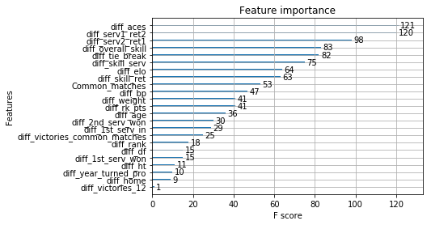
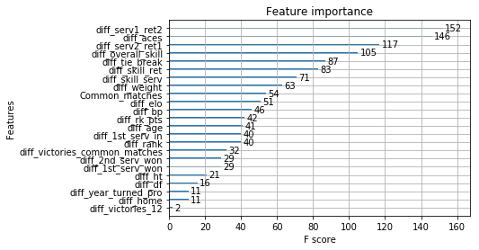
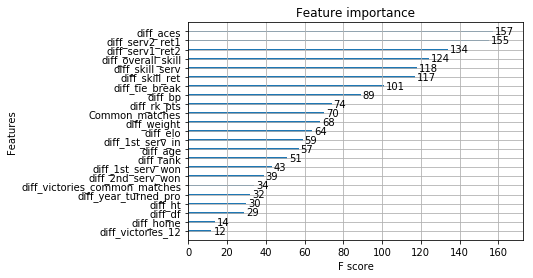
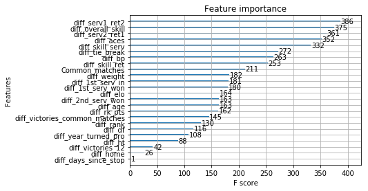
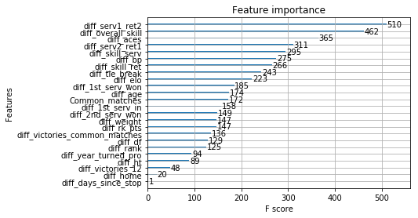
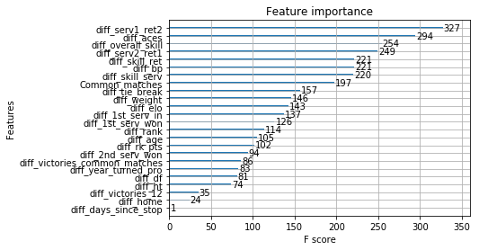

Python 3.5.5 |Anaconda custom (64-bit)| (default, Mar 12 2018, 17:44:09) [MSC v.1900 64 bit (AMD64)]
Type "copyright", "credits" or "license" for more information.
IPython 6.2.1 -- An enhanced Interactive Python.
In [1]: runfile('C:/Users/User/Documents/tennis/dynamic_data_analysis/script/main.py', wdir='C:/Users/User/Documents/tennis/dynamic_data_analysis/script')
0it [00:00, ?it/s]C:\Users\User\Anaconda3\lib\site-packages\spyder\utils\site\sitecustomize.py:705: DtypeWarning: Columns (49) have mixed types. Specify dtype option on import or set low_memory=False.
execfile(filename, namespace)
C:\Users\User\Anaconda3\lib\site-packages\spyder\utils\site\sitecustomize.py:705: DtypeWarning: Columns (48) have mixed types. Specify dtype option on import or set low_memory=False.
execfile(filename, namespace)
C:\Users\User\Documents\tennis\dynamic_data_analysis\script\data_prep\create_statistics_history.py:90: RuntimeWarning: invalid value encountered in double_scalars
+ ((winner_l_data["l_1stIn"]*winner_l_data["l_1stWon"] + (1-winner_l_data["l_1stIn"])*winner_l_data["l_2ndWon"])*winner_l_data["weight"]).sum())/weight_winner
C:\Users\User\Documents\tennis\dynamic_data_analysis\script\data_prep\create_statistics_history.py:93: RuntimeWarning: invalid value encountered in double_scalars
+ ((loser_l_data["l_1stIn"]*loser_l_data["l_1stWon"] + (1-loser_l_data["l_1stIn"])*loser_l_data["l_2ndWon"])*loser_l_data["weight"]).sum())/weight_loser
C:\Users\User\Documents\tennis\dynamic_data_analysis\script\data_prep\create_statistics_history.py:96: RuntimeWarning: invalid value encountered in double_scalars
+ ((winner_l_data["l_1st_srv_ret_won"]*winner_l_data["w_1stIn"] + (1-winner_l_data["w_1stIn"])*winner_l_data["l_2nd_srv_ret_won"])*winner_l_data["weight"]).sum())/weight_winner
C:\Users\User\Documents\tennis\dynamic_data_analysis\script\data_prep\create_statistics_history.py:99: RuntimeWarning: invalid value encountered in double_scalars
+ ((loser_l_data["l_1st_srv_ret_won"]*loser_l_data["w_1stIn"] + (1-loser_l_data["w_1stIn"])*loser_l_data["l_2nd_srv_ret_won"])*loser_l_data["weight"]).sum())/weight_loser
Traceback (most recent call last):
File "<ipython-input-1-fb861cb6d49b>", line 1, in <module>
runfile('C:/Users/User/Documents/tennis/dynamic_data_analysis/script/main.py', wdir='C:/Users/User/Documents/tennis/dynamic_data_analysis/script')
File "C:\Users\User\Anaconda3\lib\site-packages\spyder\utils\site\sitecustomize.py", line 705, in runfile
execfile(filename, namespace)
File "C:\Users\User\Anaconda3\lib\site-packages\spyder\utils\site\sitecustomize.py", line 102, in execfile
exec(compile(f.read(), filename, 'exec'), namespace)
File "C:/Users/User/Documents/tennis/dynamic_data_analysis/script/main.py", line 74, in <module>
data_atp = main_create_data(rebuild)
File "C:/Users/User/Documents/tennis/dynamic_data_analysis/script/main.py", line 50, in main_create_data
data_total, data3 = create_statistics(data2, redo= False)
File "C:\Users\User\Documents\tennis\dynamic_data_analysis\script\data_prep\create_statistics_history.py", line 238, in create_statistics
counts = data[["Date", "winner_id", "loser_id", "surface"]].apply(lambda x : weighted_statistics(x, [data[col_for_stats], correlation_surface, correlation_time]), axis= 1)
File "C:\Users\User\Anaconda3\lib\site-packages\pandas\core\frame.py", line 4877, in apply
ignore_failures=ignore_failures)
File "C:\Users\User\Anaconda3\lib\site-packages\pandas\core\frame.py", line 4973, in _apply_standard
results[i] = func(v)
File "C:\Users\User\Documents\tennis\dynamic_data_analysis\script\data_prep\create_statistics_history.py", line 238, in <lambda>
counts = data[["Date", "winner_id", "loser_id", "surface"]].apply(lambda x : weighted_statistics(x, [data[col_for_stats], correlation_surface, correlation_time]), axis= 1)
File "C:\Users\User\Anaconda3\lib\site-packages\pandas\core\frame.py", line 2133, in __getitem__
return self._getitem_array(key)
File "C:\Users\User\Anaconda3\lib\site-packages\pandas\core\frame.py", line 2178, in _getitem_array
return self._take(indexer, axis=1, convert=True)
File "C:\Users\User\Anaconda3\lib\site-packages\pandas\core\generic.py", line 2150, in _take
verify=True)
File "C:\Users\User\Anaconda3\lib\site-packages\pandas\core\internals.py", line 4264, in take
axis=axis, allow_dups=True)
File "C:\Users\User\Anaconda3\lib\site-packages\pandas\core\internals.py", line 4146, in reindex_indexer
fill_tuple=(fill_value,))
File "C:\Users\User\Anaconda3\lib\site-packages\pandas\core\internals.py", line 4226, in _slice_take_blocks_ax0
fill_tuple=None))
File "C:\Users\User\Anaconda3\lib\site-packages\pandas\core\internals.py", line 1217, in take_nd
allow_fill=False)
File "C:\Users\User\Anaconda3\lib\site-packages\pandas\core\algorithms.py", line 1379, in take_nd
out = np.empty(out_shape, dtype=dtype)
KeyboardInterrupt
In [2]:
In [2]: runfile('C:/Users/User/Documents/tennis/dynamic_data_analysis/script/main.py', wdir='C:/Users/User/Documents/tennis/dynamic_data_analysis/script')
Reloaded modules: data_prep, data_prep.extract_players, data_prep.extract_data_atp, utils.weight_past_matches, utils, data_prep.create_elo_rankingV2, utils.build_match_statistics_database, data_prep.missing_rank, data_prep.create_statistics_history, data_prep.missing_stats, data_prep.create_variables
0it [00:00, ?it/s]C:\Users\User\Anaconda3\lib\site-packages\spyder\utils\site\sitecustomize.py:705: DtypeWarning: Columns (49) have mixed types. Specify dtype option on import or set low_memory=False.
execfile(filename, namespace)
C:\Users\User\Anaconda3\lib\site-packages\spyder\utils\site\sitecustomize.py:705: DtypeWarning: Columns (48) have mixed types. Specify dtype option on import or set low_memory=False.
execfile(filename, namespace)
Exception in thread Thread-7:
Traceback (most recent call last):
File "C:\Users\User\Anaconda3\lib\threading.py", line 914, in _bootstrap_inner
self.run()
File "C:\Users\User\Anaconda3\lib\site-packages\tqdm\_tqdm.py", line 144, in run
for instance in self.tqdm_cls._instances:
File "C:\Users\User\Anaconda3\lib\_weakrefset.py", line 60, in __iter__
for itemref in self.data:
RuntimeError: Set changed size during iteration
C:\Users\User\Documents\tennis\dynamic_data_analysis\script\data_prep\create_statistics_history.py:90: RuntimeWarning: invalid value encountered in double_scalars
+ ((winner_l_data["l_1stIn"]*winner_l_data["l_1stWon"] + (1-winner_l_data["l_1stIn"])*winner_l_data["l_2ndWon"])*winner_l_data["weight"]).sum())/weight_winner
C:\Users\User\Documents\tennis\dynamic_data_analysis\script\data_prep\create_statistics_history.py:93: RuntimeWarning: invalid value encountered in double_scalars
+ ((loser_l_data["l_1stIn"]*loser_l_data["l_1stWon"] + (1-loser_l_data["l_1stIn"])*loser_l_data["l_2ndWon"])*loser_l_data["weight"]).sum())/weight_loser
C:\Users\User\Documents\tennis\dynamic_data_analysis\script\data_prep\create_statistics_history.py:96: RuntimeWarning: invalid value encountered in double_scalars
+ ((winner_l_data["l_1st_srv_ret_won"]*winner_l_data["w_1stIn"] + (1-winner_l_data["w_1stIn"])*winner_l_data["l_2nd_srv_ret_won"])*winner_l_data["weight"]).sum())/weight_winner
C:\Users\User\Documents\tennis\dynamic_data_analysis\script\data_prep\create_statistics_history.py:99: RuntimeWarning: invalid value encountered in double_scalars
+ ((loser_l_data["l_1st_srv_ret_won"]*loser_l_data["w_1stIn"] + (1-loser_l_data["w_1stIn"])*loser_l_data["l_2nd_srv_ret_won"])*loser_l_data["weight"]).sum())/weight_loser
C:\Users\User\Documents\tennis\dynamic_data_analysis\script\data_prep\create_statistics_history.py:136: RuntimeWarning: invalid value encountered in double_scalars
((loser_w_data["w_bpSaved"]*loser_w_data["w_bp_converted"]*loser_w_data["weight"]).sum() + (loser_l_data["l_bpSaved"]*loser_l_data["l_bp_converted"]*loser_l_data["weight"]).sum())/weight_loser,
Traceback (most recent call last):
File "<ipython-input-2-fb861cb6d49b>", line 1, in <module>
runfile('C:/Users/User/Documents/tennis/dynamic_data_analysis/script/main.py', wdir='C:/Users/User/Documents/tennis/dynamic_data_analysis/script')
File "C:\Users\User\Anaconda3\lib\site-packages\spyder\utils\site\sitecustomize.py", line 705, in runfile
execfile(filename, namespace)
File "C:\Users\User\Anaconda3\lib\site-packages\spyder\utils\site\sitecustomize.py", line 102, in execfile
exec(compile(f.read(), filename, 'exec'), namespace)
File "C:/Users/User/Documents/tennis/dynamic_data_analysis/script/main.py", line 74, in <module>
data_atp = main_create_data(rebuild)
File "C:/Users/User/Documents/tennis/dynamic_data_analysis/script/main.py", line 50, in main_create_data
data_total, data3 = create_statistics(data2, redo= False)
File "C:\Users\User\Documents\tennis\dynamic_data_analysis\script\data_prep\create_statistics_history.py", line 247, in create_statistics
data = global_stats(data)
File "C:\Users\User\Documents\tennis\dynamic_data_analysis\script\data_prep\create_statistics_history.py", line 190, in global_stats
data["diff_age"] = ((data["Date"] - data["DOB_w"]).dt.days - (data["Date"] - data["DOB_l"]).dt.days)/365
File "C:\Users\User\Anaconda3\lib\site-packages\pandas\core\ops.py", line 720, in wrapper
converted = _Op.get_op(left, right, name, na_op)
File "C:\Users\User\Anaconda3\lib\site-packages\pandas\core\ops.py", line 349, in get_op
return _TimeOp(left, right, name, na_op)
File "C:\Users\User\Anaconda3\lib\site-packages\pandas\core\ops.py", line 363, in __init__
rvalues = self._convert_to_array(right, name=name, other=lvalues)
File "C:\Users\User\Anaconda3\lib\site-packages\pandas\core\ops.py", line 523, in _convert_to_array
.format(dtype=np.array(values).dtype))
TypeError: incompatible type [object] for a datetime/timedelta operation
In [3]:
In [3]: data2 = pd.read_csv(os.environ["DATA_PATH"] + "/clean_datasets/historical/matches_elo_variables_V1.csv")
...: data2["Date"]= pd.to_datetime(data2["Date"], format = "%Y-%m-%d")
...: data2["DOB_w"] = pd.to_datetime(data2["DOB_w"], format = "%Y-%m-%d")
...: data2["DOB_l"] = pd.to_datetime(data2["DOB_l"], format = "%Y-%m-%d")
C:\Users\User\Anaconda3\lib\site-packages\IPython\core\interactiveshell.py:2728: DtypeWarning: Columns (48) have mixed types. Specify dtype option on import or set low_memory=False.
interactivity=interactivity, compiler=compiler, result=result)
In [4]: data2["DOB_w"]
Out[4]:
0 1971-01-16
1 1960-12-31
2 1968-10-18
3 1959-10-11
4 1967-10-02
5 1960-12-29
6 1963-03-20
7 1968-02-03
8 1966-02-11
9 1964-08-16
10 1967-03-03
11 1970-11-07
12 1962-07-18
13 1965-09-11
14 1966-07-28
15 1971-01-16
16 1968-10-18
17 1967-10-02
18 1966-05-17
19 1968-02-03
20 1964-08-16
21 1962-07-18
22 1965-09-11
23 1971-01-16
24 1967-10-02
25 1964-08-16
26 1965-09-11
27 1967-10-02
28 1964-08-16
29 1967-10-02
...
81493 1980-08-02
81494 1990-07-13
81495 1992-02-23
81496 1991-07-12
81497 1991-07-12
81498 1990-10-17
81499 1985-03-28
81500 1991-07-12
81501 1990-10-17
81502 1992-11-04
81503 1985-03-28
81504 1986-02-10
81505 1991-07-12
81506 1995-06-15
81507 1990-10-17
81508 1983-05-09
81509 1992-11-04
81510 1985-06-17
81511 1989-07-11
81512 1986-09-07
81513 1986-02-10
81514 1991-07-12
81515 1995-06-15
81516 1989-03-30
81517 1990-10-17
81518 1987-03-05
81519 1984-02-21
81520 1987-11-03
81521 1992-11-04
81522 1985-06-17
Name: DOB_w, Length: 81523, dtype: datetime64[ns]
In [5]: runfile('C:/Users/User/Documents/tennis/dynamic_data_analysis/script/main.py', wdir='C:/Users/User/Documents/tennis/dynamic_data_analysis/script')
Reloaded modules: data_prep, data_prep.extract_players, data_prep.extract_data_atp, utils.weight_past_matches, utils, data_prep.create_elo_rankingV2, utils.build_match_statistics_database, data_prep.missing_rank, data_prep.create_statistics_history, data_prep.missing_stats, data_prep.create_variables
0it [00:00, ?it/s]
C:\Users\User\Anaconda3\lib\site-packages\spyder\utils\site\sitecustomize.py:705: DtypeWarning: Columns (49) have mixed types. Specify dtype option on import or set low_memory=False.
execfile(filename, namespace)
C:\Users\User\Anaconda3\lib\site-packages\spyder\utils\site\sitecustomize.py:705: DtypeWarning: Columns (48) have mixed types. Specify dtype option on import or set low_memory=False.
execfile(filename, namespace)
Traceback (most recent call last):
File "<ipython-input-5-fb861cb6d49b>", line 1, in <module>
runfile('C:/Users/User/Documents/tennis/dynamic_data_analysis/script/main.py', wdir='C:/Users/User/Documents/tennis/dynamic_data_analysis/script')
File "C:\Users\User\Anaconda3\lib\site-packages\spyder\utils\site\sitecustomize.py", line 705, in runfile
execfile(filename, namespace)
File "C:\Users\User\Anaconda3\lib\site-packages\spyder\utils\site\sitecustomize.py", line 102, in execfile
exec(compile(f.read(), filename, 'exec'), namespace)
File "C:/Users/User/Documents/tennis/dynamic_data_analysis/script/main.py", line 78, in <module>
"create_statistics" : True}
File "C:/Users/User/Documents/tennis/dynamic_data_analysis/script/main.py", line 54, in main_create_data
### create counting past historical data
File "C:\Users\User\Documents\tennis\dynamic_data_analysis\script\data_prep\create_statistics_history.py", line 228, in create_statistics
data["diff_fatigue_games"] = data[["ref_days", "winner_id", "loser_id", "total_games"]].apply(lambda x : fatigue_games(x, data), axis= 1)
File "C:\Users\User\Anaconda3\lib\site-packages\pandas\core\frame.py", line 4877, in apply
ignore_failures=ignore_failures)
File "C:\Users\User\Anaconda3\lib\site-packages\pandas\core\frame.py", line 4933, in _apply_standard
labels=labels)
File "pandas/_libs/src/reduce.pyx", line 622, in pandas._libs.lib.reduce
File "pandas/_libs/src/reduce.pyx", line 134, in pandas._libs.lib.Reducer.get_result
File "C:\Users\User\Documents\tennis\dynamic_data_analysis\script\data_prep\create_statistics_history.py", line 228, in <lambda>
data["diff_fatigue_games"] = data[["ref_days", "winner_id", "loser_id", "total_games"]].apply(lambda x : fatigue_games(x, data), axis= 1)
File "C:\Users\User\Documents\tennis\dynamic_data_analysis\script\data_prep\create_statistics_history.py", line 168, in fatigue_games
sub_data = data.loc[(x["ref_days"] - data["ref_days"]).between(1,days)]
File "C:\Users\User\Anaconda3\lib\site-packages\pandas\core\ops.py", line 739, in wrapper
result = wrap_results(safe_na_op(lvalues, rvalues))
File "C:\Users\User\Anaconda3\lib\site-packages\pandas\core\ops.py", line 700, in safe_na_op
return na_op(lvalues, rvalues)
File "C:\Users\User\Anaconda3\lib\site-packages\pandas\core\ops.py", line 676, in na_op
result = expressions.evaluate(op, str_rep, x, y, **eval_kwargs)
File "C:\Users\User\Anaconda3\lib\site-packages\pandas\core\computation\expressions.py", line 204, in evaluate
return _evaluate(op, op_str, a, b, **eval_kwargs)
File "C:\Users\User\Anaconda3\lib\site-packages\pandas\core\computation\expressions.py", line 110, in _evaluate_numexpr
**eval_kwargs)
File "C:\Users\User\Anaconda3\lib\site-packages\numexpr\necompiler.py", line 820, in evaluate
return compiled_ex(*arguments, **kwargs)
KeyboardInterrupt
In [6]:
In [6]: runfile('C:/Users/User/Documents/tennis/dynamic_data_analysis/script/main.py', wdir='C:/Users/User/Documents/tennis/dynamic_data_analysis/script')
Reloaded modules: data_prep, data_prep.extract_players, data_prep.extract_data_atp, utils.weight_past_matches, utils, data_prep.create_elo_rankingV2, utils.build_match_statistics_database, data_prep.missing_rank, data_prep.create_statistics_history, data_prep.missing_stats, data_prep.create_variables
0it [00:00, ?it/s]
exec stats 6772.685039281845
In [7]: data_atp
Out[7]:
( tourney_id surface draw_size tourney_level match_num winner_id \
0 1990-339 Hard 32 A 1 101843
1 1990-339 Hard 32 A 2 100714
2 1990-339 Hard 32 A 3 101529
3 1990-339 Hard 32 A 4 100628
4 1990-339 Hard 32 A 5 101404
5 1990-339 Hard 32 A 6 100713
6 1990-339 Hard 32 A 8 100901
7 1990-339 Hard 32 A 9 101440
8 1990-339 Hard 32 A 10 101234
9 1990-339 Hard 32 A 11 101061
10 1990-339 Hard 32 A 12 101334
11 1990-339 Hard 32 A 13 101820
12 1990-339 Hard 32 A 14 100844
13 1990-339 Hard 32 A 15 101179
14 1990-339 Hard 32 A 16 101274
15 1990-339 Hard 32 A 17 101843
16 1990-339 Hard 32 A 18 101529
17 1990-339 Hard 32 A 19 101404
18 1990-339 Hard 32 A 20 101256
19 1990-339 Hard 32 A 21 101440
20 1990-339 Hard 32 A 22 101061
21 1990-339 Hard 32 A 23 100844
22 1990-339 Hard 32 A 24 101179
23 1990-339 Hard 32 A 25 101843
24 1990-339 Hard 32 A 26 101404
25 1990-339 Hard 32 A 27 101061
26 1990-339 Hard 32 A 28 101179
27 1990-339 Hard 32 A 29 101404
28 1990-339 Hard 32 A 30 101061
29 1990-339 Hard 32 A 31 101404
... ... ... ... ... ... ...
81493 2018-7161 Clay 32 A 273 103607
81494 2018-7161 Clay 32 A 272 105589
81495 2018-7161 Clay 32 A 271 105933
81496 2018-7434 Hard 32 A 300 105806
81497 2018-7434 Hard 32 A 299 105806
81498 2018-7434 Hard 32 A 298 105657
81499 2018-7434 Hard 32 A 297 104527
81500 2018-7434 Hard 32 A 296 105806
81501 2018-7434 Hard 32 A 295 105657
81502 2018-7434 Hard 32 A 294 106075
81503 2018-7434 Hard 32 A 293 104527
81504 2018-7434 Hard 32 A 292 104678
81505 2018-7434 Hard 32 A 291 105806
81506 2018-7434 Hard 32 A 290 109739
81507 2018-7434 Hard 32 A 289 105657
81508 2018-7434 Hard 32 A 288 104180
81509 2018-7434 Hard 32 A 287 106075
81510 2018-7434 Hard 32 A 286 104571
81511 2018-7434 Hard 32 A 284 105373
81512 2018-7434 Hard 32 A 283 104797
81513 2018-7434 Hard 32 A 282 104678
81514 2018-7434 Hard 32 A 280 105806
81515 2018-7434 Hard 32 A 279 109739
81516 2018-7434 Hard 32 A 278 105311
81517 2018-7434 Hard 32 A 277 105657
81518 2018-7434 Hard 32 A 276 104882
81519 2018-7434 Hard 32 A 275 104312
81520 2018-7434 Hard 32 A 273 105041
81521 2018-7434 Hard 32 A 272 106075
81522 2018-7434 Hard 32 A 271 104571
winner_name winner_hand winner_ht winner_ioc ... \
0 Sergi Bruguera 0 188.0 ESP ...
1 Broderick Dyke 0 183.0 AUS ...
2 Michael Stich 0 193.0 GER ...
3 Michiel Schapers 0 201.0 NED ...
4 Thomas Muster 0 180.0 AUT ...
5 John Fitzgerald 0 183.0 AUS ...
6 Paul Annacone 0 185.0 USA ...
7 Mark Koevermans 0 185.0 NED ...
8 Patrik Kuhnen 0 190.0 GER ...
9 Jimmy Arias 0 175.0 USA ...
10 Alexander Volkov 0 188.0 RUS ...
11 Marc Rosset 0 201.0 SUI ...
12 Jerome Potier 0 180.0 FRA ...
13 Jean Philippe Fleurian 0 185.0 FRA ...
14 Udo Riglewski 0 185.0 GER ...
15 Sergi Bruguera 0 188.0 ESP ...
16 Michael Stich 0 193.0 GER ...
17 Thomas Muster 0 180.0 AUT ...
18 Mark Kratzmann 0 178.0 AUS ...
19 Mark Koevermans 0 185.0 NED ...
20 Jimmy Arias 0 175.0 USA ...
21 Jerome Potier 0 180.0 FRA ...
22 Jean Philippe Fleurian 0 185.0 FRA ...
23 Sergi Bruguera 0 188.0 ESP ...
24 Thomas Muster 0 180.0 AUT ...
25 Jimmy Arias 0 175.0 USA ...
26 Jean Philippe Fleurian 0 185.0 FRA ...
27 Thomas Muster 0 180.0 AUT ...
28 Jimmy Arias 0 175.0 USA ...
29 Thomas Muster 0 180.0 AUT ...
... ... ... ... ... ...
81493 Victor Estrella 0 170.0 DOM ...
81494 Gerald Melzer 0 188.0 AUT ...
81495 Roberto Quiroz 0 193.0 ECU ...
81496 Mirza Basic 0 188.0 BIH ...
81497 Mirza Basic 0 188.0 BIH ...
81498 Marius Copil 0 191.0 ROU ...
81499 Stanislas Wawrinka 0 183.0 SUI ...
81500 Mirza Basic 0 188.0 BIH ...
81501 Marius Copil 0 191.0 ROU ...
81502 Jozef Kovalik 0 183.0 SVK ...
81503 Stanislas Wawrinka 0 183.0 SUI ...
81504 Viktor Troicki 0 193.0 SRB ...
81505 Mirza Basic 0 188.0 BIH ...
81506 Maximilian Marterer 0 191.0 GER ...
81507 Marius Copil 0 191.0 ROU ...
81508 Gilles Muller 0 193.0 LUX ...
81509 Jozef Kovalik 0 183.0 SVK ...
81510 Marcos Baghdatis 0 178.0 CYP ...
81511 Martin Klizan 0 191.0 SVK ...
81512 Denis Istomin 0 188.0 UZB ...
81513 Viktor Troicki 0 193.0 SRB ...
81514 Mirza Basic 0 188.0 BIH ...
81515 Maximilian Marterer 0 191.0 GER ...
81516 Joao Sousa 0 185.0 POR ...
81517 Marius Copil 0 191.0 ROU ...
81518 Blaz Kavcic 0 188.0 SLO ...
81519 Andreas Seppi 0 191.0 ITA ...
81520 Lukas Lacko 0 185.0 SVK ...
81521 Jozef Kovalik 0 183.0 SVK ...
81522 Marcos Baghdatis 0 178.0 CYP ...
diff_ht diff_weight diff_year_turned_pro diff_elo diff_rank \
0 -3.0 1.0 1.0 0.000000 -257.0
1 -7.0 -6.0 0.0 0.000000 19.0
2 10.0 -3.0 2.0 0.000000 42.0
3 11.0 10.0 -4.0 0.000000 -12.0
4 0.0 1.0 0.0 0.000000 -66.0
5 -10.0 -10.0 -9.0 0.000000 -229.0
6 10.0 12.0 -4.0 0.000000 -39.0
7 -3.0 1.0 0.0 0.000000 -101.0
8 3.0 2.0 1.0 0.000000 20.0
9 -13.0 -18.0 -4.0 0.000000 16.0
10 10.0 4.0 0.0 0.000000 -100.0
11 21.0 13.0 0.0 0.000000 -3.0
12 -18.0 -30.0 -1.0 0.000000 5.0
13 10.0 13.0 1.0 0.000000 -21.0
14 -8.0 -2.0 -3.0 0.000000 89.0
15 5.0 0.0 6.0 0.000000 -121.0
16 -8.0 -4.0 6.0 0.000000 45.0
17 -3.0 0.0 6.0 0.000000 -73.0
18 -7.0 -6.0 3.0 -61.044918 64.0
19 -5.0 -3.0 2.0 0.000000 -33.0
20 -13.0 -9.0 -8.0 0.000000 39.0
21 -21.0 -18.0 -8.0 0.000000 17.0
22 0.0 -1.0 0.0 0.000000 -44.0
23 -5.0 -3.0 0.0 0.000000 -88.0
24 2.0 4.0 1.0 46.777916 -81.0
25 -10.0 -9.0 -7.0 0.000000 25.0
26 5.0 9.0 5.0 0.000000 -13.0
27 -8.0 1.0 -3.0 -7.281610 9.0
28 -10.0 -9.0 -5.0 0.000000 14.0
29 5.0 7.0 5.0 -6.193927 -54.0
... ... ... ... ... ...
81493 18.0 5.0 3.0 107.683347 22.0
81494 -3.0 -2.0 3.0 -213.452129 1.0
81495 -0.0 -2.0 1.0 253.660173 -169.0
81496 3.0 -1.0 -4.0 -101.224645 -36.0
81497 -5.0 -7.0 -10.0 280.342653 -114.0
81498 -8.0 -5.0 1.0 -86.678168 94.0
81499 10.0 5.0 4.0 -260.431302 52.0
81500 3.0 -4.0 3.0 -373.907471 -47.0
81501 2.0 2.0 -7.0 254.104055 -65.0
81502 -5.0 -0.0 -6.0 340.847720 -64.0
81503 8.0 -1.0 5.0 -293.493988 132.0
81504 -5.0 2.0 -2.0 7.531247 7.0
81505 -10.0 -18.0 -11.0 76.230039 -94.0
81506 -6.0 -10.0 -7.0 261.611425 -14.0
81507 -3.0 -9.0 -3.0 -96.995102 18.0
81508 -2.0 -14.0 1.0 -93.103912 49.0
81509 2.0 3.0 -4.0 83.333734 -91.0
81510 2.0 -12.0 1.0 43.745272 -98.0
81511 -3.0 -0.0 10.0 -229.365865 1382.0
81512 -8.0 -20.0 12.0 -255.532523 562.0
81513 -0.0 2.0 -2.0 -63.076210 132.0
81514 3.0 -6.0 -11.0 -148.043017 -57.0
81515 -6.0 -2.0 -12.0 133.781128 28.0
81516 -2.0 -2.0 1.0 -236.032944 272.0
81517 -0.0 -16.0 -3.0 89.372661 -51.0
81518 -3.0 2.0 8.0 113.858597 -23.0
81519 -8.0 -2.0 -3.0 -107.340243 15.0
81520 -0.0 -11.0 2.0 -95.576683 -25.0
81521 -8.0 -13.0 -1.0 -47.544382 -98.0
81522 7.0 -2.0 7.0 -388.427598 62.0
diff_rk_pts diff_hand diff_is_birthday diff_home target
0 521.0 0 0 0 1
1 -25.0 0 0 1 1
2 -75.0 0 0 0 1
3 26.0 0 0 0 1
4 272.0 0 0 0 1
5 163.0 0 0 1 1
6 114.0 0 0 0 1
7 171.0 0 0 0 1
8 -44.0 0 0 0 1
9 -30.0 0 0 -1 1
10 213.0 0 0 -1 1
11 5.0 0 0 0 1
12 -12.0 0 0 0 1
13 41.0 0 0 0 1
14 -328.0 0 0 0 1
15 434.0 0 0 -1 1
16 -82.0 0 0 0 1
17 279.0 0 0 -1 1
18 -150.0 0 0 1 1
19 70.0 0 0 0 1
20 -111.0 0 0 0 1
21 -34.0 0 0 0 1
22 79.0 0 0 0 1
23 376.0 0 0 0 1
24 285.0 0 0 -1 1
25 -50.0 0 0 0 1
26 27.0 0 0 0 1
27 -95.0 0 0 0 1
28 -27.0 0 0 0 1
29 240.0 0 0 0 1
... ... ... ... ... ...
81493 -121.0 0 0 0 0
81494 -2.0 0 0 0 0
81495 328.0 0 0 -1 0
81496 148.0 0 0 0 0
81497 1937.0 0 0 0 0
81498 -312.0 0 0 0 0
81499 -1630.0 0 0 0 0
81500 221.0 0 0 0 0
81501 939.0 0 0 0 0
81502 190.0 0 0 0 0
81503 -1996.0 0 0 0 0
81504 -42.0 0 0 0 0
81505 887.0 0 0 0 0
81506 86.0 0 0 0 0
81507 -83.0 0 0 0 0
81508 -849.0 0 0 0 0
81509 267.0 0 0 0 0
81510 1196.0 0 0 0 0
81511 -387.0 0 0 0 0
81512 1642.0 0 0 1 0
81513 -489.0 0 0 0 0
81514 285.0 0 0 0 0
81515 -154.0 0 0 0 0
81516 -621.0 0 0 1 0
81517 579.0 0 0 0 0
81518 113.0 0 0 0 0
81519 -82.0 0 0 0 0
81520 188.0 0 0 0 0
81521 334.0 0 0 0 0
81522 -188.0 0 0 0 0
[163046 rows x 130 columns],
diff_aces diff_df diff_1st_serv_in diff_fatigue_games \
0 NaN NaN NaN 0
1 NaN NaN NaN 0
2 NaN NaN NaN 0
3 NaN NaN NaN 0
4 NaN NaN NaN 0
5 NaN NaN NaN 0
6 NaN NaN NaN 0
7 NaN NaN NaN 0
8 NaN NaN NaN 0
9 NaN NaN NaN 0
10 NaN NaN NaN 0
11 NaN NaN NaN 0
12 NaN NaN NaN 0
13 NaN NaN NaN 0
14 NaN NaN NaN 0
15 NaN NaN NaN 0
16 NaN NaN NaN 0
17 NaN NaN NaN 0
18 NaN NaN NaN 0
19 NaN NaN NaN 0
20 NaN NaN NaN 0
21 NaN NaN NaN 0
22 NaN NaN NaN 0
23 NaN NaN NaN 0
24 NaN NaN NaN 0
25 NaN NaN NaN 0
26 NaN NaN NaN 0
27 NaN NaN NaN 0
28 NaN NaN NaN 0
29 NaN NaN NaN 0
... ... ... ... ...
81493 0.036496 0.015432 -0.076356 0
81494 -0.006175 0.041516 -0.059717 0
81495 NaN NaN NaN 0
81496 0.051832 0.007237 0.027808 0
81497 0.045149 0.001343 0.017506 0
81498 -0.106297 -0.017564 0.050999 0
81499 0.019855 0.003888 0.028668 0
81500 -0.064674 0.042254 0.043403 0
81501 0.046082 0.005100 0.040295 0
81502 0.029345 0.025476 -0.068909 0
81503 -0.029147 0.019940 0.006405 0
81504 -0.023424 -0.010660 0.041807 0
81505 0.013623 0.003256 0.014876 0
81506 -0.016312 -0.005071 -0.040897 0
81507 -0.088028 0.020581 0.063023 0
81508 -0.117510 -0.011537 -0.043701 0
81509 0.025178 0.003791 -0.073194 0
81510 -0.038032 -0.009617 0.069098 0
81511 NaN NaN NaN 0
81512 NaN NaN NaN 0
81513 0.011172 0.020676 -0.008342 0
81514 0.017568 0.000914 0.034710 0
81515 -0.034975 0.008060 -0.184774 0
81516 -0.024065 0.014943 0.074748 0
81517 -0.051224 -0.004549 0.037158 0
81518 -0.003026 0.000223 -0.004450 0
81519 -0.015589 0.001431 0.035620 0
81520 -0.004966 -0.003313 -0.001770 0
81521 -0.003752 0.020311 0.000750 0
81522 -0.084435 -0.003242 0.190786 0
diff_1st_serv_won diff_2nd_serv_won diff_skill_serv diff_skill_ret \
0 NaN NaN NaN NaN
1 NaN NaN NaN NaN
2 NaN NaN NaN NaN
3 NaN NaN NaN NaN
4 NaN NaN NaN NaN
5 NaN NaN NaN NaN
6 NaN NaN NaN NaN
7 NaN NaN NaN NaN
8 NaN NaN NaN NaN
9 NaN NaN NaN NaN
10 NaN NaN NaN NaN
11 NaN NaN NaN NaN
12 NaN NaN NaN NaN
13 NaN NaN NaN NaN
14 NaN NaN NaN NaN
15 NaN NaN NaN NaN
16 NaN NaN NaN NaN
17 NaN NaN NaN NaN
18 NaN NaN NaN NaN
19 NaN NaN NaN NaN
20 NaN NaN NaN NaN
21 NaN NaN NaN NaN
22 NaN NaN NaN NaN
23 NaN NaN NaN NaN
24 NaN NaN NaN NaN
25 NaN NaN NaN NaN
26 NaN NaN NaN NaN
27 NaN NaN NaN NaN
28 NaN NaN NaN NaN
29 NaN NaN NaN NaN
... ... ... ... ...
81493 -0.011024 0.052630 -0.004869 0.054636
81494 -0.099792 -0.013305 -0.084808 -0.086090
81495 NaN NaN NaN NaN
81496 0.043111 -0.026448 0.018099 -0.047540
81497 0.071634 0.000054 0.047790 0.067255
81498 -0.031957 -0.012998 -0.016241 0.040582
81499 0.012398 -0.047083 -0.004263 -0.006430
81500 -0.031331 -0.144869 -0.058367 -0.235714
81501 0.067995 -0.025547 0.041593 -0.007932
81502 0.014025 0.011103 0.000006 0.020188
81503 -0.032761 -0.030725 -0.027757 -0.020069
81504 0.017214 -0.007934 0.016657 -0.013815
81505 0.044725 0.013937 0.037075 0.049117
81506 -0.018360 0.021788 -0.010009 0.059557
81507 -0.008977 -0.067209 -0.017797 0.064304
81508 -0.086070 0.020184 -0.053955 0.041869
81509 0.003356 0.017493 -0.005972 -0.031618
81510 0.015502 -0.040271 0.000762 -0.002872
81511 NaN NaN NaN NaN
81512 NaN NaN NaN NaN
81513 0.007661 0.007200 0.004080 -0.016753
81514 0.042269 -0.013258 0.030390 0.040157
81515 -0.127103 0.077789 -0.077007 0.046858
81516 -0.061384 -0.014031 -0.031603 -0.027852
81517 0.011280 -0.014214 0.010901 0.042852
81518 -0.050171 0.006647 -0.027467 -0.039369
81519 0.012438 -0.016893 0.007927 0.006742
81520 0.007397 0.000298 0.007217 0.011953
81521 -0.008137 0.012286 0.003147 -0.014285
81522 0.053962 -0.136882 0.004252 -0.029826
diff_overall_skill diff_serv1_ret2 ... diff_home target \
0 NaN NaN ... 0 1
1 NaN NaN ... 1 1
2 NaN NaN ... 0 1
3 NaN NaN ... 0 1
4 NaN NaN ... 0 1
5 NaN NaN ... 1 1
6 NaN NaN ... 0 1
7 NaN NaN ... 0 1
8 NaN NaN ... 0 1
9 NaN NaN ... -1 1
10 NaN NaN ... -1 1
11 NaN NaN ... 0 1
12 NaN NaN ... 0 1
13 NaN NaN ... 0 1
14 NaN NaN ... 0 1
15 NaN NaN ... -1 1
16 NaN NaN ... 0 1
17 NaN NaN ... -1 1
18 NaN NaN ... 1 1
19 NaN NaN ... 0 1
20 NaN NaN ... 0 1
21 NaN NaN ... 0 1
22 NaN NaN ... 0 1
23 NaN NaN ... 0 1
24 NaN NaN ... -1 1
25 NaN NaN ... 0 1
26 NaN NaN ... 0 1
27 NaN NaN ... 0 1
28 NaN NaN ... 0 1
29 NaN NaN ... 0 1
... ... ... ... ... ...
81493 0.010264 0.034901 ... 0 0
81494 -0.054757 -0.091097 ... 0 0
81495 NaN NaN ... -1 0
81496 0.002686 -0.009090 ... 0 0
81497 0.036627 0.057100 ... 0 0
81498 -0.003445 0.007042 ... 0 0
81499 0.002707 0.012071 ... 0 0
81500 -0.117001 -0.249167 ... 0 0
81501 0.003887 -0.026901 ... 0 0
81502 0.010367 0.030926 ... 0 0
81503 -0.010190 -0.001156 ... 0 0
81504 0.005317 -0.001315 ... 0 0
81505 0.026018 0.038962 ... 0 0
81506 0.005392 0.026752 ... 0 0
81507 0.006922 0.040058 ... 0 0
81508 -0.028788 -0.025176 ... 0 0
81509 -0.006753 -0.013832 ... 0 0
81510 0.010799 0.031644 ... 0 0
81511 NaN NaN ... 0 0
81512 NaN NaN ... 1 0
81513 -0.000212 -0.004633 ... 0 0
81514 0.014252 0.011861 ... 0 0
81515 -0.033807 -0.019124 ... 0 0
81516 -0.010218 0.000226 ... 1 0
81517 0.011046 0.021773 ... 0 0
81518 -0.035433 -0.072086 ... 0 0
81519 0.015626 0.038450 ... 0 0
81520 0.003165 0.002414 ... 0 0
81521 0.003817 0.008178 ... 0 0
81522 0.010733 0.031395 ... 0 0
Date winner_id loser_id tourney_name prize best_of \
0 1990-01-01 101843 101632 Adelaide 150000 3
1 1990-01-01 100714 101096 Adelaide 150000 3
2 1990-01-01 101529 101232 Adelaide 150000 3
3 1990-01-01 100628 101434 Adelaide 150000 3
4 1990-01-01 101404 101387 Adelaide 150000 3
5 1990-01-01 100713 101552 Adelaide 150000 3
6 1990-01-01 100901 101344 Adelaide 150000 3
7 1990-01-01 101440 101123 Adelaide 150000 3
8 1990-01-01 101234 101235 Adelaide 150000 3
9 1990-01-01 101061 101185 Adelaide 150000 3
10 1990-01-01 101334 101889 Adelaide 150000 3
11 1990-01-01 101820 101772 Adelaide 150000 3
12 1990-01-01 100844 100946 Adelaide 150000 3
13 1990-01-01 101179 101071 Adelaide 150000 3
14 1990-01-01 101274 101964 Adelaide 150000 3
15 1990-01-01 101843 100714 Adelaide 150000 3
16 1990-01-01 101529 100628 Adelaide 150000 3
17 1990-01-01 101404 100713 Adelaide 150000 3
18 1990-01-01 101256 100901 Adelaide 150000 3
19 1990-01-01 101440 101234 Adelaide 150000 3
20 1990-01-01 101061 101334 Adelaide 150000 3
21 1990-01-01 100844 101820 Adelaide 150000 3
22 1990-01-01 101179 101274 Adelaide 150000 3
23 1990-01-01 101843 101529 Adelaide 150000 3
24 1990-01-01 101404 101256 Adelaide 150000 3
25 1990-01-01 101061 101440 Adelaide 150000 3
26 1990-01-01 101179 100844 Adelaide 150000 3
27 1990-01-01 101404 101843 Adelaide 150000 3
28 1990-01-01 101061 101179 Adelaide 150000 3
29 1990-01-01 101404 101061 Adelaide 150000 3
... ... ... ... ... ... ...
81493 2018-02-05 103607 105064 Ecuador Open 561345 3
81494 2018-02-05 105589 106065 Ecuador Open 561345 3
81495 2018-02-05 105933 105870 Ecuador Open 561345 3
81496 2018-02-05 105806 105657 Diema Xtra Sofia Open 561345 3
81497 2018-02-05 105806 104527 Diema Xtra Sofia Open 561345 3
81498 2018-02-05 105657 106075 Diema Xtra Sofia Open 561345 3
81499 2018-02-05 104527 104678 Diema Xtra Sofia Open 561345 3
81500 2018-02-05 105806 109739 Diema Xtra Sofia Open 561345 3
81501 2018-02-05 105657 104180 Diema Xtra Sofia Open 561345 3
81502 2018-02-05 106075 104571 Diema Xtra Sofia Open 561345 3
81503 2018-02-05 104527 105373 Diema Xtra Sofia Open 561345 3
81504 2018-02-05 104678 104797 Diema Xtra Sofia Open 561345 3
81505 2018-02-05 105806 104259 Diema Xtra Sofia Open 561345 3
81506 2018-02-05 109739 105311 Diema Xtra Sofia Open 561345 3
81507 2018-02-05 105657 104882 Diema Xtra Sofia Open 561345 3
81508 2018-02-05 104180 104312 Diema Xtra Sofia Open 561345 3
81509 2018-02-05 106075 105041 Diema Xtra Sofia Open 561345 3
81510 2018-02-05 104571 105173 Diema Xtra Sofia Open 561345 3
81511 2018-02-05 105373 200574 Diema Xtra Sofia Open 561345 3
81512 2018-02-05 104797 202090 Diema Xtra Sofia Open 561345 3
81513 2018-02-05 104678 105208 Diema Xtra Sofia Open 561345 3
81514 2018-02-05 105806 104252 Diema Xtra Sofia Open 561345 3
81515 2018-02-05 109739 104291 Diema Xtra Sofia Open 561345 3
81516 2018-02-05 105311 106220 Diema Xtra Sofia Open 561345 3
81517 2018-02-05 105657 104898 Diema Xtra Sofia Open 561345 3
81518 2018-02-05 104882 111513 Diema Xtra Sofia Open 561345 3
81519 2018-02-05 104312 104022 Diema Xtra Sofia Open 561345 3
81520 2018-02-05 105041 105539 Diema Xtra Sofia Open 561345 3
81521 2018-02-05 106075 105430 Diema Xtra Sofia Open 561345 3
81522 2018-02-05 104571 106099 Diema Xtra Sofia Open 561345 3
round Common_matches
0 R32 0
1 R32 0
2 R32 0
3 R32 0
4 R32 0
5 R32 0
6 R32 0
7 R32 0
8 R32 0
9 R32 0
10 R32 0
11 R32 0
12 R32 0
13 R32 0
14 R32 0
15 R16 0
16 R16 0
17 R16 0
18 R16 0
19 R16 0
20 R16 0
21 R16 0
22 R16 0
23 QF 0
24 QF 0
25 QF 0
26 QF 0
27 SF 0
28 SF 0
29 F 0
... ... ...
81493 R32 163
81494 R32 10
81495 R32 0
81496 F 13
81497 SF 65
81498 SF 16
81499 QF 944
81500 QF 2
81501 QF 109
81502 QF 46
81503 R16 557
81504 R16 665
81505 R16 54
81506 R16 37
81507 R16 59
81508 R16 711
81509 R16 17
81510 R16 584
81511 R32 0
81512 R32 0
81513 R32 685
81514 R32 34
81515 R32 24
81516 R32 5
81517 R32 141
81518 R32 8
81519 R32 1142
81520 R32 148
81521 R32 9
81522 R32 7
[163046 rows x 35 columns])
In [8]: data_atp[1]
Out[8]:
diff_aces diff_df diff_1st_serv_in diff_fatigue_games \
0 NaN NaN NaN 0
1 NaN NaN NaN 0
2 NaN NaN NaN 0
3 NaN NaN NaN 0
4 NaN NaN NaN 0
5 NaN NaN NaN 0
6 NaN NaN NaN 0
7 NaN NaN NaN 0
8 NaN NaN NaN 0
9 NaN NaN NaN 0
10 NaN NaN NaN 0
11 NaN NaN NaN 0
12 NaN NaN NaN 0
13 NaN NaN NaN 0
14 NaN NaN NaN 0
15 NaN NaN NaN 0
16 NaN NaN NaN 0
17 NaN NaN NaN 0
18 NaN NaN NaN 0
19 NaN NaN NaN 0
20 NaN NaN NaN 0
21 NaN NaN NaN 0
22 NaN NaN NaN 0
23 NaN NaN NaN 0
24 NaN NaN NaN 0
25 NaN NaN NaN 0
26 NaN NaN NaN 0
27 NaN NaN NaN 0
28 NaN NaN NaN 0
29 NaN NaN NaN 0
... ... ... ... ...
81493 0.036496 0.015432 -0.076356 0
81494 -0.006175 0.041516 -0.059717 0
81495 NaN NaN NaN 0
81496 0.051832 0.007237 0.027808 0
81497 0.045149 0.001343 0.017506 0
81498 -0.106297 -0.017564 0.050999 0
81499 0.019855 0.003888 0.028668 0
81500 -0.064674 0.042254 0.043403 0
81501 0.046082 0.005100 0.040295 0
81502 0.029345 0.025476 -0.068909 0
81503 -0.029147 0.019940 0.006405 0
81504 -0.023424 -0.010660 0.041807 0
81505 0.013623 0.003256 0.014876 0
81506 -0.016312 -0.005071 -0.040897 0
81507 -0.088028 0.020581 0.063023 0
81508 -0.117510 -0.011537 -0.043701 0
81509 0.025178 0.003791 -0.073194 0
81510 -0.038032 -0.009617 0.069098 0
81511 NaN NaN NaN 0
81512 NaN NaN NaN 0
81513 0.011172 0.020676 -0.008342 0
81514 0.017568 0.000914 0.034710 0
81515 -0.034975 0.008060 -0.184774 0
81516 -0.024065 0.014943 0.074748 0
81517 -0.051224 -0.004549 0.037158 0
81518 -0.003026 0.000223 -0.004450 0
81519 -0.015589 0.001431 0.035620 0
81520 -0.004966 -0.003313 -0.001770 0
81521 -0.003752 0.020311 0.000750 0
81522 -0.084435 -0.003242 0.190786 0
diff_1st_serv_won diff_2nd_serv_won diff_skill_serv diff_skill_ret \
0 NaN NaN NaN NaN
1 NaN NaN NaN NaN
2 NaN NaN NaN NaN
3 NaN NaN NaN NaN
4 NaN NaN NaN NaN
5 NaN NaN NaN NaN
6 NaN NaN NaN NaN
7 NaN NaN NaN NaN
8 NaN NaN NaN NaN
9 NaN NaN NaN NaN
10 NaN NaN NaN NaN
11 NaN NaN NaN NaN
12 NaN NaN NaN NaN
13 NaN NaN NaN NaN
14 NaN NaN NaN NaN
15 NaN NaN NaN NaN
16 NaN NaN NaN NaN
17 NaN NaN NaN NaN
18 NaN NaN NaN NaN
19 NaN NaN NaN NaN
20 NaN NaN NaN NaN
21 NaN NaN NaN NaN
22 NaN NaN NaN NaN
23 NaN NaN NaN NaN
24 NaN NaN NaN NaN
25 NaN NaN NaN NaN
26 NaN NaN NaN NaN
27 NaN NaN NaN NaN
28 NaN NaN NaN NaN
29 NaN NaN NaN NaN
... ... ... ... ...
81493 -0.011024 0.052630 -0.004869 0.054636
81494 -0.099792 -0.013305 -0.084808 -0.086090
81495 NaN NaN NaN NaN
81496 0.043111 -0.026448 0.018099 -0.047540
81497 0.071634 0.000054 0.047790 0.067255
81498 -0.031957 -0.012998 -0.016241 0.040582
81499 0.012398 -0.047083 -0.004263 -0.006430
81500 -0.031331 -0.144869 -0.058367 -0.235714
81501 0.067995 -0.025547 0.041593 -0.007932
81502 0.014025 0.011103 0.000006 0.020188
81503 -0.032761 -0.030725 -0.027757 -0.020069
81504 0.017214 -0.007934 0.016657 -0.013815
81505 0.044725 0.013937 0.037075 0.049117
81506 -0.018360 0.021788 -0.010009 0.059557
81507 -0.008977 -0.067209 -0.017797 0.064304
81508 -0.086070 0.020184 -0.053955 0.041869
81509 0.003356 0.017493 -0.005972 -0.031618
81510 0.015502 -0.040271 0.000762 -0.002872
81511 NaN NaN NaN NaN
81512 NaN NaN NaN NaN
81513 0.007661 0.007200 0.004080 -0.016753
81514 0.042269 -0.013258 0.030390 0.040157
81515 -0.127103 0.077789 -0.077007 0.046858
81516 -0.061384 -0.014031 -0.031603 -0.027852
81517 0.011280 -0.014214 0.010901 0.042852
81518 -0.050171 0.006647 -0.027467 -0.039369
81519 0.012438 -0.016893 0.007927 0.006742
81520 0.007397 0.000298 0.007217 0.011953
81521 -0.008137 0.012286 0.003147 -0.014285
81522 0.053962 -0.136882 0.004252 -0.029826
diff_overall_skill diff_serv1_ret2 ... diff_home target \
0 NaN NaN ... 0 1
1 NaN NaN ... 1 1
2 NaN NaN ... 0 1
3 NaN NaN ... 0 1
4 NaN NaN ... 0 1
5 NaN NaN ... 1 1
6 NaN NaN ... 0 1
7 NaN NaN ... 0 1
8 NaN NaN ... 0 1
9 NaN NaN ... -1 1
10 NaN NaN ... -1 1
11 NaN NaN ... 0 1
12 NaN NaN ... 0 1
13 NaN NaN ... 0 1
14 NaN NaN ... 0 1
15 NaN NaN ... -1 1
16 NaN NaN ... 0 1
17 NaN NaN ... -1 1
18 NaN NaN ... 1 1
19 NaN NaN ... 0 1
20 NaN NaN ... 0 1
21 NaN NaN ... 0 1
22 NaN NaN ... 0 1
23 NaN NaN ... 0 1
24 NaN NaN ... -1 1
25 NaN NaN ... 0 1
26 NaN NaN ... 0 1
27 NaN NaN ... 0 1
28 NaN NaN ... 0 1
29 NaN NaN ... 0 1
... ... ... ... ... ...
81493 0.010264 0.034901 ... 0 0
81494 -0.054757 -0.091097 ... 0 0
81495 NaN NaN ... -1 0
81496 0.002686 -0.009090 ... 0 0
81497 0.036627 0.057100 ... 0 0
81498 -0.003445 0.007042 ... 0 0
81499 0.002707 0.012071 ... 0 0
81500 -0.117001 -0.249167 ... 0 0
81501 0.003887 -0.026901 ... 0 0
81502 0.010367 0.030926 ... 0 0
81503 -0.010190 -0.001156 ... 0 0
81504 0.005317 -0.001315 ... 0 0
81505 0.026018 0.038962 ... 0 0
81506 0.005392 0.026752 ... 0 0
81507 0.006922 0.040058 ... 0 0
81508 -0.028788 -0.025176 ... 0 0
81509 -0.006753 -0.013832 ... 0 0
81510 0.010799 0.031644 ... 0 0
81511 NaN NaN ... 0 0
81512 NaN NaN ... 1 0
81513 -0.000212 -0.004633 ... 0 0
81514 0.014252 0.011861 ... 0 0
81515 -0.033807 -0.019124 ... 0 0
81516 -0.010218 0.000226 ... 1 0
81517 0.011046 0.021773 ... 0 0
81518 -0.035433 -0.072086 ... 0 0
81519 0.015626 0.038450 ... 0 0
81520 0.003165 0.002414 ... 0 0
81521 0.003817 0.008178 ... 0 0
81522 0.010733 0.031395 ... 0 0
Date winner_id loser_id tourney_name prize best_of \
0 1990-01-01 101843 101632 Adelaide 150000 3
1 1990-01-01 100714 101096 Adelaide 150000 3
2 1990-01-01 101529 101232 Adelaide 150000 3
3 1990-01-01 100628 101434 Adelaide 150000 3
4 1990-01-01 101404 101387 Adelaide 150000 3
5 1990-01-01 100713 101552 Adelaide 150000 3
6 1990-01-01 100901 101344 Adelaide 150000 3
7 1990-01-01 101440 101123 Adelaide 150000 3
8 1990-01-01 101234 101235 Adelaide 150000 3
9 1990-01-01 101061 101185 Adelaide 150000 3
10 1990-01-01 101334 101889 Adelaide 150000 3
11 1990-01-01 101820 101772 Adelaide 150000 3
12 1990-01-01 100844 100946 Adelaide 150000 3
13 1990-01-01 101179 101071 Adelaide 150000 3
14 1990-01-01 101274 101964 Adelaide 150000 3
15 1990-01-01 101843 100714 Adelaide 150000 3
16 1990-01-01 101529 100628 Adelaide 150000 3
17 1990-01-01 101404 100713 Adelaide 150000 3
18 1990-01-01 101256 100901 Adelaide 150000 3
19 1990-01-01 101440 101234 Adelaide 150000 3
20 1990-01-01 101061 101334 Adelaide 150000 3
21 1990-01-01 100844 101820 Adelaide 150000 3
22 1990-01-01 101179 101274 Adelaide 150000 3
23 1990-01-01 101843 101529 Adelaide 150000 3
24 1990-01-01 101404 101256 Adelaide 150000 3
25 1990-01-01 101061 101440 Adelaide 150000 3
26 1990-01-01 101179 100844 Adelaide 150000 3
27 1990-01-01 101404 101843 Adelaide 150000 3
28 1990-01-01 101061 101179 Adelaide 150000 3
29 1990-01-01 101404 101061 Adelaide 150000 3
... ... ... ... ... ... ...
81493 2018-02-05 103607 105064 Ecuador Open 561345 3
81494 2018-02-05 105589 106065 Ecuador Open 561345 3
81495 2018-02-05 105933 105870 Ecuador Open 561345 3
81496 2018-02-05 105806 105657 Diema Xtra Sofia Open 561345 3
81497 2018-02-05 105806 104527 Diema Xtra Sofia Open 561345 3
81498 2018-02-05 105657 106075 Diema Xtra Sofia Open 561345 3
81499 2018-02-05 104527 104678 Diema Xtra Sofia Open 561345 3
81500 2018-02-05 105806 109739 Diema Xtra Sofia Open 561345 3
81501 2018-02-05 105657 104180 Diema Xtra Sofia Open 561345 3
81502 2018-02-05 106075 104571 Diema Xtra Sofia Open 561345 3
81503 2018-02-05 104527 105373 Diema Xtra Sofia Open 561345 3
81504 2018-02-05 104678 104797 Diema Xtra Sofia Open 561345 3
81505 2018-02-05 105806 104259 Diema Xtra Sofia Open 561345 3
81506 2018-02-05 109739 105311 Diema Xtra Sofia Open 561345 3
81507 2018-02-05 105657 104882 Diema Xtra Sofia Open 561345 3
81508 2018-02-05 104180 104312 Diema Xtra Sofia Open 561345 3
81509 2018-02-05 106075 105041 Diema Xtra Sofia Open 561345 3
81510 2018-02-05 104571 105173 Diema Xtra Sofia Open 561345 3
81511 2018-02-05 105373 200574 Diema Xtra Sofia Open 561345 3
81512 2018-02-05 104797 202090 Diema Xtra Sofia Open 561345 3
81513 2018-02-05 104678 105208 Diema Xtra Sofia Open 561345 3
81514 2018-02-05 105806 104252 Diema Xtra Sofia Open 561345 3
81515 2018-02-05 109739 104291 Diema Xtra Sofia Open 561345 3
81516 2018-02-05 105311 106220 Diema Xtra Sofia Open 561345 3
81517 2018-02-05 105657 104898 Diema Xtra Sofia Open 561345 3
81518 2018-02-05 104882 111513 Diema Xtra Sofia Open 561345 3
81519 2018-02-05 104312 104022 Diema Xtra Sofia Open 561345 3
81520 2018-02-05 105041 105539 Diema Xtra Sofia Open 561345 3
81521 2018-02-05 106075 105430 Diema Xtra Sofia Open 561345 3
81522 2018-02-05 104571 106099 Diema Xtra Sofia Open 561345 3
round Common_matches
0 R32 0
1 R32 0
2 R32 0
3 R32 0
4 R32 0
5 R32 0
6 R32 0
7 R32 0
8 R32 0
9 R32 0
10 R32 0
11 R32 0
12 R32 0
13 R32 0
14 R32 0
15 R16 0
16 R16 0
17 R16 0
18 R16 0
19 R16 0
20 R16 0
21 R16 0
22 R16 0
23 QF 0
24 QF 0
25 QF 0
26 QF 0
27 SF 0
28 SF 0
29 F 0
... ... ...
81493 R32 163
81494 R32 10
81495 R32 0
81496 F 13
81497 SF 65
81498 SF 16
81499 QF 944
81500 QF 2
81501 QF 109
81502 QF 46
81503 R16 557
81504 R16 665
81505 R16 54
81506 R16 37
81507 R16 59
81508 R16 711
81509 R16 17
81510 R16 584
81511 R32 0
81512 R32 0
81513 R32 685
81514 R32 34
81515 R32 24
81516 R32 5
81517 R32 141
81518 R32 8
81519 R32 1142
81520 R32 148
81521 R32 9
81522 R32 7
[163046 rows x 35 columns]
In [9]: data_atp[1].columns
Out[9]:
Index(['diff_aces', 'diff_df', 'diff_1st_serv_in', 'diff_fatigue_games',
'diff_1st_serv_won', 'diff_2nd_serv_won', 'diff_skill_serv',
'diff_skill_ret', 'diff_overall_skill', 'diff_serv1_ret2',
'diff_serv2_ret1', 'diff_bp', 'diff_tie_break', 'diff_victories_12',
'diff_victories_common_matches', 'diff_age', 'diff_ht',
'diff_days_since_stop', 'diff_weight', 'diff_year_turned_pro',
'diff_elo', 'diff_rank', 'diff_rk_pts', 'diff_hand', 'diff_is_birthday',
'diff_home', 'target', 'Date', 'winner_id', 'loser_id', 'tourney_name',
'prize', 'best_of', 'round', 'Common_matches'],
dtype='object')
In [10]: runfile('C:/Users/User/Documents/tennis/dynamic_data_analysis/script/modelling/xgb.py', wdir='C:/Users/User/Documents/tennis/dynamic_data_analysis/script/modelling')
Reloaded modules: data_prep, data_prep.extract_players, data_prep.extract_data_atp, utils.weight_past_matches, utils, data_prep.create_elo_rankingV2, utils.build_match_statistics_database, data_prep.missing_rank, data_prep.create_statistics_history, data_prep.missing_stats, data_prep.create_variables
C:\Users\User\Anaconda3\lib\site-packages\sklearn\cross_validation.py:41: DeprecationWarning: This module was deprecated in version 0.18 in favor of the model_selection module into which all the refactored classes and functions are moved. Also note that the interface of the new CV iterators are different from that of this module. This module will be removed in 0.20.
"This module will be removed in 0.20.", DeprecationWarning)
[ATP Finals] : [AUC] 0.9377777777777778 / [Accuracy] 0.8333333333333334 / [Match Nbr] 30
[ATP World Tour Masters 1000 Canada] : [AUC] 0.8468809073724006 / [Accuracy] 0.7934782608695652 / [Match Nbr] 92
[ATP World Tour Masters 1000 Cincinnati] : [AUC] 0.6460798816568047 / [Accuracy] 0.5865384615384616 / [Match Nbr] 104
[ATP World Tour Masters 1000 Indian Wells] : [AUC] 0.8628247931484976 / [Accuracy] 0.7831325301204819 / [Match Nbr] 166
[ATP World Tour Masters 1000 Madrid] : [AUC] 0.9213223140495869 / [Accuracy] 0.8090909090909091 / [Match Nbr] 110
[ATP World Tour Masters 1000 Miami] : [AUC] 0.8385519883736293 / [Accuracy] 0.7758620689655172 / [Match Nbr] 174
[ATP World Tour Masters 1000 Monte Carlo] : [AUC] 0.9570247933884297 / [Accuracy] 0.8909090909090909 / [Match Nbr] 110
[ATP World Tour Masters 1000 Paris] : [AUC] 0.921487603305785 / [Accuracy] 0.7954545454545454 / [Match Nbr] 88
[ATP World Tour Masters 1000 Rome] : [AUC] 0.9477124183006537 / [Accuracy] 0.8627450980392157 / [Match Nbr] 102
[ATP World Tour Masters 1000 Shanghai] : [AUC] 0.8576817558299039 / [Accuracy] 0.7870370370370371 / [Match Nbr] 108
[Acapulco] : [AUC] 0.7144970414201184 / [Accuracy] 0.5769230769230769 / [Match Nbr] 52
[Antwerp] : [AUC] 0.9888 / [Accuracy] 0.94 / [Match Nbr] 50
[Atlanta] : [AUC] 0.53099173553719 / [Accuracy] 0.5909090909090909 / [Match Nbr] 44
[Auckland] : [AUC] 0.8202479338842976 / [Accuracy] 0.7727272727272727 / [Match Nbr] 44
[Australian Open] : [AUC] 0.8965592811746658 / [Accuracy] 0.8333333333333334 / [Match Nbr] 234
[Barcelona] : [AUC] 0.9569943289224953 / [Accuracy] 0.8913043478260869 / [Match Nbr] 92
[Basel] : [AUC] 0.9077777777777778 / [Accuracy] 0.7666666666666667 / [Match Nbr] 60
[Bastad] : [AUC] 0.997229916897507 / [Accuracy] 0.9473684210526315 / [Match Nbr] 38
[Beijing] : [AUC] 0.911111111111111 / [Accuracy] 0.8166666666666667 / [Match Nbr] 60
[Brisbane] : [AUC] 0.6927083333333334 / [Accuracy] 0.6875 / [Match Nbr] 48
[Bucharest] : [AUC] 0.9231999999999999 / [Accuracy] 0.92 / [Match Nbr] 50
[Buenos Aires] : [AUC] 0.984 / [Accuracy] 0.9 / [Match Nbr] 50
[Chengdu] : [AUC] 0.7392000000000001 / [Accuracy] 0.72 / [Match Nbr] 50
[Chennai] : [AUC] 0.7051039697542533 / [Accuracy] 0.5869565217391305 / [Match Nbr] 46
[Delray Beach] : [AUC] 0.5133136094674556 / [Accuracy] 0.5192307692307693 / [Match Nbr] 52
[Doha] : [AUC] 0.9298469387755104 / [Accuracy] 0.8214285714285714 / [Match Nbr] 56
[Dubai] : [AUC] 0.8109393579072532 / [Accuracy] 0.7068965517241379 / [Match Nbr] 58
[Estoril] : [AUC] 0.9712 / [Accuracy] 0.96 / [Match Nbr] 50
[Geneva] : [AUC] 0.9647999999999999 / [Accuracy] 0.9 / [Match Nbr] 50
[Gstaad] : [AUC] 0.6297577854671281 / [Accuracy] 0.6470588235294118 / [Match Nbr] 34
[Halle] : [AUC] 0.8463648834019204 / [Accuracy] 0.7407407407407407 / [Match Nbr] 54
[Hamburg] : [AUC] 0.9962192816635161 / [Accuracy] 0.9782608695652174 / [Match Nbr] 46
[Houston] : [AUC] 0.8305785123966942 / [Accuracy] 0.7045454545454546 / [Match Nbr] 44
[Istanbul] : [AUC] 0.98079561042524 / [Accuracy] 0.9074074074074074 / [Match Nbr] 54
[Kitzbühel] : [AUC] 0.7541322314049588 / [Accuracy] 0.7045454545454546 / [Match Nbr] 44
[London / Queen's Club] : [AUC] 0.5044444444444445 / [Accuracy] 0.4666666666666667 / [Match Nbr] 60
[Los Cabos] : [AUC] 0.6181474480151229 / [Accuracy] 0.5 / [Match Nbr] 46
[Marrakech] : [AUC] 0.9659735349716446 / [Accuracy] 0.9130434782608695 / [Match Nbr] 46
[Marseille] : [AUC] 0.7126654064272212 / [Accuracy] 0.6956521739130435 / [Match Nbr] 46
[Memphis] : [AUC] 0.6947314049586778 / [Accuracy] 0.6477272727272727 / [Match Nbr] 88
[Metz] : [AUC] 0.8328402366863905 / [Accuracy] 0.8076923076923077 / [Match Nbr] 52
[Montpellier] : [AUC] 0.35355029585798814 / [Accuracy] 0.34615384615384615 / [Match Nbr] 52
[Moscow] : [AUC] 0.962962962962963 / [Accuracy] 0.8333333333333334 / [Match Nbr] 36
[Munich] : [AUC] 0.951388888888889 / [Accuracy] 0.875 / [Match Nbr] 48
[Newport] : [AUC] 0.6608 / [Accuracy] 0.56 / [Match Nbr] 50
[Nice] : [AUC] 0.9024 / [Accuracy] 0.78 / [Match Nbr] 50
[Nottingham] : [AUC] 0.600907029478458 / [Accuracy] 0.6309523809523809 / [Match Nbr] 84
[Quito] : [AUC] 0.8125 / [Accuracy] 0.725 / [Match Nbr] 40
[Rio de Janeiro] : [AUC] 0.945179584120983 / [Accuracy] 0.8695652173913043 / [Match Nbr] 46
[Roland Garros] : [AUC] 0.9522930132348415 / [Accuracy] 0.8859649122807017 / [Match Nbr] 228
[Rotterdam] : [AUC] 0.8782518210197712 / [Accuracy] 0.8387096774193549 / [Match Nbr] 62
[Sao Paulo] : [AUC] 0.9002267573696145 / [Accuracy] 0.8571428571428571 / [Match Nbr] 42
[Shenzhen] : [AUC] 0.9359504132231405 / [Accuracy] 0.8181818181818182 / [Match Nbr] 44
[Sofia] : [AUC] 0.8638941398865785 / [Accuracy] 0.782608695652174 / [Match Nbr] 46
[St. Petersburg] : [AUC] 0.9716446124763705 / [Accuracy] 0.9347826086956522 / [Match Nbr] 46
[Stockholm] : [AUC] 0.6944444444444444 / [Accuracy] 0.6041666666666666 / [Match Nbr] 48
[Stuttgart] : [AUC] 0.7152 / [Accuracy] 0.66 / [Match Nbr] 50
[Sydney] : [AUC] 0.8337950138504154 / [Accuracy] 0.7894736842105263 / [Match Nbr] 38
[Tokyo] : [AUC] 0.8380102040816326 / [Accuracy] 0.7857142857142857 / [Match Nbr] 56
[US Open] : [AUC] 0.887517146776406 / [Accuracy] 0.8055555555555556 / [Match Nbr] 216
[Umag] : [AUC] 1.0 / [Accuracy] 1.0 / [Match Nbr] 38
[Vienna] : [AUC] 0.9221938775510203 / [Accuracy] 0.7678571428571429 / [Match Nbr] 56
[Washington] : [AUC] 0.8180272108843538 / [Accuracy] 0.7380952380952381 / [Match Nbr] 84
[Wimbledon] : [AUC] 0.7245044527434645 / [Accuracy] 0.7033898305084746 / [Match Nbr] 236
[Winston-Salem] : [AUC] 0.814375 / [Accuracy] 0.7375 / [Match Nbr] 80
[s-Hertogenbosch] : [AUC] 0.5640495867768595 / [Accuracy] 0.45454545454545453 / [Match Nbr] 44
________________________________________
[AUC avg] 0.8345267276688435 / [Accuracy avg] 0.7692471288813271 / [Match Nbr total] 4702

In [11]: runfile('C:/Users/User/Documents/tennis/dynamic_data_analysis/script/modelling/xgb.py', wdir='C:/Users/User/Documents/tennis/dynamic_data_analysis/script/modelling')
[ATP World Tour Masters 1000 Indian Wells] : [AUC] 0.8616894705532421 / [Accuracy] 0.774390243902439 / [Match Nbr] 164
[ATP World Tour Masters 1000 Miami] : [AUC] 0.8551313688488894 / [Accuracy] 0.8132530120481928 / [Match Nbr] 166
[Acapulco] : [AUC] 0.6775147928994083 / [Accuracy] 0.5769230769230769 / [Match Nbr] 52
[Auckland] : [AUC] 0.8367768595041322 / [Accuracy] 0.7727272727272727 / [Match Nbr] 44
[Australian Open] : [AUC] 0.8856605842274258 / [Accuracy] 0.7876106194690266 / [Match Nbr] 226
[Brisbane] : [AUC] 0.7637051039697542 / [Accuracy] 0.6956521739130435 / [Match Nbr] 46
[Buenos Aires] : [AUC] 0.984 / [Accuracy] 0.92 / [Match Nbr] 50
[Chennai] : [AUC] 0.6643990929705216 / [Accuracy] 0.6190476190476191 / [Match Nbr] 42
[Delray Beach] : [AUC] 0.5059171597633136 / [Accuracy] 0.5 / [Match Nbr] 52
[Doha] : [AUC] 0.9247448979591836 / [Accuracy] 0.8392857142857143 / [Match Nbr] 56
[Dubai] : [AUC] 0.8228299643281807 / [Accuracy] 0.7586206896551724 / [Match Nbr] 58
[Marseille] : [AUC] 0.7391304347826088 / [Accuracy] 0.6956521739130435 / [Match Nbr] 46
[Memphis] : [AUC] 0.7811418685121108 / [Accuracy] 0.7205882352941176 / [Match Nbr] 68
[Montpellier] : [AUC] 0.40828402366863903 / [Accuracy] 0.38461538461538464 / [Match Nbr] 52
[Quito] : [AUC] 0.7612456747404844 / [Accuracy] 0.7058823529411765 / [Match Nbr] 34
[Rio de Janeiro] : [AUC] 0.9621928166351608 / [Accuracy] 0.8695652173913043 / [Match Nbr] 46
[Rotterdam] : [AUC] 0.8668054110301768 / [Accuracy] 0.8064516129032258 / [Match Nbr] 62
[Sao Paulo] : [AUC] 0.8975069252077562 / [Accuracy] 0.8947368421052632 / [Match Nbr] 38
[Sofia] : [AUC] 0.8657844990548205 / [Accuracy] 0.782608695652174 / [Match Nbr] 46
[Sydney] : [AUC] 0.7451523545706371 / [Accuracy] 0.7368421052631579 / [Match Nbr] 38
________________________________________
[AUC avg] 0.8138604462942038 / [Accuracy avg] 0.7489177489177489 / [Match Nbr total] 1386

In [12]: runfile('C:/Users/User/Documents/tennis/dynamic_data_analysis/script/modelling/xgb.py', wdir='C:/Users/User/Documents/tennis/dynamic_data_analysis/script/modelling')
[ATP World Tour Masters 1000 Indian Wells] : [AUC] 0.8734384295062463 / [Accuracy] 0.7804878048780488 / [Match Nbr] 164
[ATP World Tour Masters 1000 Miami] : [AUC] 0.8385832486572797 / [Accuracy] 0.7891566265060241 / [Match Nbr] 166
[Acapulco] : [AUC] 0.6893491124260356 / [Accuracy] 0.5384615384615384 / [Match Nbr] 52
[Auckland] : [AUC] 0.762396694214876 / [Accuracy] 0.7272727272727273 / [Match Nbr] 44
[Australian Open] : [AUC] 0.9004620565431904 / [Accuracy] 0.8230088495575221 / [Match Nbr] 226
[Brisbane] : [AUC] 0.7296786389413988 / [Accuracy] 0.6521739130434783 / [Match Nbr] 46
Traceback (most recent call last):
File "<ipython-input-12-4f461bac5a56>", line 1, in <module>
runfile('C:/Users/User/Documents/tennis/dynamic_data_analysis/script/modelling/xgb.py', wdir='C:/Users/User/Documents/tennis/dynamic_data_analysis/script/modelling')
File "C:\Users\User\Anaconda3\lib\site-packages\spyder\utils\site\sitecustomize.py", line 705, in runfile
execfile(filename, namespace)
File "C:\Users\User\Anaconda3\lib\site-packages\spyder\utils\site\sitecustomize.py", line 102, in execfile
exec(compile(f.read(), filename, 'exec'), namespace)
File "C:/Users/User/Documents/tennis/dynamic_data_analysis/script/modelling/xgb.py", line 92, in <module>
clf, var_imp = modelling_logistic(data0, date_test_start = "2016-01-01", date_test_end="2016-03-31")
File "C:/Users/User/Documents/tennis/dynamic_data_analysis/script/modelling/xgb.py", line 58, in modelling_logistic
verbose=False
File "C:\Users\User\Anaconda3\lib\site-packages\xgboost\sklearn.py", line 445, in fit
verbose_eval=verbose)
File "C:\Users\User\Anaconda3\lib\site-packages\xgboost\training.py", line 205, in train
xgb_model=xgb_model, callbacks=callbacks)
File "C:\Users\User\Anaconda3\lib\site-packages\xgboost\training.py", line 76, in _train_internal
bst.update(dtrain, i, obj)
File "C:\Users\User\Anaconda3\lib\site-packages\xgboost\core.py", line 806, in update
_check_call(_LIB.XGBoosterUpdateOneIter(self.handle, iteration, dtrain.handle))
KeyboardInterrupt
In [13]:
In [13]: runfile('C:/Users/User/Documents/tennis/dynamic_data_analysis/script/modelling/xgb.py', wdir='C:/Users/User/Documents/tennis/dynamic_data_analysis/script/modelling')
[ATP World Tour Masters 1000 Indian Wells] : [AUC] 0.8588637715645449 / [Accuracy] 0.7560975609756098 / [Match Nbr] 164
[ATP World Tour Masters 1000 Miami] : [AUC] 0.8697924227028596 / [Accuracy] 0.7951807228915663 / [Match Nbr] 166
[Acapulco] : [AUC] 0.6789940828402368 / [Accuracy] 0.6153846153846154 / [Match Nbr] 52
[Auckland] : [AUC] 0.6549586776859504 / [Accuracy] 0.5681818181818182 / [Match Nbr] 44
[Australian Open] : [AUC] 0.8872268775941734 / [Accuracy] 0.8008849557522124 / [Match Nbr] 226
[Brisbane] : [AUC] 0.6843100189035917 / [Accuracy] 0.6086956521739131 / [Match Nbr] 46
[Buenos Aires] : [AUC] 0.9792000000000001 / [Accuracy] 0.88 / [Match Nbr] 50
[Chennai] : [AUC] 0.6326530612244898 / [Accuracy] 0.5952380952380952 / [Match Nbr] 42
[Delray Beach] : [AUC] 0.5088757396449705 / [Accuracy] 0.5 / [Match Nbr] 52
[Doha] : [AUC] 0.9298469387755103 / [Accuracy] 0.7857142857142857 / [Match Nbr] 56
[Dubai] : [AUC] 0.7740784780023781 / [Accuracy] 0.7241379310344828 / [Match Nbr] 58
[Marseille] : [AUC] 0.6748582230623819 / [Accuracy] 0.6739130434782609 / [Match Nbr] 46
[Memphis] : [AUC] 0.7525951557093425 / [Accuracy] 0.6911764705882353 / [Match Nbr] 68
[Montpellier] : [AUC] 0.3498520710059172 / [Accuracy] 0.4230769230769231 / [Match Nbr] 52
[Quito] : [AUC] 0.7889273356401384 / [Accuracy] 0.6764705882352942 / [Match Nbr] 34
[Rio de Janeiro] : [AUC] 0.9659735349716446 / [Accuracy] 0.8695652173913043 / [Match Nbr] 46
[Rotterdam] : [AUC] 0.8543184183142559 / [Accuracy] 0.7580645161290323 / [Match Nbr] 62
[Sao Paulo] : [AUC] 0.8947368421052632 / [Accuracy] 0.8947368421052632 / [Match Nbr] 38
[Sofia] : [AUC] 0.8431001890359169 / [Accuracy] 0.782608695652174 / [Match Nbr] 46
[Sydney] : [AUC] 0.6952908587257617 / [Accuracy] 0.7368421052631579 / [Match Nbr] 38
________________________________________
[AUC avg] 0.7966518969625571 / [Accuracy avg] 0.7294372294372294 / [Match Nbr total] 1386
In [14]: runfile('C:/Users/User/Documents/tennis/dynamic_data_analysis/script/modelling/logistic.py', wdir='C:/Users/User/Documents/tennis/dynamic_data_analysis/script/modelling')
Traceback (most recent call last):
File "<ipython-input-14-2666db6daa20>", line 1, in <module>
runfile('C:/Users/User/Documents/tennis/dynamic_data_analysis/script/modelling/logistic.py', wdir='C:/Users/User/Documents/tennis/dynamic_data_analysis/script/modelling')
File "C:\Users\User\Anaconda3\lib\site-packages\spyder\utils\site\sitecustomize.py", line 705, in runfile
execfile(filename, namespace)
File "C:\Users\User\Anaconda3\lib\site-packages\spyder\utils\site\sitecustomize.py", line 102, in execfile
exec(compile(f.read(), filename, 'exec'), namespace)
File "C:/Users/User/Documents/tennis/dynamic_data_analysis/script/modelling/logistic.py", line 72, in <module>
clf, var_imp = modelling_logistic(data0, date_test_start = "2016-01-01", date_test_end="2016-03-31")
File "C:/Users/User/Documents/tennis/dynamic_data_analysis/script/modelling/logistic.py", line 34, in modelling_logistic
clf.fit(x_train, y_train)
File "C:\Users\User\Anaconda3\lib\site-packages\sklearn\linear_model\logistic.py", line 1216, in fit
order="C")
File "C:\Users\User\Anaconda3\lib\site-packages\sklearn\utils\validation.py", line 573, in check_X_y
ensure_min_features, warn_on_dtype, estimator)
File "C:\Users\User\Anaconda3\lib\site-packages\sklearn\utils\validation.py", line 433, in check_array
array = np.array(array, dtype=dtype, order=order, copy=copy)
ValueError: could not convert string to float: 'F'
In [15]:
In [15]: runfile('C:/Users/User/Documents/tennis/dynamic_data_analysis/script/modelling/logistic.py', wdir='C:/Users/User/Documents/tennis/dynamic_data_analysis/script/modelling')
Traceback (most recent call last):
File "<ipython-input-15-2666db6daa20>", line 1, in <module>
runfile('C:/Users/User/Documents/tennis/dynamic_data_analysis/script/modelling/logistic.py', wdir='C:/Users/User/Documents/tennis/dynamic_data_analysis/script/modelling')
File "C:\Users\User\Anaconda3\lib\site-packages\spyder\utils\site\sitecustomize.py", line 705, in runfile
execfile(filename, namespace)
File "C:\Users\User\Anaconda3\lib\site-packages\spyder\utils\site\sitecustomize.py", line 102, in execfile
exec(compile(f.read(), filename, 'exec'), namespace)
File "C:/Users/User/Documents/tennis/dynamic_data_analysis/script/modelling/logistic.py", line 79, in <module>
clf, var_imp = modelling_logistic(data0, date_test_start = "2016-01-01", date_test_end="2016-03-31")
File "C:/Users/User/Documents/tennis/dynamic_data_analysis/script/modelling/logistic.py", line 41, in modelling_logistic
clf.fit(x_train, y_train)
File "C:\Users\User\Anaconda3\lib\site-packages\sklearn\linear_model\logistic.py", line 1216, in fit
order="C")
File "C:\Users\User\Anaconda3\lib\site-packages\sklearn\utils\validation.py", line 573, in check_X_y
ensure_min_features, warn_on_dtype, estimator)
File "C:\Users\User\Anaconda3\lib\site-packages\sklearn\utils\validation.py", line 453, in check_array
_assert_all_finite(array)
File "C:\Users\User\Anaconda3\lib\site-packages\sklearn\utils\validation.py", line 44, in _assert_all_finite
" or a value too large for %r." % X.dtype)
ValueError: Input contains NaN, infinity or a value too large for dtype('float64').
In [16]:
In [16]: runfile('C:/Users/User/Documents/tennis/dynamic_data_analysis/script/modelling/logistic.py', wdir='C:/Users/User/Documents/tennis/dynamic_data_analysis/script/modelling')
Traceback (most recent call last):
File "<ipython-input-16-2666db6daa20>", line 1, in <module>
runfile('C:/Users/User/Documents/tennis/dynamic_data_analysis/script/modelling/logistic.py', wdir='C:/Users/User/Documents/tennis/dynamic_data_analysis/script/modelling')
File "C:\Users\User\Anaconda3\lib\site-packages\spyder\utils\site\sitecustomize.py", line 705, in runfile
execfile(filename, namespace)
File "C:\Users\User\Anaconda3\lib\site-packages\spyder\utils\site\sitecustomize.py", line 102, in execfile
exec(compile(f.read(), filename, 'exec'), namespace)
File "C:/Users/User/Documents/tennis/dynamic_data_analysis/script/modelling/logistic.py", line 79, in <module>
clf, var_imp = modelling_logistic(data0, date_test_start = "2016-01-01", date_test_end="2016-03-31")
File "C:/Users/User/Documents/tennis/dynamic_data_analysis/script/modelling/logistic.py", line 41, in modelling_logistic
clf.fit(x_train, y_train)
File "C:\Users\User\Anaconda3\lib\site-packages\sklearn\linear_model\logistic.py", line 1216, in fit
order="C")
File "C:\Users\User\Anaconda3\lib\site-packages\sklearn\utils\validation.py", line 573, in check_X_y
ensure_min_features, warn_on_dtype, estimator)
File "C:\Users\User\Anaconda3\lib\site-packages\sklearn\utils\validation.py", line 453, in check_array
_assert_all_finite(array)
File "C:\Users\User\Anaconda3\lib\site-packages\sklearn\utils\validation.py", line 44, in _assert_all_finite
" or a value too large for %r." % X.dtype)
ValueError: Input contains NaN, infinity or a value too large for dtype('float64').
In [17]:
In [17]: data0
Out[17]:
diff_aces diff_df diff_1st_serv_in diff_fatigue_games \
491 0.060798 0.020312 -0.101326 0
692 -0.006207 0.005628 -0.012428 0
693 -0.005124 -0.013682 0.021678 0
694 0.031776 -0.044022 -0.068567 0
696 -0.009618 0.005862 0.261252 0
733 -0.051893 0.001631 -0.013314 0
746 -0.027088 -0.004610 0.124101 0
764 -0.057652 -0.024520 0.001197 0
773 -0.025840 -0.009398 0.063389 0
866 0.013207 -0.006296 0.060177 0
875 0.007344 -0.003321 -0.041446 0
884 0.006507 0.009099 0.028054 0
914 0.004209 -0.003242 0.016303 0
931 -0.011127 -0.000002 0.128036 0
937 -0.007574 -0.003476 -0.018328 0
942 0.009933 0.007540 -0.019368 0
943 -0.005104 -0.005308 -0.028792 0
944 -0.010345 -0.008558 -0.042441 0
948 -0.009408 0.006950 -0.065791 0
968 -0.019574 0.004860 -0.031720 0
1017 0.012257 -0.029000 -0.027746 0
1025 0.000058 -0.005721 -0.034462 0
1037 -0.025063 -0.019717 0.009635 0
1038 0.000390 0.007408 0.048466 0
1041 -0.018421 0.004291 0.368558 0
1053 0.004708 -0.007498 0.071618 0
1054 -0.002771 -0.002426 0.015779 0
1058 -0.011110 -0.014587 -0.049009 0
1060 -0.025377 0.002336 0.070159 0
1070 0.039888 0.011248 0.004484 0
... ... ... ... ...
163009 -0.146876 -0.012313 -0.087124 0
163011 -0.052210 -0.016788 0.121154 0
163012 -0.025388 -0.000224 -0.100082 0
163013 0.026003 -0.007180 -0.037594 0
163015 -0.009875 0.005493 -0.075305 0
163016 0.036496 0.015432 -0.076356 0
163017 -0.006175 0.041516 -0.059717 0
163019 0.051832 0.007237 0.027808 0
163020 0.045149 0.001343 0.017506 0
163021 -0.106297 -0.017564 0.050999 0
163022 0.019855 0.003888 0.028668 0
163024 0.046082 0.005100 0.040295 0
163025 0.029345 0.025476 -0.068909 0
163026 -0.029147 0.019940 0.006405 0
163027 -0.023424 -0.010660 0.041807 0
163028 0.013623 0.003256 0.014876 0
163029 -0.016312 -0.005071 -0.040897 0
163030 -0.088028 0.020581 0.063023 0
163031 -0.117510 -0.011537 -0.043701 0
163032 0.025178 0.003791 -0.073194 0
163033 -0.038032 -0.009617 0.069098 0
163036 0.011172 0.020676 -0.008342 0
163037 0.017568 0.000914 0.034710 0
163038 -0.034975 0.008060 -0.184774 0
163040 -0.051224 -0.004549 0.037158 0
163041 -0.003026 0.000223 -0.004450 0
163042 -0.015589 0.001431 0.035620 0
163043 -0.004966 -0.003313 -0.001770 0
163044 -0.003752 0.020311 0.000750 0
163045 -0.084435 -0.003242 0.190786 0
diff_1st_serv_won diff_2nd_serv_won diff_skill_serv diff_skill_ret \
491 -0.034297 0.005813 -0.040007 0.006107
692 -0.050804 -0.026850 -0.040089 -0.087852
693 0.026923 -0.023703 0.015912 0.001780
694 -0.055404 0.015083 -0.048688 -0.043761
696 0.063370 -0.092145 0.020174 -0.004417
733 -0.064879 -0.018948 -0.057704 -0.005527
746 0.149762 -0.016942 0.130211 -0.015068
764 0.034352 0.040645 0.037774 0.053298
773 0.057406 -0.032590 0.017783 0.162013
866 0.049404 -0.056252 0.020787 0.025758
875 -0.034327 0.007730 -0.030463 -0.006314
884 -0.036557 -0.109820 -0.066360 -0.021988
914 0.035632 -0.012170 0.023726 0.025302
931 0.050706 -0.044191 0.019250 0.020741
937 0.008151 0.002300 0.001276 0.043315
942 -0.045092 -0.028110 -0.042741 -0.068778
943 0.018356 0.009755 0.008021 0.038704
944 0.030039 0.014154 0.013402 0.046002
948 -0.035296 -0.000248 -0.034669 0.024216
968 -0.056999 0.016205 -0.028924 -0.007649
1017 0.014916 0.007192 0.023789 0.103464
1025 0.015873 0.013315 0.006896 0.004888
1037 0.027327 0.015723 0.023341 0.027475
1038 0.024922 -0.034693 0.019285 0.001803
1041 -0.087286 -0.040097 0.046314 -0.017624
1053 0.001940 -0.002173 0.017511 -0.007487
1054 0.019826 -0.005723 0.014699 0.067821
1058 0.023889 0.013085 0.007719 0.074340
1060 0.065479 -0.007942 0.058892 0.048707
1070 -0.026531 0.003322 -0.010846 -0.002209
... ... ... ... ...
163009 -0.120636 0.029526 -0.083888 0.031848
163011 0.023177 -0.086630 -0.004966 0.048265
163012 -0.030557 0.078786 -0.002038 0.085031
163013 -0.024408 0.024134 -0.014974 0.025699
163015 -0.056796 0.020008 -0.041747 0.061249
163016 -0.011024 0.052630 -0.004869 0.054636
163017 -0.099792 -0.013305 -0.084808 -0.086090
163019 0.043111 -0.026448 0.018099 -0.047540
163020 0.071634 0.000054 0.047790 0.067255
163021 -0.031957 -0.012998 -0.016241 0.040582
163022 0.012398 -0.047083 -0.004263 -0.006430
163024 0.067995 -0.025547 0.041593 -0.007932
163025 0.014025 0.011103 0.000006 0.020188
163026 -0.032761 -0.030725 -0.027757 -0.020069
163027 0.017214 -0.007934 0.016657 -0.013815
163028 0.044725 0.013937 0.037075 0.049117
163029 -0.018360 0.021788 -0.010009 0.059557
163030 -0.008977 -0.067209 -0.017797 0.064304
163031 -0.086070 0.020184 -0.053955 0.041869
163032 0.003356 0.017493 -0.005972 -0.031618
163033 0.015502 -0.040271 0.000762 -0.002872
163036 0.007661 0.007200 0.004080 -0.016753
163037 0.042269 -0.013258 0.030390 0.040157
163038 -0.127103 0.077789 -0.077007 0.046858
163040 0.011280 -0.014214 0.010901 0.042852
163041 -0.050171 0.006647 -0.027467 -0.039369
163042 0.012438 -0.016893 0.007927 0.006742
163043 0.007397 0.000298 0.007217 0.011953
163044 -0.008137 0.012286 0.003147 -0.014285
163045 0.053962 -0.136882 0.004252 -0.029826
diff_overall_skill diff_serv1_ret2 ... diff_home \
491 -0.054398 -0.111979 ... 1
692 -0.065239 -0.165384 ... 0
693 -0.015600 -0.067657 ... 1
694 -0.019274 -0.015100 ... -1
696 -0.019510 -0.084565 ... -1
733 -0.049936 -0.087733 ... 0
746 0.068410 0.037184 ... 0
764 0.005558 -0.025079 ... 0
773 0.018926 0.042760 ... 0
866 -0.001171 -0.025914 ... 0
875 -0.029664 -0.061872 ... 1
884 -0.063444 -0.114228 ... 0
914 -0.009356 -0.055845 ... 0
931 -0.014494 -0.068470 ... 0
937 -0.027034 -0.086392 ... 0
942 -0.051694 -0.113610 ... 0
943 -0.019396 -0.071710 ... 0
944 -0.020205 -0.080127 ... 0
948 -0.037717 -0.085180 ... 0
968 -0.057683 -0.161114 ... 0
1017 0.012037 0.015966 ... 0
1025 -0.019335 -0.070099 ... 0
1037 -0.009950 -0.057995 ... 0
1038 -0.020136 -0.084298 ... 0
1041 -0.007709 -0.085849 ... 0
1053 -0.024571 -0.095731 ... 0
1054 -0.009497 -0.046383 ... 0
1058 -0.007892 -0.033727 ... 0
1060 0.010231 -0.036388 ... 0
1070 -0.024620 -0.067025 ... 0
... ... ... ... ...
163009 -0.077713 -0.128750 ... 0
163011 0.024957 0.088557 ... 0
163012 0.017756 0.054962 ... 0
163013 -0.014921 -0.027618 ... 0
163015 -0.007928 0.023106 ... 0
163016 0.010264 0.034901 ... 0
163017 -0.054757 -0.091097 ... 0
163019 0.002686 -0.009090 ... 0
163020 0.036627 0.057100 ... 0
163021 -0.003445 0.007042 ... 0
163022 0.002707 0.012071 ... 0
163024 0.003887 -0.026901 ... 0
163025 0.010367 0.030926 ... 0
163026 -0.010190 -0.001156 ... 0
163027 0.005317 -0.001315 ... 0
163028 0.026018 0.038962 ... 0
163029 0.005392 0.026752 ... 0
163030 0.006922 0.040058 ... 0
163031 -0.028788 -0.025176 ... 0
163032 -0.006753 -0.013832 ... 0
163033 0.010799 0.031644 ... 0
163036 -0.000212 -0.004633 ... 0
163037 0.014252 0.011861 ... 0
163038 -0.033807 -0.019124 ... 0
163040 0.011046 0.021773 ... 0
163041 -0.035433 -0.072086 ... 0
163042 0.015626 0.038450 ... 0
163043 0.003165 0.002414 ... 0
163044 0.003817 0.008178 ... 0
163045 0.010733 0.031395 ... 0
target Date winner_id loser_id \
491 1 1990-02-19 101414 100656
692 1 1990-03-16 100870 101529
693 1 1990-03-16 101191 100752
694 1 1990-03-16 101334 100689
696 1 1990-03-16 101195 100855
733 1 1990-03-16 101179 101414
746 1 1990-03-16 101736 101309
764 1 1990-04-02 101309 101086
773 1 1990-04-02 101142 101481
866 1 1990-04-09 100653 100628
875 1 1990-04-09 101439 101120
884 1 1990-04-09 101230 101309
914 1 1990-04-09 100656 101412
931 1 1990-04-09 101195 100855
937 1 1990-04-09 101222 101233
942 1 1990-04-09 101381 100656
943 1 1990-04-09 101222 100763
944 1 1990-04-09 101222 101381
948 1 1990-04-16 101772 101434
968 1 1990-04-16 101772 101309
1017 1 1990-04-23 100967 101332
1025 1 1990-04-23 101242 101195
1037 1 1990-04-23 101843 101179
1038 1 1990-04-23 101793 101529
1041 1 1990-04-23 101063 101124
1053 1 1990-04-23 101098 101235
1054 1 1990-04-23 101298 101391
1058 1 1990-04-23 101222 101061
1060 1 1990-04-23 101404 101073
1070 1 1990-04-23 101086 101434
... ... ... ... ...
163009 0 2018-02-05 103333 124014
163011 0 2018-02-05 105882 104665
163012 0 2018-02-05 111797 105487
163013 0 2018-02-05 106329 104547
163015 0 2018-02-05 134770 104122
163016 0 2018-02-05 103607 105064
163017 0 2018-02-05 105589 106065
163019 0 2018-02-05 105806 105657
163020 0 2018-02-05 105806 104527
163021 0 2018-02-05 105657 106075
163022 0 2018-02-05 104527 104678
163024 0 2018-02-05 105657 104180
163025 0 2018-02-05 106075 104571
163026 0 2018-02-05 104527 105373
163027 0 2018-02-05 104678 104797
163028 0 2018-02-05 105806 104259
163029 0 2018-02-05 109739 105311
163030 0 2018-02-05 105657 104882
163031 0 2018-02-05 104180 104312
163032 0 2018-02-05 106075 105041
163033 0 2018-02-05 104571 105173
163036 0 2018-02-05 104678 105208
163037 0 2018-02-05 105806 104252
163038 0 2018-02-05 109739 104291
163040 0 2018-02-05 105657 104898
163041 0 2018-02-05 104882 111513
163042 0 2018-02-05 104312 104022
163043 0 2018-02-05 105041 105539
163044 0 2018-02-05 106075 105430
163045 0 2018-02-05 104571 106099
tourney_name prize best_of round \
491 Stuttgart Indoor 1000000 3 F
692 ATP Masters Series Miami 1500000 3 R64
693 ATP Masters Series Miami 1500000 3 R64
694 ATP Masters Series Miami 1500000 3 R64
696 ATP Masters Series Miami 1500000 3 R64
733 ATP Masters Series Miami 1500000 3 R32
746 ATP Masters Series Miami 1500000 3 SF
764 Estoril 250000 3 R16
773 Estoril 250000 3 QF
866 Barcelona 500000 3 R32
875 Barcelona 500000 3 R32
884 Barcelona 500000 3 QF
914 Tokyo Outdoor 1000000 3 R32
931 Tokyo Outdoor 1000000 3 R16
937 Tokyo Outdoor 1000000 3 R16
942 Tokyo Outdoor 1000000 3 SF
943 Tokyo Outdoor 1000000 3 SF
944 Tokyo Outdoor 1000000 3 F
948 Nice 250000 3 R32
968 Nice 250000 3 QF
1017 Hong Kong 210000 3 R32
1025 Hong Kong 210000 3 R16
1037 ATP Masters Series Monte Carlo 1000000 3 R64
1038 ATP Masters Series Monte Carlo 1000000 3 R64
1041 ATP Masters Series Monte Carlo 1000000 3 R64
1053 ATP Masters Series Monte Carlo 1000000 3 R64
1054 ATP Masters Series Monte Carlo 1000000 3 R64
1058 ATP Masters Series Monte Carlo 1000000 3 R32
1060 ATP Masters Series Monte Carlo 1000000 3 R32
1070 ATP Masters Series Monte Carlo 1000000 3 R32
... ... ... ... ...
163009 Ecuador Open 561345 3 R32
163011 Ecuador Open 561345 3 R32
163012 Ecuador Open 561345 3 R32
163013 Ecuador Open 561345 3 R32
163015 Ecuador Open 561345 3 R32
163016 Ecuador Open 561345 3 R32
163017 Ecuador Open 561345 3 R32
163019 Diema Xtra Sofia Open 561345 3 F
163020 Diema Xtra Sofia Open 561345 3 SF
163021 Diema Xtra Sofia Open 561345 3 SF
163022 Diema Xtra Sofia Open 561345 3 QF
163024 Diema Xtra Sofia Open 561345 3 QF
163025 Diema Xtra Sofia Open 561345 3 QF
163026 Diema Xtra Sofia Open 561345 3 R16
163027 Diema Xtra Sofia Open 561345 3 R16
163028 Diema Xtra Sofia Open 561345 3 R16
163029 Diema Xtra Sofia Open 561345 3 R16
163030 Diema Xtra Sofia Open 561345 3 R16
163031 Diema Xtra Sofia Open 561345 3 R16
163032 Diema Xtra Sofia Open 561345 3 R16
163033 Diema Xtra Sofia Open 561345 3 R16
163036 Diema Xtra Sofia Open 561345 3 R32
163037 Diema Xtra Sofia Open 561345 3 R32
163038 Diema Xtra Sofia Open 561345 3 R32
163040 Diema Xtra Sofia Open 561345 3 R32
163041 Diema Xtra Sofia Open 561345 3 R32
163042 Diema Xtra Sofia Open 561345 3 R32
163043 Diema Xtra Sofia Open 561345 3 R32
163044 Diema Xtra Sofia Open 561345 3 R32
163045 Diema Xtra Sofia Open 561345 3 R32
Common_matches
491 6
692 6
693 8
694 6
696 6
733 13
746 6
764 6
773 8
866 12
875 6
884 9
914 6
931 9
937 6
942 10
943 8
944 9
948 8
968 7
1017 6
1025 8
1037 6
1038 13
1041 6
1053 6
1054 10
1058 13
1060 6
1070 6
... ...
163009 82
163011 15
163012 7
163013 63
163015 37
163016 163
163017 10
163019 13
163020 65
163021 16
163022 944
163024 109
163025 46
163026 557
163027 665
163028 54
163029 37
163030 59
163031 711
163032 17
163033 584
163036 685
163037 34
163038 24
163040 141
163041 8
163042 1142
163043 148
163044 9
163045 7
[141976 rows x 35 columns]
In [18]: pd.isnull(data0).sum()
Out[18]:
diff_aces 0
diff_df 0
diff_1st_serv_in 0
diff_fatigue_games 0
diff_1st_serv_won 0
diff_2nd_serv_won 0
diff_skill_serv 0
diff_skill_ret 0
diff_overall_skill 0
diff_serv1_ret2 0
diff_serv2_ret1 0
diff_bp 1510
diff_tie_break 0
diff_victories_12 0
diff_victories_common_matches 0
diff_age 0
diff_ht 0
diff_days_since_stop 0
diff_weight 0
diff_year_turned_pro 0
diff_elo 0
diff_rank 0
diff_rk_pts 0
diff_hand 0
diff_is_birthday 0
diff_home 0
target 0
Date 0
winner_id 0
loser_id 0
tourney_name 0
prize 0
best_of 0
round 0
Common_matches 0
dtype: int64
In [19]: runfile('C:/Users/User/Documents/tennis/dynamic_data_analysis/script/modelling/logistic.py', wdir='C:/Users/User/Documents/tennis/dynamic_data_analysis/script/modelling')
Traceback (most recent call last):
File "<ipython-input-19-2666db6daa20>", line 1, in <module>
runfile('C:/Users/User/Documents/tennis/dynamic_data_analysis/script/modelling/logistic.py', wdir='C:/Users/User/Documents/tennis/dynamic_data_analysis/script/modelling')
File "C:\Users\User\Anaconda3\lib\site-packages\spyder\utils\site\sitecustomize.py", line 705, in runfile
execfile(filename, namespace)
File "C:\Users\User\Anaconda3\lib\site-packages\spyder\utils\site\sitecustomize.py", line 102, in execfile
exec(compile(f.read(), filename, 'exec'), namespace)
File "C:/Users/User/Documents/tennis/dynamic_data_analysis/script/modelling/logistic.py", line 80, in <module>
clf, var_imp = modelling_logistic(data0, date_test_start = "2016-01-01", date_test_end="2016-03-31")
File "C:/Users/User/Documents/tennis/dynamic_data_analysis/script/modelling/logistic.py", line 41, in modelling_logistic
clf.fit(x_train, y_train)
File "C:\Users\User\Anaconda3\lib\site-packages\sklearn\linear_model\logistic.py", line 1216, in fit
order="C")
File "C:\Users\User\Anaconda3\lib\site-packages\sklearn\utils\validation.py", line 573, in check_X_y
ensure_min_features, warn_on_dtype, estimator)
File "C:\Users\User\Anaconda3\lib\site-packages\sklearn\utils\validation.py", line 453, in check_array
_assert_all_finite(array)
File "C:\Users\User\Anaconda3\lib\site-packages\sklearn\utils\validation.py", line 44, in _assert_all_finite
" or a value too large for %r." % X.dtype)
ValueError: Input contains NaN, infinity or a value too large for dtype('float64').
In [20]:
In [20]: pd.isnull(data0).sum()
Out[20]:
diff_aces 0
diff_df 0
diff_1st_serv_in 0
diff_fatigue_games 0
diff_1st_serv_won 0
diff_2nd_serv_won 0
diff_skill_serv 0
diff_skill_ret 0
diff_overall_skill 0
diff_serv1_ret2 0
diff_serv2_ret1 0
diff_bp 0
diff_tie_break 0
diff_victories_12 0
diff_victories_common_matches 0
diff_age 0
diff_ht 0
diff_days_since_stop 0
diff_weight 0
diff_year_turned_pro 0
diff_elo 0
diff_rank 0
diff_rk_pts 0
diff_hand 0
diff_is_birthday 0
diff_home 0
target 0
Date 0
winner_id 0
loser_id 0
tourney_name 0
prize 0
best_of 0
round 0
Common_matches 0
dtype: int64
In [21]: data = data[["target", "Date", 'diff_elo','diff_rank', "tourney_name", 'diff_rk_pts', 'diff_hand', 'diff_is_birthday',
...: 'diff_home', 'diff_age', 'diff_ht', 'diff_days_since_stop', 'Common_matches', "diff_fatigue_games",
...: 'diff_aces', 'diff_df', 'diff_1st_serv_in','diff_1st_serv_won', 'diff_2nd_serv_won', 'diff_skill_serv',
...: 'diff_skill_ret', 'diff_overall_skill', 'diff_serv1_ret2', 'diff_victories_common_matches',
...: 'diff_serv2_ret1', 'diff_bp', 'diff_weight', 'diff_year_turned_pro', 'diff_tie_break', 'diff_victories_12',]]
Traceback (most recent call last):
File "<ipython-input-21-60c9aa8fb7e4>", line 1, in <module>
data = data[["target", "Date", 'diff_elo','diff_rank', "tourney_name", 'diff_rk_pts', 'diff_hand', 'diff_is_birthday',
NameError: name 'data' is not defined
In [22]:
In [22]: data = data0.copy()
In [23]: data = data[["target", "Date", 'diff_elo','diff_rank', "tourney_name", 'diff_rk_pts', 'diff_hand', 'diff_is_birthday',
...: 'diff_home', 'diff_age', 'diff_ht', 'diff_days_since_stop', 'Common_matches', "diff_fatigue_games",
...: 'diff_aces', 'diff_df', 'diff_1st_serv_in','diff_1st_serv_won', 'diff_2nd_serv_won', 'diff_skill_serv',
...: 'diff_skill_ret', 'diff_overall_skill', 'diff_serv1_ret2', 'diff_victories_common_matches',
...: 'diff_serv2_ret1', 'diff_bp', 'diff_weight', 'diff_year_turned_pro', 'diff_tie_break', 'diff_victories_12',]]
In [24]: train, test_tot = split_train_test(data, date_test_start, date_test_end)
...: avg_auc = 0
...: avg_acc = 0
Traceback (most recent call last):
File "<ipython-input-24-02586d55a731>", line 1, in <module>
train, test_tot = split_train_test(data, date_test_start, date_test_end)
NameError: name 'date_test_start' is not defined
In [25]:
In [25]: def split_train_test(data, date_test_start, date_test_end):
...:
...: train = data.loc[(data["Date"] < date_test_start)]
...: test = data.loc[(data["Date"] >= date_test_start) & (data["Date"]< date_test_end)]
...:
...: return train, test
In [26]: train, test_tot = split_train_test(data, date_test_start, date_test_end)
...: avg_auc = 0
...: avg_acc = 0
Traceback (most recent call last):
File "<ipython-input-26-02586d55a731>", line 1, in <module>
train, test_tot = split_train_test(data, date_test_start, date_test_end)
NameError: name 'date_test_start' is not defined
In [27]:
In [27]: date_test_start = "2016-01-01"
In [28]: date_test_end="2016-03-31"
In [29]: data0.dtypes
Out[29]:
diff_aces float64
diff_df float64
diff_1st_serv_in float64
diff_fatigue_games int64
diff_1st_serv_won float64
diff_2nd_serv_won float64
diff_skill_serv float64
diff_skill_ret float64
diff_overall_skill float64
diff_serv1_ret2 float64
diff_serv2_ret1 float64
diff_bp float64
diff_tie_break float64
diff_victories_12 float64
diff_victories_common_matches float64
diff_age float64
diff_ht float64
diff_days_since_stop int64
diff_weight float64
diff_year_turned_pro float64
diff_elo float64
diff_rank float64
diff_rk_pts float64
diff_hand int64
diff_is_birthday int64
diff_home int64
target int64
Date object
winner_id int64
loser_id int64
tourney_name object
prize object
best_of int64
round object
Common_matches int64
dtype: object
In [30]: runfile('C:/Users/User/Documents/tennis/dynamic_data_analysis/script/modelling/logistic.py', wdir='C:/Users/User/Documents/tennis/dynamic_data_analysis/script/modelling')
Traceback (most recent call last):
File "<ipython-input-30-2666db6daa20>", line 1, in <module>
runfile('C:/Users/User/Documents/tennis/dynamic_data_analysis/script/modelling/logistic.py', wdir='C:/Users/User/Documents/tennis/dynamic_data_analysis/script/modelling')
File "C:\Users\User\Anaconda3\lib\site-packages\spyder\utils\site\sitecustomize.py", line 705, in runfile
execfile(filename, namespace)
File "C:\Users\User\Anaconda3\lib\site-packages\spyder\utils\site\sitecustomize.py", line 102, in execfile
exec(compile(f.read(), filename, 'exec'), namespace)
File "C:/Users/User/Documents/tennis/dynamic_data_analysis/script/modelling/logistic.py", line 82, in <module>
clf, var_imp = modelling_logistic(data0, date_test_start = "2016-01-01", date_test_end="2016-03-31")
File "C:/Users/User/Documents/tennis/dynamic_data_analysis/script/modelling/logistic.py", line 41, in modelling_logistic
clf.fit(x_train, y_train)
File "C:\Users\User\Anaconda3\lib\site-packages\sklearn\linear_model\logistic.py", line 1216, in fit
order="C")
File "C:\Users\User\Anaconda3\lib\site-packages\sklearn\utils\validation.py", line 573, in check_X_y
ensure_min_features, warn_on_dtype, estimator)
File "C:\Users\User\Anaconda3\lib\site-packages\sklearn\utils\validation.py", line 453, in check_array
_assert_all_finite(array)
File "C:\Users\User\Anaconda3\lib\site-packages\sklearn\utils\validation.py", line 44, in _assert_all_finite
" or a value too large for %r." % X.dtype)
ValueError: Input contains NaN, infinity or a value too large for dtype('float64').
In [31]:
In [31]: data0.dtypes
Out[31]:
diff_aces float64
diff_df float64
diff_1st_serv_in float64
diff_fatigue_games int64
diff_1st_serv_won float64
diff_2nd_serv_won float64
diff_skill_serv float64
diff_skill_ret float64
diff_overall_skill float64
diff_serv1_ret2 float64
diff_serv2_ret1 float64
diff_bp float64
diff_tie_break float64
diff_victories_12 float64
diff_victories_common_matches float64
diff_age float64
diff_ht float64
diff_days_since_stop int64
diff_weight float64
diff_year_turned_pro float64
diff_elo float64
diff_rank float64
diff_rk_pts float64
diff_hand int64
diff_is_birthday int64
diff_home int64
target int64
Date datetime64[ns]
winner_id int64
loser_id int64
tourney_name object
prize object
best_of int64
round object
Common_matches int64
dtype: object
In [32]: runfile('C:/Users/User/Documents/tennis/dynamic_data_analysis/script/modelling/xgb.py', wdir='C:/Users/User/Documents/tennis/dynamic_data_analysis/script/modelling')
[ATP World Tour Masters 1000 Indian Wells] : [AUC] 0.8605022499637103 / [Accuracy] 0.7771084337349398 / [Match Nbr] 166
[ATP World Tour Masters 1000 Miami] : [AUC] 0.8495177698507069 / [Accuracy] 0.7988505747126436 / [Match Nbr] 174
[Acapulco] : [AUC] 0.6582840236686391 / [Accuracy] 0.5384615384615384 / [Match Nbr] 52
[Auckland] : [AUC] 0.8367768595041323 / [Accuracy] 0.7954545454545454 / [Match Nbr] 44
[Australian Open] : [AUC] 0.8929797647746366 / [Accuracy] 0.8205128205128205 / [Match Nbr] 234
[Brisbane] : [AUC] 0.71875 / [Accuracy] 0.7083333333333334 / [Match Nbr] 48
[Buenos Aires] : [AUC] 0.9855999999999999 / [Accuracy] 0.94 / [Match Nbr] 50
[Chennai] : [AUC] 0.6672967863894139 / [Accuracy] 0.6086956521739131 / [Match Nbr] 46
[Delray Beach] : [AUC] 0.5059171597633136 / [Accuracy] 0.5384615384615384 / [Match Nbr] 52
[Doha] : [AUC] 0.923469387755102 / [Accuracy] 0.8035714285714286 / [Match Nbr] 56
[Dubai] : [AUC] 0.8240190249702735 / [Accuracy] 0.7586206896551724 / [Match Nbr] 58
[Marseille] : [AUC] 0.7429111531190926 / [Accuracy] 0.6956521739130435 / [Match Nbr] 46
[Memphis] : [AUC] 0.6983471074380165 / [Accuracy] 0.5909090909090909 / [Match Nbr] 88
[Montpellier] : [AUC] 0.3890532544378698 / [Accuracy] 0.38461538461538464 / [Match Nbr] 52
[Quito] : [AUC] 0.8200000000000001 / [Accuracy] 0.75 / [Match Nbr] 40
[Rio de Janeiro] : [AUC] 0.9508506616257089 / [Accuracy] 0.8695652173913043 / [Match Nbr] 46
[Rotterdam] : [AUC] 0.8886576482830384 / [Accuracy] 0.8548387096774194 / [Match Nbr] 62
[Sao Paulo] : [AUC] 0.9183673469387755 / [Accuracy] 0.8571428571428571 / [Match Nbr] 42
[Sofia] : [AUC] 0.8979206049149339 / [Accuracy] 0.8043478260869565 / [Match Nbr] 46
[Sydney] : [AUC] 0.7479224376731302 / [Accuracy] 0.7368421052631579 / [Match Nbr] 38
________________________________________
[AUC avg] 0.8102419281143056 / [Accuracy avg] 0.7479166666666667 / [Match Nbr total] 1440

In [33]: runfile('C:/Users/User/Documents/tennis/dynamic_data_analysis/script/modelling/logistic.py', wdir='C:/Users/User/Documents/tennis/dynamic_data_analysis/script/modelling')
Traceback (most recent call last):
File "<ipython-input-33-2666db6daa20>", line 1, in <module>
runfile('C:/Users/User/Documents/tennis/dynamic_data_analysis/script/modelling/logistic.py', wdir='C:/Users/User/Documents/tennis/dynamic_data_analysis/script/modelling')
File "C:\Users\User\Anaconda3\lib\site-packages\spyder\utils\site\sitecustomize.py", line 705, in runfile
execfile(filename, namespace)
File "C:\Users\User\Anaconda3\lib\site-packages\spyder\utils\site\sitecustomize.py", line 102, in execfile
exec(compile(f.read(), filename, 'exec'), namespace)
File "C:/Users/User/Documents/tennis/dynamic_data_analysis/script/modelling/logistic.py", line 82, in <module>
clf, var_imp = modelling_logistic(data0, date_test_start = "2016-01-01", date_test_end="2016-03-31")
File "C:/Users/User/Documents/tennis/dynamic_data_analysis/script/modelling/logistic.py", line 41, in modelling_logistic
clf.fit(x_train, y_train)
File "C:\Users\User\Anaconda3\lib\site-packages\sklearn\linear_model\logistic.py", line 1216, in fit
order="C")
File "C:\Users\User\Anaconda3\lib\site-packages\sklearn\utils\validation.py", line 573, in check_X_y
ensure_min_features, warn_on_dtype, estimator)
File "C:\Users\User\Anaconda3\lib\site-packages\sklearn\utils\validation.py", line 453, in check_array
_assert_all_finite(array)
File "C:\Users\User\Anaconda3\lib\site-packages\sklearn\utils\validation.py", line 44, in _assert_all_finite
" or a value too large for %r." % X.dtype)
ValueError: Input contains NaN, infinity or a value too large for dtype('float64').
In [34]:
In [34]: data = data[["target", "Date", 'diff_elo','diff_rank', "tourney_name", 'diff_rk_pts', 'diff_hand', 'diff_is_birthday',
...: 'diff_home', 'diff_age', 'diff_ht', 'diff_days_since_stop', 'Common_matches', "diff_fatigue_games",
...: 'diff_aces', 'diff_df', 'diff_1st_serv_in','diff_1st_serv_won', 'diff_2nd_serv_won', 'diff_skill_serv',
...: 'diff_skill_ret', 'diff_overall_skill', 'diff_serv1_ret2', 'diff_victories_common_matches',
...: 'diff_serv2_ret1', 'diff_bp', 'diff_weight', 'diff_year_turned_pro', 'diff_tie_break', 'diff_victories_12',]]
In [35]: data0 = data0.loc[~pd.isnull(data0["diff_bp"])]
In [36]: data
Out[36]:
target Date diff_elo diff_rank \
491 1 1990-02-19 -106.599676 1.0
692 1 1990-03-16 -274.786128 -29.0
693 1 1990-03-16 113.376272 -39.0
694 1 1990-03-16 -190.751905 90.0
696 1 1990-03-16 40.777857 11.0
733 1 1990-03-16 -312.707028 44.0
746 1 1990-03-16 156.835076 -4.0
764 1 1990-04-02 214.030530 -24.0
773 1 1990-04-02 311.821710 -63.0
866 1 1990-04-09 81.235566 -96.0
875 1 1990-04-09 34.489332 -27.0
884 1 1990-04-09 -171.795448 12.0
914 1 1990-04-09 416.988470 -345.0
931 1 1990-04-09 83.805555 7.0
937 1 1990-04-09 294.699040 -93.0
942 1 1990-04-09 -209.235219 6.0
943 1 1990-04-09 113.475266 -3.0
944 1 1990-04-09 195.086131 -5.0
948 1 1990-04-16 -85.410673 39.0
968 1 1990-04-16 -168.629399 60.0
1017 1 1990-04-23 -24.806990 -17.0
1025 1 1990-04-23 -95.711752 81.0
1037 1 1990-04-23 87.266478 -14.0
1038 1 1990-04-23 104.920913 -48.0
1041 1 1990-04-23 -24.576428 -2.0
1053 1 1990-04-23 125.627245 8.0
1054 1 1990-04-23 89.031274 9.0
1058 1 1990-04-23 456.011047 -67.0
1060 1 1990-04-23 43.910861 17.0
1070 1 1990-04-23 -24.698289 17.0
... ... ... ... ...
162987 0 2018-02-05 -232.115323 33.0
162988 0 2018-02-05 -66.967209 -13.0
162989 0 2018-02-05 -34.530974 -68.0
162992 0 2018-02-05 173.331522 -86.0
162998 0 2018-02-05 -136.391822 77.0
162999 0 2018-02-05 124.518532 -146.0
163001 0 2018-02-05 -27.905341 -61.0
163004 0 2018-02-05 -380.487095 79.0
163005 0 2018-02-05 -15.068694 -12.0
163007 0 2018-02-05 -230.027144 -55.0
163009 0 2018-02-05 -203.744431 43.0
163011 0 2018-02-05 200.769851 1618.0
163012 0 2018-02-05 40.871625 100.0
163015 0 2018-02-05 97.055930 -3.0
163016 0 2018-02-05 107.683347 22.0
163017 0 2018-02-05 -213.452129 1.0
163019 0 2018-02-05 -101.224645 -36.0
163020 0 2018-02-05 280.342653 -114.0
163021 0 2018-02-05 -86.678168 94.0
163025 0 2018-02-05 340.847720 -64.0
163028 0 2018-02-05 76.230039 -94.0
163029 0 2018-02-05 261.611425 -14.0
163030 0 2018-02-05 -96.995102 18.0
163032 0 2018-02-05 83.333734 -91.0
163037 0 2018-02-05 -148.043017 -57.0
163038 0 2018-02-05 133.781128 28.0
163040 0 2018-02-05 89.372661 -51.0
163041 0 2018-02-05 113.858597 -23.0
163044 0 2018-02-05 -47.544382 -98.0
163045 0 2018-02-05 -388.427598 62.0
tourney_name diff_rk_pts diff_hand \
491 Stuttgart Indoor -903.0 0
692 ATP Masters Series Miami 199.0 0
693 ATP Masters Series Miami 230.0 0
694 ATP Masters Series Miami -901.0 0
696 ATP Masters Series Miami -66.0 0
733 ATP Masters Series Miami -2325.0 0
746 ATP Masters Series Miami 259.0 0
764 Estoril 656.0 0
773 Estoril 785.0 0
866 Barcelona 761.0 0
875 Barcelona 164.0 0
884 Barcelona -450.0 0
914 Tokyo Outdoor 3156.0 0
931 Tokyo Outdoor -51.0 0
937 Tokyo Outdoor 2504.0 0
942 Tokyo Outdoor -1926.0 0
943 Tokyo Outdoor 1216.0 0
944 Tokyo Outdoor 1502.0 0
948 Nice -253.0 0
968 Nice -910.0 0
1017 Hong Kong 66.0 0
1025 Hong Kong -263.0 0
1037 ATP Masters Series Monte Carlo 154.0 0
1038 ATP Masters Series Monte Carlo 535.0 0
1041 ATP Masters Series Monte Carlo 34.0 0
1053 ATP Masters Series Monte Carlo -55.0 0
1054 ATP Masters Series Monte Carlo -258.0 0
1058 ATP Masters Series Monte Carlo 2514.0 0
1060 ATP Masters Series Monte Carlo -485.0 0
1070 ATP Masters Series Monte Carlo -123.0 0
... ... ... ...
162987 Open Sud de France -555.0 0
162988 Open Sud de France 73.0 0
162989 Open Sud de France 714.0 0
162992 Ecuador Open 1402.0 0
162998 Ecuador Open -1380.0 0
162999 Ecuador Open 2361.0 0
163001 Ecuador Open 562.0 0
163004 Ecuador Open -654.0 0
163005 Ecuador Open 97.0 0
163007 Ecuador Open 187.0 0
163009 Ecuador Open -171.0 0
163011 Ecuador Open -441.0 0
163012 Ecuador Open -282.0 0
163015 Ecuador Open 18.0 0
163016 Ecuador Open -121.0 0
163017 Ecuador Open -2.0 0
163019 Diema Xtra Sofia Open 148.0 0
163020 Diema Xtra Sofia Open 1937.0 0
163021 Diema Xtra Sofia Open -312.0 0
163025 Diema Xtra Sofia Open 190.0 0
163028 Diema Xtra Sofia Open 887.0 0
163029 Diema Xtra Sofia Open 86.0 0
163030 Diema Xtra Sofia Open -83.0 0
163032 Diema Xtra Sofia Open 267.0 0
163037 Diema Xtra Sofia Open 285.0 0
163038 Diema Xtra Sofia Open -154.0 0
163040 Diema Xtra Sofia Open 579.0 0
163041 Diema Xtra Sofia Open 113.0 0
163044 Diema Xtra Sofia Open 334.0 0
163045 Diema Xtra Sofia Open -188.0 0
diff_is_birthday diff_home diff_age ... \
491 0 1 -7.709589 ...
692 0 0 5.991781 ...
693 0 1 -4.336986 ...
694 0 -1 -6.583562 ...
696 0 -1 -3.150685 ...
733 0 0 2.191781 ...
746 0 0 -3.424658 ...
764 0 0 -2.035616 ...
773 0 0 2.945205 ...
866 0 0 -0.380822 ...
875 0 1 -2.843836 ...
884 0 0 0.813699 ...
914 0 0 7.671233 ...
931 0 0 -3.150685 ...
937 0 0 0.054795 ...
942 0 0 -7.408219 ...
943 0 0 -4.449315 ...
944 0 0 1.534247 ...
948 0 0 -2.446575 ...
968 0 0 -3.605479 ...
1017 0 0 3.410959 ...
1025 0 0 -0.416438 ...
1037 0 0 -5.350685 ...
1038 0 0 -1.830137 ...
1041 0 0 0.610959 ...
1053 0 0 1.126027 ...
1054 0 0 0.863014 ...
1058 0 0 -1.427397 ...
1060 0 0 -2.980822 ...
1070 0 0 3.194521 ...
... ... ... ... ...
162987 0 0 14.389041 ...
162988 0 -1 -11.504110 ...
162989 0 0 0.736986 ...
162992 0 0 5.183562 ...
162998 0 0 -2.487671 ...
162999 0 0 -1.808219 ...
163001 0 0 11.276712 ...
163004 0 0 -12.315068 ...
163005 0 0 9.950685 ...
163007 1 0 5.627397 ...
163009 0 0 -17.358904 ...
163011 0 0 5.931507 ...
163012 0 0 5.621918 ...
163015 0 0 15.893151 ...
163016 0 0 -7.413699 ...
163017 0 0 -2.219178 ...
163019 0 0 0.734247 ...
163020 0 0 6.293151 ...
163021 0 0 -2.052055 ...
163025 0 0 7.389041 ...
163028 0 0 7.742466 ...
163029 0 0 6.213699 ...
163030 0 0 3.621918 ...
163032 0 0 5.008219 ...
163037 0 0 7.772603 ...
163038 0 0 11.408219 ...
163040 0 0 3.534247 ...
163041 0 0 -8.249315 ...
163044 0 0 2.983562 ...
163045 0 0 -7.501370 ...
diff_skill_ret diff_overall_skill diff_serv1_ret2 \
491 0.006107 -0.054398 -0.111979
692 -0.087852 -0.065239 -0.165384
693 0.001780 -0.015600 -0.067657
694 -0.043761 -0.019274 -0.015100
696 -0.004417 -0.019510 -0.084565
733 -0.005527 -0.049936 -0.087733
746 -0.015068 0.068410 0.037184
764 0.053298 0.005558 -0.025079
773 0.162013 0.018926 0.042760
866 0.025758 -0.001171 -0.025914
875 -0.006314 -0.029664 -0.061872
884 -0.021988 -0.063444 -0.114228
914 0.025302 -0.009356 -0.055845
931 0.020741 -0.014494 -0.068470
937 0.043315 -0.027034 -0.086392
942 -0.068778 -0.051694 -0.113610
943 0.038704 -0.019396 -0.071710
944 0.046002 -0.020205 -0.080127
948 0.024216 -0.037717 -0.085180
968 -0.007649 -0.057683 -0.161114
1017 0.103464 0.012037 0.015966
1025 0.004888 -0.019335 -0.070099
1037 0.027475 -0.009950 -0.057995
1038 0.001803 -0.020136 -0.084298
1041 -0.017624 -0.007709 -0.085849
1053 -0.007487 -0.024571 -0.095731
1054 0.067821 -0.009497 -0.046383
1058 0.074340 -0.007892 -0.033727
1060 0.048707 0.010231 -0.036388
1070 -0.002209 -0.024620 -0.067025
... ... ... ...
162987 -0.004955 0.008659 0.040980
162988 0.007752 -0.011259 -0.015598
162989 -0.022205 -0.001610 0.011593
162992 0.001520 0.018546 0.053192
162998 -0.035455 0.012075 0.028473
162999 0.005877 0.033230 0.066831
163001 -0.004004 0.015666 0.045986
163004 -0.124272 -0.038016 -0.076798
163005 -0.001110 -0.003041 -0.005603
163007 -0.050322 -0.025833 -0.018305
163009 0.031848 -0.077713 -0.128750
163011 0.048265 0.024957 0.088557
163012 0.085031 0.017756 0.054962
163015 0.061249 -0.007928 0.023106
163016 0.054636 0.010264 0.034901
163017 -0.086090 -0.054757 -0.091097
163019 -0.047540 0.002686 -0.009090
163020 0.067255 0.036627 0.057100
163021 0.040582 -0.003445 0.007042
163025 0.020188 0.010367 0.030926
163028 0.049117 0.026018 0.038962
163029 0.059557 0.005392 0.026752
163030 0.064304 0.006922 0.040058
163032 -0.031618 -0.006753 -0.013832
163037 0.040157 0.014252 0.011861
163038 0.046858 -0.033807 -0.019124
163040 0.042852 0.011046 0.021773
163041 -0.039369 -0.035433 -0.072086
163044 -0.014285 0.003817 0.008178
163045 -0.029826 0.010733 0.031395
diff_victories_common_matches diff_serv2_ret1 diff_bp diff_weight \
491 0.000000 -0.078079 0.049872 6.0
692 -0.333333 -0.037443 -0.058835 -6.0
693 0.000000 -0.085348 0.025248 13.0
694 -0.166667 0.077349 -0.012357 -5.0
696 0.000000 -0.100322 -0.017534 -4.0
733 -0.230769 -0.024502 0.019202 -6.0
746 0.166667 -0.077959 -0.063375 5.0
764 0.166667 -0.116151 -0.009168 -7.0
773 0.375000 -0.137036 0.046776 -4.0
866 0.083333 -0.072459 0.005537 1.0
875 -0.166667 -0.025096 -0.063101 -11.0
884 -0.111111 -0.025880 0.064625 1.0
914 0.166667 -0.104872 -0.002435 -1.0
931 0.111111 -0.108461 -0.002589 -4.0
937 0.166667 -0.130983 -0.013662 -8.0
942 -0.400000 -0.002091 -0.000881 -6.0
943 0.125000 -0.118435 -0.009555 -2.0
944 0.222222 -0.139530 -0.018773 4.0
948 0.125000 -0.074728 0.041052 2.0
968 0.000000 -0.124541 0.072603 0.0
1017 0.000000 -0.111287 0.014895 6.0
1025 0.250000 -0.081882 -0.001595 -3.0
1037 0.166667 -0.108810 -0.013736 -3.0
1038 0.000000 -0.105386 0.002839 4.0
1041 -0.333333 -0.114539 0.040542 -4.0
1053 -0.166667 -0.105754 0.000985 0.0
1054 0.100000 -0.128903 0.034170 1.0
1058 0.307692 -0.115786 0.025370 7.0
1060 0.166667 -0.143988 -0.001394 7.0
1070 -0.166667 -0.053970 -0.045543 9.0
... ... ... ... ...
162987 0.183673 0.058455 -inf 12.0
162988 -0.285714 -0.006792 inf 8.0
162989 -0.000000 0.049726 inf -9.0
162992 0.163934 0.048880 -0.027944 4.0
162998 -0.162791 0.055991 -0.001106 -0.0
162999 0.194444 0.034517 inf 6.0
163001 0.151515 0.048167 inf 1.0
163004 -0.622222 0.074022 -inf -3.0
163005 0.068966 -0.001528 0.000836 -3.0
163007 -0.111111 0.087209 inf 1.0
163009 -0.341463 -0.076710 0.012106 -22.0
163011 0.133333 0.045259 -inf -4.0
163012 0.285714 -0.028030 -0.040671 -8.0
163015 0.324324 0.003603 inf 4.0
163016 0.147239 -0.014866 -inf 5.0
163017 -0.200000 0.079801 -0.088144 -2.0
163019 0.076923 0.020351 0.004549 -1.0
163020 0.523077 -0.057945 inf -7.0
163021 -0.125000 -0.017299 inf -5.0
163025 0.195652 0.010732 -inf -0.0
163028 0.333333 -0.047230 -0.010545 -18.0
163029 0.270270 -0.022796 -inf -10.0
163030 0.050847 -0.006449 inf -9.0
163032 0.058824 0.023758 -0.039296 3.0
163037 0.264706 -0.058685 -0.006878 -6.0
163038 0.083333 0.011025 -inf -2.0
163040 0.156028 -0.031980 -inf -16.0
163041 -0.125000 -0.005250 -0.027305 2.0
163044 -0.000000 0.019316 -0.074790 -13.0
163045 -0.142857 0.056969 -0.027031 -2.0
diff_year_turned_pro diff_tie_break diff_victories_12
491 7.0 0.000000 0.000000
692 -5.0 0.000000 0.000000
693 9.0 0.000000 0.000000
694 10.0 0.000000 0.000000
696 0.0 0.000000 0.000000
733 0.0 0.000000 0.000000
746 0.0 0.000000 0.000000
764 3.0 0.000000 0.000000
773 -5.0 0.000000 0.000000
866 -4.0 0.000000 0.000000
875 3.0 0.000000 0.000000
884 -1.0 0.000000 0.000000
914 -8.0 0.000000 0.000000
931 0.0 0.000000 0.111111
937 -5.0 0.000000 0.000000
942 5.0 0.000000 0.000000
943 4.0 0.000000 0.000000
944 0.0 0.000000 0.000000
948 2.0 0.000000 0.125000
968 2.0 0.000000 0.000000
1017 -5.0 0.000000 0.000000
1025 3.0 0.000000 0.000000
1037 3.0 0.000000 0.000000
1038 0.0 0.000000 0.000000
1041 -1.0 0.000000 0.000000
1053 -2.0 0.000000 0.000000
1054 -1.0 0.000000 0.000000
1058 3.0 0.000000 0.000000
1060 2.0 0.000000 0.000000
1070 -3.0 0.000000 0.000000
... ... ... ...
162987 -12.0 0.023651 -0.000000
162988 11.0 -0.052278 -0.000000
162989 -0.0 0.025069 -0.000000
162992 -4.0 0.024948 0.032787
162998 -0.0 0.093817 -0.000000
162999 4.0 0.036744 -0.000000
163001 -8.0 -0.004856 0.015152
163004 11.0 -0.023875 -0.000000
163005 -5.0 0.101657 -0.034483
163007 -2.0 0.043756 -0.000000
163009 14.0 -0.067070 -0.000000
163011 -5.0 0.037416 -0.000000
163012 -6.0 -0.000000 -0.000000
163015 -14.0 0.057905 -0.000000
163016 3.0 -0.065154 -0.018405
163017 3.0 -0.155010 -0.000000
163019 -4.0 0.101023 -0.000000
163020 -10.0 0.011569 -0.000000
163021 1.0 0.001763 -0.000000
163025 -6.0 -0.015829 -0.000000
163028 -11.0 -0.047733 -0.000000
163029 -7.0 0.009941 -0.000000
163030 -3.0 -0.021147 0.016949
163032 -4.0 -0.057464 -0.000000
163037 -11.0 -0.087289 -0.000000
163038 -12.0 0.022693 -0.000000
163040 -3.0 0.010415 -0.000000
163041 8.0 -0.000000 -0.000000
163044 -1.0 -0.000000 -0.000000
163045 7.0 -0.000000 -0.000000
[140466 rows x 30 columns]
In [37]: runfile('C:/Users/User/Documents/tennis/dynamic_data_analysis/script/modelling/logistic.py', wdir='C:/Users/User/Documents/tennis/dynamic_data_analysis/script/modelling')
[ATP World Tour Masters 1000 Indian Wells] : [AUC] 0.7888161808447353 / [Accuracy] 0.7073170731707317 / [Match Nbr] 164
[ATP World Tour Masters 1000 Miami] : [AUC] 0.7944246267670763 / [Accuracy] 0.7241379310344828 / [Match Nbr] 174
[Acapulco] : [AUC] 0.656 / [Accuracy] 0.64 / [Match Nbr] 50
[Auckland] : [AUC] 0.59 / [Accuracy] 0.7 / [Match Nbr] 40
[Australian Open] : [AUC] 0.8106420927467302 / [Accuracy] 0.7327586206896551 / [Match Nbr] 232
[Brisbane] : [AUC] 0.6475694444444444 / [Accuracy] 0.5416666666666666 / [Match Nbr] 48
[Buenos Aires] : [AUC] 0.9040000000000001 / [Accuracy] 0.84 / [Match Nbr] 50
[Chennai] : [AUC] 0.6162570888468809 / [Accuracy] 0.5217391304347826 / [Match Nbr] 46
[Delray Beach] : [AUC] 0.5264 / [Accuracy] 0.52 / [Match Nbr] 50
[Doha] : [AUC] 0.8966836734693877 / [Accuracy] 0.8214285714285714 / [Match Nbr] 56
[Dubai] : [AUC] 0.8073721759809751 / [Accuracy] 0.7241379310344828 / [Match Nbr] 58
[Marseille] : [AUC] 0.6994328922495274 / [Accuracy] 0.6956521739130435 / [Match Nbr] 46
[Memphis] : [AUC] 0.6425619834710743 / [Accuracy] 0.6818181818181818 / [Match Nbr] 88
[Montpellier] : [AUC] 0.3683431952662722 / [Accuracy] 0.38461538461538464 / [Match Nbr] 52
[Quito] : [AUC] 0.8025 / [Accuracy] 0.75 / [Match Nbr] 40
[Rio de Janeiro] : [AUC] 0.8431001890359167 / [Accuracy] 0.782608695652174 / [Match Nbr] 46
[Rotterdam] : [AUC] 0.8288888888888889 / [Accuracy] 0.7666666666666667 / [Match Nbr] 60
[Sao Paulo] : [AUC] 0.8571428571428571 / [Accuracy] 0.8571428571428571 / [Match Nbr] 42
[Sofia] : [AUC] 0.7256235827664398 / [Accuracy] 0.6666666666666666 / [Match Nbr] 42
[Sydney] : [AUC] 0.5955678670360111 / [Accuracy] 0.6052631578947368 / [Match Nbr] 38
________________________________________
Traceback (most recent call last):
File "<ipython-input-37-2666db6daa20>", line 1, in <module>
runfile('C:/Users/User/Documents/tennis/dynamic_data_analysis/script/modelling/logistic.py', wdir='C:/Users/User/Documents/tennis/dynamic_data_analysis/script/modelling')
File "C:\Users\User\Anaconda3\lib\site-packages\spyder\utils\site\sitecustomize.py", line 705, in runfile
execfile(filename, namespace)
File "C:\Users\User\Anaconda3\lib\site-packages\spyder\utils\site\sitecustomize.py", line 102, in execfile
exec(compile(f.read(), filename, 'exec'), namespace)
File "C:/Users/User/Documents/tennis/dynamic_data_analysis/script/modelling/logistic.py", line 82, in <module>
clf, var_imp = modelling_logistic(data0, date_test_start = "2016-01-01", date_test_end="2016-03-31")
File "C:/Users/User/Documents/tennis/dynamic_data_analysis/script/modelling/logistic.py", line 61, in modelling_logistic
print("[ATP Nbr = {0}] : [AUC avg] {1} / [Accuracy avg] {2} / [Match Nbr total] {3}".format(len(test_tot["ATP"].unique()), avg_auc/len(test_tot), avg_acc/len(test_tot), len(test_tot)))
File "C:\Users\User\Anaconda3\lib\site-packages\pandas\core\frame.py", line 2139, in __getitem__
return self._getitem_column(key)
File "C:\Users\User\Anaconda3\lib\site-packages\pandas\core\frame.py", line 2146, in _getitem_column
return self._get_item_cache(key)
File "C:\Users\User\Anaconda3\lib\site-packages\pandas\core\generic.py", line 1842, in _get_item_cache
values = self._data.get(item)
File "C:\Users\User\Anaconda3\lib\site-packages\pandas\core\internals.py", line 3843, in get
loc = self.items.get_loc(item)
File "C:\Users\User\Anaconda3\lib\site-packages\pandas\core\indexes\base.py", line 2527, in get_loc
return self._engine.get_loc(self._maybe_cast_indexer(key))
File "pandas/_libs/index.pyx", line 117, in pandas._libs.index.IndexEngine.get_loc
File "pandas/_libs/index.pyx", line 139, in pandas._libs.index.IndexEngine.get_loc
File "pandas/_libs/hashtable_class_helper.pxi", line 1265, in pandas._libs.hashtable.PyObjectHashTable.get_item
File "pandas/_libs/hashtable_class_helper.pxi", line 1273, in pandas._libs.hashtable.PyObjectHashTable.get_item
KeyError: 'ATP'
In [38]:
In [38]: runfile('C:/Users/User/Documents/tennis/dynamic_data_analysis/script/modelling/logistic.py', wdir='C:/Users/User/Documents/tennis/dynamic_data_analysis/script/modelling')
[ATP World Tour Masters 1000 Indian Wells] : [AUC] 0.799970255800119 / [Accuracy] 0.6951219512195121 / [Match Nbr] 164
[ATP World Tour Masters 1000 Miami] : [AUC] 0.790857444840798 / [Accuracy] 0.735632183908046 / [Match Nbr] 174
[Acapulco] : [AUC] 0.6512 / [Accuracy] 0.64 / [Match Nbr] 50
[Auckland] : [AUC] 0.5725 / [Accuracy] 0.65 / [Match Nbr] 40
[Australian Open] : [AUC] 0.796447681331748 / [Accuracy] 0.7112068965517241 / [Match Nbr] 232
Traceback (most recent call last):
File "<ipython-input-38-2666db6daa20>", line 1, in <module>
runfile('C:/Users/User/Documents/tennis/dynamic_data_analysis/script/modelling/logistic.py', wdir='C:/Users/User/Documents/tennis/dynamic_data_analysis/script/modelling')
File "C:\Users\User\Anaconda3\lib\site-packages\spyder\utils\site\sitecustomize.py", line 705, in runfile
execfile(filename, namespace)
File "C:\Users\User\Anaconda3\lib\site-packages\spyder\utils\site\sitecustomize.py", line 102, in execfile
exec(compile(f.read(), filename, 'exec'), namespace)
File "C:/Users/User/Documents/tennis/dynamic_data_analysis/script/modelling/logistic.py", line 82, in <module>
clf, var_imp = modelling_logistic(data0, date_test_start = "2016-01-01", date_test_end="2016-03-31")
File "C:/Users/User/Documents/tennis/dynamic_data_analysis/script/modelling/logistic.py", line 41, in modelling_logistic
clf.fit(x_train, y_train)
File "C:\Users\User\Anaconda3\lib\site-packages\sklearn\linear_model\logistic.py", line 1233, in fit
sample_weight=sample_weight)
File "C:\Users\User\Anaconda3\lib\site-packages\sklearn\svm\base.py", line 890, in _fit_liblinear
epsilon, sample_weight)
KeyboardInterrupt
In [39]:
In [39]: runfile('C:/Users/User/Documents/tennis/dynamic_data_analysis/script/modelling/logistic.py', wdir='C:/Users/User/Documents/tennis/dynamic_data_analysis/script/modelling')
[ATP World Tour Masters 1000 Indian Wells] : [AUC] 0.8138013087447946 / [Accuracy] 0.6951219512195121 / [Match Nbr] 164
[ATP World Tour Masters 1000 Miami] : [AUC] 0.7948209803144406 / [Accuracy] 0.735632183908046 / [Match Nbr] 174
[Acapulco] : [AUC] 0.6512 / [Accuracy] 0.64 / [Match Nbr] 50
[Auckland] : [AUC] 0.5725 / [Accuracy] 0.65 / [Match Nbr] 40
[Australian Open] : [AUC] 0.7990487514863258 / [Accuracy] 0.7068965517241379 / [Match Nbr] 232
[Brisbane] : [AUC] 0.6440972222222222 / [Accuracy] 0.5416666666666666 / [Match Nbr] 48
Traceback (most recent call last):
File "<ipython-input-39-2666db6daa20>", line 1, in <module>
runfile('C:/Users/User/Documents/tennis/dynamic_data_analysis/script/modelling/logistic.py', wdir='C:/Users/User/Documents/tennis/dynamic_data_analysis/script/modelling')
File "C:\Users\User\Anaconda3\lib\site-packages\spyder\utils\site\sitecustomize.py", line 705, in runfile
execfile(filename, namespace)
File "C:\Users\User\Anaconda3\lib\site-packages\spyder\utils\site\sitecustomize.py", line 102, in execfile
exec(compile(f.read(), filename, 'exec'), namespace)
File "C:/Users/User/Documents/tennis/dynamic_data_analysis/script/modelling/logistic.py", line 82, in <module>
clf, var_imp = modelling_logistic(data0, date_test_start = "2016-01-01", date_test_end="2016-03-31")
File "C:/Users/User/Documents/tennis/dynamic_data_analysis/script/modelling/logistic.py", line 41, in modelling_logistic
clf.fit(x_train, y_train)
File "C:\Users\User\Anaconda3\lib\site-packages\sklearn\linear_model\logistic.py", line 1233, in fit
sample_weight=sample_weight)
File "C:\Users\User\Anaconda3\lib\site-packages\sklearn\svm\base.py", line 890, in _fit_liblinear
epsilon, sample_weight)
KeyboardInterrupt
In [40]:
In [40]: runfile('C:/Users/User/Documents/tennis/dynamic_data_analysis/script/modelling/logistic.py', wdir='C:/Users/User/Documents/tennis/dynamic_data_analysis/script/modelling')
[ATP World Tour Masters 1000 Indian Wells] : [AUC] 0.7888161808447353 / [Accuracy] 0.7073170731707317 / [Match Nbr] 164
[ATP World Tour Masters 1000 Miami] : [AUC] 0.7944246267670763 / [Accuracy] 0.7241379310344828 / [Match Nbr] 174
[Acapulco] : [AUC] 0.656 / [Accuracy] 0.64 / [Match Nbr] 50
[Auckland] : [AUC] 0.59 / [Accuracy] 0.7 / [Match Nbr] 40
[Australian Open] : [AUC] 0.8106420927467302 / [Accuracy] 0.7327586206896551 / [Match Nbr] 232
[Brisbane] : [AUC] 0.6475694444444444 / [Accuracy] 0.5416666666666666 / [Match Nbr] 48
[Buenos Aires] : [AUC] 0.9040000000000001 / [Accuracy] 0.84 / [Match Nbr] 50
[Chennai] : [AUC] 0.6162570888468809 / [Accuracy] 0.5217391304347826 / [Match Nbr] 46
[Delray Beach] : [AUC] 0.5264 / [Accuracy] 0.52 / [Match Nbr] 50
[Doha] : [AUC] 0.8966836734693877 / [Accuracy] 0.8214285714285714 / [Match Nbr] 56
[Dubai] : [AUC] 0.8073721759809751 / [Accuracy] 0.7241379310344828 / [Match Nbr] 58
[Marseille] : [AUC] 0.6994328922495274 / [Accuracy] 0.6956521739130435 / [Match Nbr] 46
[Memphis] : [AUC] 0.6425619834710743 / [Accuracy] 0.6818181818181818 / [Match Nbr] 88
[Montpellier] : [AUC] 0.3683431952662722 / [Accuracy] 0.38461538461538464 / [Match Nbr] 52
[Quito] : [AUC] 0.8025 / [Accuracy] 0.75 / [Match Nbr] 40
[Rio de Janeiro] : [AUC] 0.8431001890359167 / [Accuracy] 0.782608695652174 / [Match Nbr] 46
[Rotterdam] : [AUC] 0.8288888888888889 / [Accuracy] 0.7666666666666667 / [Match Nbr] 60
[Sao Paulo] : [AUC] 0.8571428571428571 / [Accuracy] 0.8571428571428571 / [Match Nbr] 42
[Sofia] : [AUC] 0.7256235827664398 / [Accuracy] 0.6666666666666666 / [Match Nbr] 42
[Sydney] : [AUC] 0.5955678670360111 / [Accuracy] 0.6052631578947368 / [Match Nbr] 38
________________________________________
[AUC avg] 0.7437796489240821 / [Accuracy avg] 0.6954992967651196 / [Match Nbr total] 1422
In [41]: runfile('C:/Users/User/Documents/tennis/dynamic_data_analysis/script/modelling/xgb.py', wdir='C:/Users/User/Documents/tennis/dynamic_data_analysis/script/modelling')
[ATP World Tour Masters 1000 Indian Wells] : [AUC] 0.8683408332123675 / [Accuracy] 0.7710843373493976 / [Match Nbr] 166
[ATP World Tour Masters 1000 Miami] : [AUC] 0.8562557801558991 / [Accuracy] 0.8160919540229885 / [Match Nbr] 174
[Acapulco] : [AUC] 0.6701183431952664 / [Accuracy] 0.5769230769230769 / [Match Nbr] 52
[Auckland] : [AUC] 0.8181818181818182 / [Accuracy] 0.7954545454545454 / [Match Nbr] 44
[Australian Open] : [AUC] 0.898531667762437 / [Accuracy] 0.811965811965812 / [Match Nbr] 234
[Brisbane] : [AUC] 0.7204861111111112 / [Accuracy] 0.6875 / [Match Nbr] 48
[Buenos Aires] : [AUC] 0.9887999999999999 / [Accuracy] 0.92 / [Match Nbr] 50
[Chennai] : [AUC] 0.6824196597353497 / [Accuracy] 0.6086956521739131 / [Match Nbr] 46
[Delray Beach] : [AUC] 0.514792899408284 / [Accuracy] 0.5384615384615384 / [Match Nbr] 52
[Doha] : [AUC] 0.9336734693877551 / [Accuracy] 0.8392857142857143 / [Match Nbr] 56
[Dubai] : [AUC] 0.8275862068965517 / [Accuracy] 0.7241379310344828 / [Match Nbr] 58
[Marseille] : [AUC] 0.7429111531190926 / [Accuracy] 0.6521739130434783 / [Match Nbr] 46
[Memphis] : [AUC] 0.7050619834710743 / [Accuracy] 0.6590909090909091 / [Match Nbr] 88
[Montpellier] : [AUC] 0.38017751479289946 / [Accuracy] 0.36538461538461536 / [Match Nbr] 52
[Quito] : [AUC] 0.8025 / [Accuracy] 0.75 / [Match Nbr] 40
[Rio de Janeiro] : [AUC] 0.950850661625709 / [Accuracy] 0.8695652173913043 / [Match Nbr] 46
[Rotterdam] : [AUC] 0.894901144640999 / [Accuracy] 0.8225806451612904 / [Match Nbr] 62
[Sao Paulo] : [AUC] 0.9229024943310657 / [Accuracy] 0.8571428571428571 / [Match Nbr] 42
[Sofia] : [AUC] 0.833648393194707 / [Accuracy] 0.8260869565217391 / [Match Nbr] 46
[Sydney] : [AUC] 0.8337950138504154 / [Accuracy] 0.7631578947368421 / [Match Nbr] 38
________________________________________
[AUC avg] 0.8144519250242453 / [Accuracy avg] 0.75 / [Match Nbr total] 1440

In [42]: runfile('C:/Users/User/Documents/tennis/dynamic_data_analysis/script/modelling/xgb.py', wdir='C:/Users/User/Documents/tennis/dynamic_data_analysis/script/modelling')
[ATP Finals] : [AUC] 0.9466666666666668 / [Accuracy] 0.8333333333333334 / [Match Nbr] 30
[ATP World Tour Masters 1000 Canada] : [AUC] 0.816825259515571 / [Accuracy] 0.7352941176470589 / [Match Nbr] 136
[ATP World Tour Masters 1000 Cincinnati] : [AUC] 0.7144130095789708 / [Accuracy] 0.6492537313432836 / [Match Nbr] 134
[ATP World Tour Masters 1000 Indian Wells] : [AUC] 0.8337952947539209 / [Accuracy] 0.7587209302325582 / [Match Nbr] 344
[ATP World Tour Masters 1000 Madrid] : [AUC] 0.9231824417009602 / [Accuracy] 0.8379629629629629 / [Match Nbr] 216
[ATP World Tour Masters 1000 Miami] : [AUC] 0.8532244897959184 / [Accuracy] 0.78 / [Match Nbr] 350
[ATP World Tour Masters 1000 Monte Carlo] : [AUC] 0.97357124821143 / [Accuracy] 0.8990825688073395 / [Match Nbr] 218
[ATP World Tour Masters 1000 Paris] : [AUC] 0.8661445354218583 / [Accuracy] 0.7452830188679245 / [Match Nbr] 106
[ATP World Tour Masters 1000 Rome] : [AUC] 0.9529988465974625 / [Accuracy] 0.8921568627450981 / [Match Nbr] 204
[ATP World Tour Masters 1000 Shanghai] : [AUC] 0.863905325443787 / [Accuracy] 0.7923076923076923 / [Match Nbr] 130
[Acapulco] : [AUC] 0.7547169811320755 / [Accuracy] 0.6226415094339622 / [Match Nbr] 106
[Antalya] : [AUC] 0.8224852071005917 / [Accuracy] 0.6923076923076923 / [Match Nbr] 26
[Antwerp] : [AUC] 0.8503086419753086 / [Accuracy] 0.7916666666666666 / [Match Nbr] 72
Traceback (most recent call last):
File "<ipython-input-42-4f461bac5a56>", line 1, in <module>
runfile('C:/Users/User/Documents/tennis/dynamic_data_analysis/script/modelling/xgb.py', wdir='C:/Users/User/Documents/tennis/dynamic_data_analysis/script/modelling')
File "C:\Users\User\Anaconda3\lib\site-packages\spyder\utils\site\sitecustomize.py", line 705, in runfile
execfile(filename, namespace)
File "C:\Users\User\Anaconda3\lib\site-packages\spyder\utils\site\sitecustomize.py", line 102, in execfile
exec(compile(f.read(), filename, 'exec'), namespace)
File "C:/Users/User/Documents/tennis/dynamic_data_analysis/script/modelling/xgb.py", line 94, in <module>
clf, var_imp = modelling_logistic(data0, date_test_start = "2016-01-01", date_test_end="2017-12-31")
File "C:/Users/User/Documents/tennis/dynamic_data_analysis/script/modelling/xgb.py", line 58, in modelling_logistic
verbose=False
File "C:\Users\User\Anaconda3\lib\site-packages\xgboost\sklearn.py", line 439, in fit
missing=self.missing)
File "C:\Users\User\Anaconda3\lib\site-packages\xgboost\core.py", line 268, in __init__
self._init_from_npy2d(data, missing)
File "C:\Users\User\Anaconda3\lib\site-packages\xgboost\core.py", line 321, in _init_from_npy2d
ctypes.byref(self.handle)))
KeyboardInterrupt
In [43]:
In [43]: train, test_tot = split_train_test(data, date_test_start, date_test_end)
In [44]: test_tot
Out[44]:
target Date diff_elo diff_rank \
76098 1 2016-01-04 -275.600079 11.0
76099 1 2016-01-04 478.218255 -17.0
76100 1 2016-01-04 175.220476 -4.0
76101 1 2016-01-04 369.774493 -25.0
76102 1 2016-01-04 -180.051829 7.0
76103 1 2016-01-04 366.669699 -64.0
76104 1 2016-01-04 -283.935816 10.0
76105 1 2016-01-04 693.700801 -274.0
76106 1 2016-01-04 106.862979 6.0
76107 1 2016-01-04 262.746166 -38.0
76108 1 2016-01-04 219.157893 -49.0
76109 1 2016-01-04 -253.106439 62.0
76110 1 2016-01-04 349.912435 -73.0
76111 1 2016-01-04 99.238158 -179.0
76112 1 2016-01-04 407.125445 -57.0
76113 1 2016-01-04 214.999275 46.0
76114 1 2016-01-04 -99.391563 -10.0
76115 1 2016-01-04 -7.157090 13.0
76116 1 2016-01-04 -25.426213 -9.0
76118 1 2016-01-04 291.735240 -100.0
76119 1 2016-01-04 123.039047 -21.0
76122 1 2016-01-04 171.291537 -53.0
76123 1 2016-01-04 114.688893 121.0
76124 1 2016-01-04 -49.640104 4.0
76125 1 2016-01-04 324.530997 -40.0
76126 1 2016-01-04 241.154754 -15.0
76127 1 2016-01-04 106.065239 -1.0
76128 1 2016-01-04 333.242543 -23.0
76129 1 2016-01-04 466.682937 -138.0
76130 1 2016-01-04 -126.530917 19.0
... ... ... ... ...
158386 0 2016-03-21 -526.667361 74.0
158387 0 2016-03-21 153.631003 -32.0
158388 0 2016-03-21 -133.622216 40.0
158389 0 2016-03-21 -229.407244 28.0
158390 0 2016-03-21 167.280109 -11.0
158391 0 2016-03-21 -277.542512 100.0
158392 0 2016-03-21 64.121982 6.0
158394 0 2016-03-21 -65.812945 21.0
158395 0 2016-03-21 -300.107984 -327.0
158396 0 2016-03-21 51.131766 -21.0
158397 0 2016-03-21 -16.762899 98.0
158398 0 2016-03-21 -133.899021 61.0
158400 0 2016-03-21 -61.486774 -39.0
158401 0 2016-03-21 6.271033 -2.0
158402 0 2016-03-21 102.498066 -53.0
158403 0 2016-03-21 -66.786687 955.0
158404 0 2016-03-21 -225.427503 357.0
158405 0 2016-03-21 55.119396 4.0
158406 0 2016-03-21 -236.961093 83.0
158407 0 2016-03-21 -196.061039 60.0
158408 0 2016-03-21 -84.510102 4.0
158409 0 2016-03-21 -361.628245 54.0
158410 0 2016-03-21 56.069570 -49.0
158411 0 2016-03-21 -46.654059 37.0
158412 0 2016-03-21 4.042298 57.0
158413 0 2016-03-21 84.215209 -21.0
158414 0 2016-03-21 145.130544 -78.0
158415 0 2016-03-21 33.876731 -16.0
158416 0 2016-03-21 -267.333802 94.0
158417 0 2016-03-21 125.213278 -30.0
tourney_name diff_rk_pts diff_hand \
76098 Brisbane -6095.0 0
76099 Brisbane 6665.0 0
76100 Brisbane 495.0 0
76101 Brisbane 6905.0 0
76102 Brisbane -805.0 0
76103 Brisbane 1498.0 0
76104 Brisbane -2560.0 0
76105 Brisbane 8080.0 0
76106 Brisbane -127.0 0
76107 Brisbane 1588.0 0
76108 Brisbane 881.0 0
76109 Brisbane -1208.0 0
76110 Brisbane 1534.0 0
76111 Brisbane 1423.0 0
76112 Brisbane 3473.0 0
76113 Brisbane -40.0 0
76114 Brisbane 247.0 0
76115 Brisbane -785.0 0
76116 Brisbane 35.0 0
76118 Brisbane 1115.0 0
76119 Brisbane 775.0 0
76122 Brisbane 965.0 0
76123 Brisbane -426.0 0
76124 Brisbane -19.0 0
76125 Chennai 5924.0 0
76126 Chennai 5232.0 0
76127 Chennai 2.0 0
76128 Chennai 5435.0 0
76129 Chennai 1271.0 0
76130 Chennai -539.0 0
... ... ... ...
158386 ATP World Tour Masters 1000 Miami -7668.0 0
158387 ATP World Tour Masters 1000 Miami 217.0 0
158388 ATP World Tour Masters 1000 Miami -336.0 0
158389 ATP World Tour Masters 1000 Miami -84.0 0
158390 ATP World Tour Masters 1000 Miami 54.0 0
158391 ATP World Tour Masters 1000 Miami -512.0 0
158392 ATP World Tour Masters 1000 Miami -29.0 0
158394 ATP World Tour Masters 1000 Miami -126.0 0
158395 ATP World Tour Masters 1000 Miami 923.0 0
158396 ATP World Tour Masters 1000 Miami 235.0 0
158397 ATP World Tour Masters 1000 Miami -446.0 0
158398 ATP World Tour Masters 1000 Miami -284.0 0
158400 ATP World Tour Masters 1000 Miami 296.0 0
158401 ATP World Tour Masters 1000 Miami 16.0 0
158402 ATP World Tour Masters 1000 Miami 422.0 0
158403 ATP World Tour Masters 1000 Miami -607.0 0
158404 ATP World Tour Masters 1000 Miami -437.0 0
158405 ATP World Tour Masters 1000 Miami -31.0 0
158406 ATP World Tour Masters 1000 Miami -196.0 0
158407 ATP World Tour Masters 1000 Miami -456.0 0
158408 ATP World Tour Masters 1000 Miami -17.0 0
158409 ATP World Tour Masters 1000 Miami -332.0 0
158410 ATP World Tour Masters 1000 Miami 268.0 0
158411 ATP World Tour Masters 1000 Miami -318.0 0
158412 ATP World Tour Masters 1000 Miami -308.0 0
158413 ATP World Tour Masters 1000 Miami 117.0 0
158414 ATP World Tour Masters 1000 Miami 512.0 0
158415 ATP World Tour Masters 1000 Miami 143.0 0
158416 ATP World Tour Masters 1000 Miami -515.0 0
158417 ATP World Tour Masters 1000 Miami 223.0 0
diff_is_birthday diff_home diff_age ... \
76098 0 0 -9.391781 ...
76099 0 0 12.079452 ...
76100 0 -1 1.819178 ...
76101 0 0 9.775342 ...
76102 0 0 -4.934247 ...
76103 0 0 3.161644 ...
76104 0 1 -2.813699 ...
76105 0 0 4.786301 ...
76106 0 0 -5.263014 ...
76107 0 0 7.643836 ...
76108 0 0 -1.046575 ...
76109 0 0 -3.216438 ...
76110 0 0 -5.986301 ...
76111 0 1 -13.909589 ...
76112 0 0 -2.010959 ...
76113 0 -1 6.534247 ...
76114 0 0 3.871233 ...
76115 0 0 -6.386301 ...
76116 0 -1 -8.589041 ...
76118 0 -1 -1.619178 ...
76119 0 0 -2.939726 ...
76122 0 1 -10.756164 ...
76123 0 0 11.597260 ...
76124 0 0 -1.301370 ...
76125 0 0 11.641096 ...
76126 0 0 4.115068 ...
76127 0 0 -7.331507 ...
76128 0 0 -1.816438 ...
76129 0 0 0.049315 ...
76130 0 0 -8.591781 ...
... ... ... ... ...
158386 0 0 0.684932 ...
158387 0 0 1.498630 ...
158388 0 0 -2.150685 ...
158389 0 1 -1.035616 ...
158390 0 0 7.216438 ...
158391 0 0 -1.060274 ...
158392 0 0 -6.186301 ...
158394 0 -1 -6.145205 ...
158395 0 0 -1.646575 ...
158396 0 0 0.520548 ...
158397 0 0 -7.893151 ...
158398 0 1 -7.273973 ...
158400 0 0 8.761644 ...
158401 0 -1 12.063014 ...
158402 0 0 5.019178 ...
158403 0 1 2.657534 ...
158404 0 0 -9.767123 ...
158405 0 -1 -3.756164 ...
158406 0 0 -9.386301 ...
158407 0 0 4.005479 ...
158408 0 0 0.808219 ...
158409 0 0 7.052055 ...
158410 0 0 5.652055 ...
158411 0 1 -5.421918 ...
158412 0 0 -3.682192 ...
158413 0 0 5.876712 ...
158414 0 0 6.326027 ...
158415 0 0 -2.076712 ...
158416 0 0 -5.517808 ...
158417 0 0 -10.194521 ...
diff_skill_ret diff_overall_skill diff_serv1_ret2 \
76098 -0.072431 0.004532 0.006049
76099 0.054845 0.038360 0.049850
76100 -0.009237 0.039610 0.072199
76101 0.042859 0.030971 0.043633
76102 -0.022742 -0.008267 -0.024292
76103 -0.011993 0.048348 0.064308
76104 -0.050705 0.005009 -0.011124
76105 0.029732 0.051203 0.036084
76106 -0.006287 0.003982 -0.004990
76107 -0.009086 -0.010259 -0.032506
76108 0.004641 0.010496 0.003125
76109 -0.069341 -0.030101 -0.072823
76110 -0.030601 0.043510 0.055781
76111 -0.047002 0.005511 -0.003306
76112 0.032905 0.008241 -0.001107
76113 -0.013124 0.002664 0.041935
76114 0.049035 0.007061 0.027008
76115 -0.033139 0.004582 -0.024161
76116 0.081432 0.015467 0.022903
76118 0.020072 0.006377 0.030917
76119 0.038907 -0.009799 -0.018606
76122 0.013440 0.026720 0.049963
76123 0.036376 0.015694 0.025483
76124 0.016955 -0.014490 -0.010614
76125 0.032639 0.013370 0.015496
76126 -0.000851 0.004185 -0.025710
76127 -0.016943 -0.007835 -0.030512
76128 0.011222 0.007572 -0.013109
76129 0.120969 0.039244 0.097049
76130 -0.017142 -0.021763 -0.027049
... ... ... ...
158386 -0.067415 -0.003033 -0.012294
158387 -0.008662 0.015104 0.033478
158388 0.046725 -0.009442 0.029916
158389 -0.065128 -0.041277 -0.072842
158390 0.010395 -0.047051 -0.086412
158391 0.013429 0.005134 0.032037
158392 -0.026217 0.004184 0.000598
158394 0.018605 -0.015213 -0.024050
158395 -0.053779 -0.036698 -0.052937
158396 -0.059206 -0.026969 -0.072086
158397 0.120411 0.066277 0.163608
158398 -0.002120 0.021410 0.045410
158400 0.033121 0.019360 0.040820
158401 -0.038960 0.010062 -0.016163
158402 -0.044441 0.027478 0.027246
158403 -0.013248 0.005093 0.014102
158404 0.054050 0.011629 0.022780
158405 0.030498 0.036895 0.065235
158406 -0.057612 -0.035135 -0.033755
158407 -0.042200 0.000386 -0.003512
158408 -0.004822 0.007590 0.023680
158409 -0.052866 -0.011222 -0.016435
158410 0.009906 -0.009919 -0.008875
158411 0.007471 0.013283 0.046154
158412 -0.020018 -0.022464 0.031638
158413 -0.015434 -0.005855 -0.007068
158414 0.006129 0.032578 0.044953
158415 -0.010791 -0.007889 -0.002145
158416 -0.010368 -0.023948 -0.047765
158417 0.029222 -0.011479 -0.009628
diff_victories_common_matches diff_serv2_ret1 diff_bp diff_weight \
76098 -0.442083 0.073247 -0.021822 13.0
76099 0.527426 -0.058313 -0.011668 3.0
76100 0.136951 0.049665 -0.032420 7.0
76101 0.451422 -0.037404 -0.002910 5.0
76102 -0.253968 -0.001855 -0.004464 -7.0
76103 0.311111 0.003708 -0.006266 17.0
76104 -0.192214 0.015715 -0.013828 16.0
76105 0.613074 -0.092472 -0.026930 9.0
76106 -0.014799 -0.014461 -0.012811 -6.0
76107 0.366667 -0.026232 -0.039659 2.0
76108 0.216667 -0.028252 -0.044830 7.0
76109 -0.163265 0.016886 -0.024758 13.0
76110 0.165714 0.027025 -0.024106 15.0
76111 -0.149573 0.025672 -0.008896 15.0
76112 0.234899 -0.058688 0.009191 3.0
76113 0.000000 0.093578 0.000866 -4.0
76114 0.156000 -0.014748 0.038113 0.0
76115 -0.143098 -0.025476 -0.034697 10.0
76116 -0.230769 -0.076122 0.036861 -13.0
76118 0.046512 0.024262 0.000330 0.0
76119 -0.037815 -0.046239 0.031262 -14.0
76122 0.061290 0.011223 0.023799 11.0
76123 0.291139 -0.032098 0.013440 -2.0
76124 -0.056940 0.005345 0.018859 -16.0
76125 0.393443 -0.040881 0.003067 2.0
76126 0.263672 -0.059967 -0.015911 1.0
76127 0.016129 -0.020112 0.006807 7.0
76128 0.153143 -0.057736 -0.012212 1.0
76129 0.333333 -0.051898 0.030610 11.0
76130 -0.103774 0.025710 -0.017789 3.0
... ... ... ... ...
158386 -0.341623 0.051139 -0.031172 4.0
158387 0.125000 0.029729 0.018218 9.0
158388 -0.090909 0.035814 0.062332 -20.0
158389 -0.333333 0.041044 -0.148148 11.0
158390 -0.000000 -0.053375 0.027903 -23.0
158391 -0.118421 0.033124 0.008491 3.0
158392 -0.134761 0.015400 -0.019004 15.0
158394 -0.032258 -0.022106 0.016661 -8.0
158395 -0.373832 0.052124 -0.013181 -14.0
158396 -0.234586 -0.013228 -0.034946 2.0
158397 0.142857 -0.004082 0.170754 -10.0
158398 -0.142857 0.019086 -0.009050 2.0
158400 0.105882 -0.010636 0.013441 2.0
158401 -0.117647 -0.025420 -0.036828 -1.0
158402 0.203125 0.010568 -0.047214 10.0
158403 -0.127273 0.026052 0.008270 5.0
158404 -0.166667 -0.042301 0.027838 10.0
158405 0.074074 -0.006352 -0.065776 12.0
158406 -0.333333 0.090841 0.055171 5.0
158407 -0.157635 0.033963 -0.028075 -10.0
158408 -0.016949 0.029707 -0.017447 12.0
158409 -0.227273 0.057144 -0.018225 2.0
158410 0.162500 0.001743 -0.001309 7.0
158411 -0.179167 0.043369 0.011328 4.0
158412 -0.272727 0.138122 0.006901 4.0
158413 0.082789 0.018787 -0.010494 -1.0
158414 0.248120 -0.013116 -0.004779 5.0
158415 -0.121212 0.029323 -0.010297 -1.0
158416 -0.243243 -0.013480 0.009607 -10.0
158417 -0.049724 -0.016145 0.028465 -9.0
diff_year_turned_pro diff_tie_break diff_victories_12
76098 10.0 0.062267 -0.008502
76099 -13.0 0.016589 0.000000
76100 0.0 0.075752 0.002584
76101 -10.0 0.016390 0.003555
76102 6.0 0.002453 0.000000
76103 -4.0 0.008358 0.000000
76104 1.0 0.019723 -0.002433
76105 -6.0 0.061362 0.001767
76106 2.0 0.032753 0.002114
76107 -9.0 0.170105 0.033333
76108 1.0 0.082858 0.000000
76109 3.0 0.137469 0.000000
76110 4.0 0.078078 -0.002857
76111 12.0 0.033690 -0.006410
76112 1.0 -0.016632 0.010067
76113 -4.0 0.137436 0.000000
76114 -6.0 -0.005900 0.000000
76115 6.0 0.015714 -0.005051
76116 8.0 -0.124880 0.000000
76118 1.0 -0.039220 -0.023256
76119 4.0 -0.066236 0.000000
76122 8.0 -0.012076 0.000000
76123 -11.0 0.044216 0.000000
76124 2.0 0.017545 -0.003559
76125 -11.0 0.058255 0.008197
76126 -5.0 0.034506 0.007812
76127 5.0 -0.070369 0.016129
76128 0.0 0.042269 0.003429
76129 2.0 0.170122 0.000000
76130 8.0 0.014441 -0.018868
... ... ... ...
158386 -1.0 -0.000230 -0.002618
158387 -3.0 0.045910 -0.000000
158388 3.0 -0.034246 -0.000000
158389 -0.0 -0.000000 -0.333333
158390 -4.0 0.020481 -0.020408
158391 -1.0 -0.005823 -0.000000
158392 5.0 0.027795 -0.002519
158394 3.0 -0.034514 0.016129
158395 2.0 0.021198 -0.000000
158396 -0.0 0.083239 -0.001504
158397 5.0 -0.083333 -0.000000
158398 9.0 -0.025456 -0.000000
158400 -11.0 -0.135083 -0.000000
158401 -12.0 0.193093 -0.000000
158402 -8.0 0.177345 -0.000000
158403 -3.0 -0.040987 0.018182
158404 11.0 -0.000000 -0.000000
158405 4.0 0.041175 -0.000000
158406 9.0 -0.284359 -0.000000
158407 2.0 -0.020479 -0.003284
158408 2.0 0.121199 -0.000000
158409 -5.0 -0.119136 -0.000000
158410 -6.0 0.050054 -0.000000
158411 2.0 0.014952 -0.002083
158412 3.0 0.110953 -0.000000
158413 -5.0 0.032129 -0.000000
158414 -6.0 0.038970 0.007519
158415 3.0 -0.000983 -0.000000
158416 7.0 -0.043877 -0.000000
158417 9.0 0.006849 0.005525
[1440 rows x 30 columns]
In [45]: test_tot.sort("Date")
Traceback (most recent call last):
File "<ipython-input-45-550c48244e1c>", line 1, in <module>
test_tot.sort("Date")
File "C:\Users\User\Anaconda3\lib\site-packages\pandas\core\generic.py", line 3614, in __getattr__
return object.__getattribute__(self, name)
AttributeError: 'DataFrame' object has no attribute 'sort'
In [46]:
In [46]: test_tot.sort_values("Date")
Out[46]:
target Date diff_elo diff_rank \
76098 1 2016-01-04 -275.600079 11.0
157646 0 2016-01-04 -114.688893 -121.0
157647 0 2016-01-04 49.640104 -4.0
157648 0 2016-01-04 -324.530997 40.0
157649 0 2016-01-04 -241.154754 15.0
157650 0 2016-01-04 -106.065239 1.0
157651 0 2016-01-04 -333.242543 23.0
157652 0 2016-01-04 -466.682937 138.0
157653 0 2016-01-04 126.530917 -19.0
157655 0 2016-01-04 -546.562643 181.0
157656 0 2016-01-04 -347.295785 422.0
157657 0 2016-01-04 -116.390161 36.0
157658 0 2016-01-04 433.836131 -119.0
157659 0 2016-01-04 -135.761816 60.0
157660 0 2016-01-04 -315.946728 67.0
157663 0 2016-01-04 -59.879990 -8.0
157645 0 2016-01-04 -171.291537 53.0
157664 0 2016-01-04 396.935211 -376.0
157642 0 2016-01-04 -123.039047 21.0
157639 0 2016-01-04 25.426213 9.0
157623 0 2016-01-04 -175.220476 4.0
157624 0 2016-01-04 -369.774493 25.0
157625 0 2016-01-04 180.051829 -7.0
157626 0 2016-01-04 -366.669699 64.0
157628 0 2016-01-04 -693.700801 274.0
157629 0 2016-01-04 -106.862979 -6.0
157630 0 2016-01-04 -262.746166 38.0
157631 0 2016-01-04 -219.157893 49.0
157632 0 2016-01-04 253.106439 -62.0
157633 0 2016-01-04 -349.912435 73.0
... ... ... ... ...
76888 1 2016-03-21 46.654059 -37.0
76889 1 2016-03-21 -4.042298 -57.0
76890 1 2016-03-21 -84.215209 21.0
76891 1 2016-03-21 -145.130544 78.0
76892 1 2016-03-21 -33.876731 16.0
76884 1 2016-03-21 196.061039 -60.0
76872 1 2016-03-21 300.107984 327.0
76871 1 2016-03-21 65.812945 -21.0
76869 1 2016-03-21 -64.121982 -6.0
76850 1 2016-03-21 -73.243580 51.0
76851 1 2016-03-21 255.545231 -73.0
76852 1 2016-03-21 463.851402 -51.0
76853 1 2016-03-21 -337.410355 119.0
76854 1 2016-03-21 146.486915 -14.0
76855 1 2016-03-21 -121.843664 30.0
76856 1 2016-03-21 -313.446577 47.0
76857 1 2016-03-21 445.293087 -101.0
76858 1 2016-03-21 64.814620 -14.0
76859 1 2016-03-21 356.330403 -74.0
76860 1 2016-03-21 385.154645 -104.0
76861 1 2016-03-21 144.428603 -44.0
76862 1 2016-03-21 141.915618 -20.0
76863 1 2016-03-21 526.667361 -74.0
76864 1 2016-03-21 -153.631003 32.0
76865 1 2016-03-21 133.622216 -40.0
76866 1 2016-03-21 229.407244 -28.0
76867 1 2016-03-21 -167.280109 11.0
76868 1 2016-03-21 277.542512 -100.0
158416 0 2016-03-21 -267.333802 94.0
158417 0 2016-03-21 125.213278 -30.0
tourney_name diff_rk_pts diff_hand \
76098 Brisbane -6095.0 0
157646 Brisbane 426.0 0
157647 Brisbane 19.0 0
157648 Chennai -5924.0 0
157649 Chennai -5232.0 0
157650 Chennai -2.0 0
157651 Chennai -5435.0 0
157652 Chennai -1271.0 0
157653 Chennai 539.0 0
157655 Chennai -6595.0 0
157656 Chennai -1340.0 0
157657 Chennai -836.0 0
157658 Chennai 743.0 0
157659 Chennai -382.0 0
157660 Chennai -869.0 0
157663 Chennai 14.0 0
157645 Brisbane -965.0 0
157664 Chennai 604.0 0
157642 Brisbane -775.0 0
157639 Brisbane -35.0 0
157623 Brisbane -495.0 0
157624 Brisbane -6905.0 0
157625 Brisbane 805.0 0
157626 Brisbane -1498.0 0
157628 Brisbane -8080.0 0
157629 Brisbane 127.0 0
157630 Brisbane -1588.0 0
157631 Brisbane -881.0 0
157632 Brisbane 1208.0 0
157633 Brisbane -1534.0 0
... ... ... ...
76888 ATP World Tour Masters 1000 Miami 318.0 0
76889 ATP World Tour Masters 1000 Miami 308.0 0
76890 ATP World Tour Masters 1000 Miami -117.0 0
76891 ATP World Tour Masters 1000 Miami -512.0 0
76892 ATP World Tour Masters 1000 Miami -143.0 0
76884 ATP World Tour Masters 1000 Miami 456.0 0
76872 ATP World Tour Masters 1000 Miami -923.0 0
76871 ATP World Tour Masters 1000 Miami 126.0 0
76869 ATP World Tour Masters 1000 Miami 29.0 0
76850 ATP World Tour Masters 1000 Miami -528.0 0
76851 ATP World Tour Masters 1000 Miami 2839.0 0
76852 ATP World Tour Masters 1000 Miami 1878.0 0
76853 ATP World Tour Masters 1000 Miami -2150.0 0
76854 ATP World Tour Masters 1000 Miami 379.0 0
76855 ATP World Tour Masters 1000 Miami -455.0 0
76856 ATP World Tour Masters 1000 Miami -5515.0 0
76857 ATP World Tour Masters 1000 Miami 3521.0 0
76858 ATP World Tour Masters 1000 Miami 340.0 0
76859 ATP World Tour Masters 1000 Miami 2473.0 0
76860 ATP World Tour Masters 1000 Miami 1645.0 0
76861 ATP World Tour Masters 1000 Miami 739.0 0
76862 ATP World Tour Masters 1000 Miami 465.0 0
76863 ATP World Tour Masters 1000 Miami 7668.0 0
76864 ATP World Tour Masters 1000 Miami -217.0 0
76865 ATP World Tour Masters 1000 Miami 336.0 0
76866 ATP World Tour Masters 1000 Miami 84.0 0
76867 ATP World Tour Masters 1000 Miami -54.0 0
76868 ATP World Tour Masters 1000 Miami 512.0 0
158416 ATP World Tour Masters 1000 Miami -515.0 0
158417 ATP World Tour Masters 1000 Miami 223.0 0
diff_is_birthday diff_home diff_age ... \
76098 0 0 -9.391781 ...
157646 0 0 -11.597260 ...
157647 0 0 1.301370 ...
157648 0 0 -11.641096 ...
157649 0 0 -4.115068 ...
157650 0 0 7.331507 ...
157651 0 0 1.816438 ...
157652 0 0 -0.049315 ...
157653 0 0 8.591781 ...
157655 0 0 -12.572603 ...
157656 0 0 -5.761644 ...
157657 0 0 3.791781 ...
157658 0 0 6.052055 ...
157659 0 0 6.419178 ...
157660 0 0 -1.167123 ...
157663 0 1 12.690411 ...
157645 0 -1 10.756164 ...
157664 0 0 3.545205 ...
157642 0 0 2.939726 ...
157639 0 1 8.589041 ...
157623 0 1 -1.819178 ...
157624 0 0 -9.775342 ...
157625 0 0 4.934247 ...
157626 0 0 -3.161644 ...
157628 0 0 -4.786301 ...
157629 0 0 5.263014 ...
157630 0 0 -7.643836 ...
157631 0 0 1.046575 ...
157632 0 0 3.216438 ...
157633 0 0 5.986301 ...
... ... ... ... ...
76888 0 -1 5.421918 ...
76889 0 0 3.682192 ...
76890 0 0 -5.876712 ...
76891 0 0 -6.326027 ...
76892 0 0 2.076712 ...
76884 0 0 -4.005479 ...
76872 0 0 1.646575 ...
76871 0 1 6.145205 ...
76869 0 0 6.186301 ...
76850 0 0 -10.731507 ...
76851 0 -1 15.583562 ...
76852 0 -1 1.641096 ...
76853 0 0 -2.679452 ...
76854 0 0 -9.865753 ...
76855 0 -1 -0.728767 ...
76856 0 0 -5.909589 ...
76857 0 0 1.216438 ...
76858 0 0 -4.715068 ...
76859 0 0 2.613699 ...
76860 0 0 1.712329 ...
76861 0 0 3.452055 ...
76862 0 0 -0.610959 ...
76863 0 0 -0.684932 ...
76864 0 0 -1.498630 ...
76865 0 0 2.150685 ...
76866 0 -1 1.035616 ...
76867 0 0 -7.216438 ...
76868 0 0 1.060274 ...
158416 0 0 -5.517808 ...
158417 0 0 -10.194521 ...
diff_skill_ret diff_overall_skill diff_serv1_ret2 \
76098 -0.072431 0.004532 0.006049
157646 -0.036376 -0.015694 -0.025483
157647 -0.016955 0.014490 0.010614
157648 -0.032639 -0.013370 -0.015496
157649 0.000851 -0.004185 0.025710
157650 0.016943 0.007835 0.030512
157651 -0.011222 -0.007572 0.013109
157652 -0.120969 -0.039244 -0.097049
157653 0.017142 0.021763 0.027049
157655 -0.034791 -0.014734 -0.018328
157656 -0.069746 -0.012884 -0.029905
157657 -0.042817 0.009820 0.017962
157658 -0.001004 -0.010230 -0.058025
157659 0.001284 -0.006128 -0.040891
157660 0.016916 -0.021756 -0.032538
157663 0.029330 -0.009669 -0.020646
157645 -0.013440 -0.026720 -0.049963
157664 0.100189 0.043769 0.068113
157642 -0.038907 0.009799 0.018606
157639 -0.081432 -0.015467 -0.022903
157623 0.009237 -0.039610 -0.072199
157624 -0.042859 -0.030971 -0.043633
157625 0.022742 0.008267 0.024292
157626 0.011993 -0.048348 -0.064308
157628 -0.029732 -0.051203 -0.036084
157629 0.006287 -0.003982 0.004990
157630 0.009086 0.010259 0.032506
157631 -0.004641 -0.010496 -0.003125
157632 0.069341 0.030101 0.072823
157633 0.030601 -0.043510 -0.055781
... ... ... ...
76888 -0.007471 -0.013283 -0.046154
76889 0.020018 0.022464 -0.031638
76890 0.015434 0.005855 0.007068
76891 -0.006129 -0.032578 -0.044953
76892 0.010791 0.007889 0.002145
76884 0.042200 -0.000386 0.003512
76872 0.053779 0.036698 0.052937
76871 -0.018605 0.015213 0.024050
76869 0.026217 -0.004184 -0.000598
76850 -0.046791 -0.012483 -0.041949
76851 0.075593 0.019531 0.017230
76852 -0.025266 0.059000 0.074099
76853 0.054294 -0.012203 0.042569
76854 -0.023873 0.030055 0.032803
76855 0.008282 -0.008029 0.002863
76856 -0.020971 -0.022634 -0.047026
76857 0.062821 0.015820 0.038308
76858 0.007205 -0.007041 -0.028619
76859 0.014477 0.024500 0.033464
76860 0.049277 0.037364 0.036298
76861 -0.003765 -0.015608 -0.030120
76862 0.026140 0.018717 0.026474
76863 0.067415 0.003033 0.012294
76864 0.008662 -0.015104 -0.033478
76865 -0.046725 0.009442 -0.029916
76866 0.065128 0.041277 0.072842
76867 -0.010395 0.047051 0.086412
76868 -0.013429 -0.005134 -0.032037
158416 -0.010368 -0.023948 -0.047765
158417 0.029222 -0.011479 -0.009628
diff_victories_common_matches diff_serv2_ret1 diff_bp diff_weight \
76098 -0.442083 0.073247 -0.021822 13.0
157646 -0.291139 0.032098 -0.013440 2.0
157647 0.056940 -0.005345 -0.018859 16.0
157648 -0.393443 0.040881 -0.003067 -2.0
157649 -0.263672 0.059967 0.015911 -1.0
157650 -0.016129 0.020112 -0.006807 -7.0
157651 -0.153143 0.057736 0.012212 -1.0
157652 -0.333333 0.051898 -0.030610 -11.0
157653 0.103774 -0.025710 0.017789 -3.0
157655 -0.428571 0.040346 0.042347 -13.0
157656 -0.314286 0.049007 -0.032967 16.0
157657 -0.018587 0.047860 -0.032434 2.0
157658 0.285714 -0.088599 0.001628 20.0
157659 -0.000000 -0.067990 -0.011991 -0.0
157660 -0.175000 -0.023353 0.015506 3.0
157663 0.117647 -0.041248 0.046221 5.0
157645 -0.061290 -0.011223 -0.023799 -11.0
157664 0.454545 -0.085521 0.033524 -10.0
157642 0.037815 0.046239 -0.031262 14.0
157639 0.230769 0.076122 -0.036861 13.0
157623 -0.136951 -0.049665 0.032420 -7.0
157624 -0.451422 0.037404 0.002910 -5.0
157625 0.253968 0.001855 0.004464 7.0
157626 -0.311111 -0.003708 0.006266 -17.0
157628 -0.613074 0.092472 0.026930 -9.0
157629 0.014799 0.014461 0.012811 6.0
157630 -0.366667 0.026232 0.039659 -2.0
157631 -0.216667 0.028252 0.044830 -7.0
157632 0.163265 -0.016886 0.024758 -13.0
157633 -0.165714 -0.027025 0.024106 -15.0
... ... ... ... ...
76888 0.179167 -0.043369 -0.011328 -4.0
76889 0.272727 -0.138122 -0.006901 -4.0
76890 -0.082789 -0.018787 0.010494 1.0
76891 -0.248120 0.013116 0.004779 -5.0
76892 0.121212 -0.029323 0.010297 1.0
76884 0.157635 -0.033963 0.028075 10.0
76872 0.373832 -0.052124 0.013181 14.0
76871 0.032258 0.022106 -0.016661 8.0
76869 0.134761 -0.015400 0.019004 -15.0
76850 -0.191304 0.002573 -0.029739 1.0
76851 0.350000 -0.096825 0.020766 -11.0
76852 0.291667 0.014007 -0.060179 23.0
76853 -0.357934 0.078175 0.050009 -35.0
76854 -0.134503 0.006176 -0.028055 3.0
76855 -0.219048 0.021268 0.030756 -25.0
76856 -0.379310 -0.005972 -0.002964 -10.0
76857 0.344086 -0.032669 0.023915 0.0
76858 -0.043741 -0.042850 -0.012970 -4.0
76859 0.273394 -0.015147 -0.011999 16.0
76860 0.410526 -0.081965 0.028117 5.0
76861 0.130435 -0.010403 0.014132 1.0
76862 0.166667 -0.026675 0.009285 -8.0
76863 0.341623 -0.051139 0.031172 -4.0
76864 -0.125000 -0.029729 -0.018218 -9.0
76865 0.090909 -0.035814 -0.062332 20.0
76866 0.333333 -0.041044 0.148148 -11.0
76867 0.000000 0.053375 -0.027903 23.0
76868 0.118421 -0.033124 -0.008491 -3.0
158416 -0.243243 -0.013480 0.009607 -10.0
158417 -0.049724 -0.016145 0.028465 -9.0
diff_year_turned_pro diff_tie_break diff_victories_12
76098 10.0 0.062267 -0.008502
157646 11.0 -0.044216 -0.000000
157647 -2.0 -0.017545 0.003559
157648 11.0 -0.058255 -0.008197
157649 5.0 -0.034506 -0.007812
157650 -5.0 0.070369 -0.016129
157651 -0.0 -0.042269 -0.003429
157652 -2.0 -0.170122 -0.000000
157653 -8.0 -0.014441 0.018868
157655 12.0 -0.024824 -0.000000
157656 4.0 -0.007584 -0.000000
157657 -3.0 0.010693 -0.000000
157658 -4.0 0.091962 -0.000000
157659 -1.0 0.095295 -0.000000
157660 1.0 -0.009971 -0.000000
157663 -6.0 -0.086716 -0.000000
157645 -8.0 0.012076 -0.000000
157664 -3.0 0.041481 -0.000000
157642 -4.0 0.066236 -0.000000
157639 -8.0 0.124880 -0.000000
157623 -0.0 -0.075752 -0.002584
157624 10.0 -0.016390 -0.003555
157625 -6.0 -0.002453 -0.000000
157626 4.0 -0.008358 -0.000000
157628 6.0 -0.061362 -0.001767
157629 -2.0 -0.032753 -0.002114
157630 9.0 -0.170105 -0.033333
157631 -1.0 -0.082858 -0.000000
157632 -3.0 -0.137469 -0.000000
157633 -4.0 -0.078078 0.002857
... ... ... ...
76888 -2.0 -0.014952 0.002083
76889 -3.0 -0.110953 0.000000
76890 5.0 -0.032129 0.000000
76891 6.0 -0.038970 -0.007519
76892 -3.0 0.000983 0.000000
76884 -2.0 0.020479 0.003284
76872 -2.0 -0.021198 0.000000
76871 -3.0 0.034514 -0.016129
76869 -5.0 -0.027795 0.002519
76850 10.0 0.071886 0.000000
76851 -15.0 -0.167809 0.000000
76852 -2.0 0.161136 0.000000
76853 -1.0 -0.168290 0.000000
76854 10.0 0.025611 0.000000
76855 -2.0 -0.055819 0.002381
76856 6.0 -0.068913 -0.003448
76857 -3.0 0.027490 0.000000
76858 4.0 0.012767 0.003017
76859 0.0 0.073797 0.000000
76860 -2.0 -0.002409 0.005263
76861 -2.0 0.086122 0.000000
76862 1.0 0.038641 0.003788
76863 1.0 0.000230 0.002618
76864 3.0 -0.045910 0.000000
76865 -3.0 0.034246 0.000000
76866 0.0 0.000000 0.333333
76867 4.0 -0.020481 0.020408
76868 1.0 0.005823 0.000000
158416 7.0 -0.043877 -0.000000
158417 9.0 0.006849 0.005525
[1440 rows x 30 columns]
In [47]: test_tot.sort_values("Date")["tourney_name"].unique()
Out[47]:
array(['Brisbane', 'Chennai', 'Doha', 'Auckland', 'Sydney',
'Australian Open', 'Sofia', 'Quito', 'Montpellier', 'Buenos Aires',
'Memphis', 'Rotterdam', 'Marseille', 'Rio de Janeiro',
'Delray Beach', 'Acapulco', 'Sao Paulo', 'Dubai',
'ATP World Tour Masters 1000 Indian Wells',
'ATP World Tour Masters 1000 Miami'], dtype=object)
In [48]: runfile('C:/Users/User/Documents/tennis/dynamic_data_analysis/script/modelling/xgb.py', wdir='C:/Users/User/Documents/tennis/dynamic_data_analysis/script/modelling')
[Brisbane] : [AUC] 0.7209201388888888 / [Accuracy] 0.6666666666666666 / [Match Nbr] 96
[Chennai] : [AUC] 0.8380246913580247 / [Accuracy] 0.7555555555555555 / [Match Nbr] 90
[Doha] : [AUC] 0.924554183813443 / [Accuracy] 0.8518518518518519 / [Match Nbr] 108
[Sydney] : [AUC] 0.7659434582511505 / [Accuracy] 0.717948717948718 / [Match Nbr] 78
[Auckland] : [AUC] 0.8080043266630611 / [Accuracy] 0.7325581395348837 / [Match Nbr] 86
[Australian Open] : [AUC] 0.8927365992257966 / [Accuracy] 0.8078602620087336 / [Match Nbr] 458
[Sofia] : [AUC] 0.8908641975308642 / [Accuracy] 0.8222222222222222 / [Match Nbr] 90
Traceback (most recent call last):
File "<ipython-input-48-4f461bac5a56>", line 1, in <module>
runfile('C:/Users/User/Documents/tennis/dynamic_data_analysis/script/modelling/xgb.py', wdir='C:/Users/User/Documents/tennis/dynamic_data_analysis/script/modelling')
File "C:\Users\User\Anaconda3\lib\site-packages\spyder\utils\site\sitecustomize.py", line 705, in runfile
execfile(filename, namespace)
File "C:\Users\User\Anaconda3\lib\site-packages\spyder\utils\site\sitecustomize.py", line 102, in execfile
exec(compile(f.read(), filename, 'exec'), namespace)
File "C:/Users/User/Documents/tennis/dynamic_data_analysis/script/modelling/xgb.py", line 94, in <module>
clf, var_imp = modelling_logistic(data0, date_test_start = "2016-01-01", date_test_end="2017-12-31")
File "C:/Users/User/Documents/tennis/dynamic_data_analysis/script/modelling/xgb.py", line 58, in modelling_logistic
verbose=False
File "C:\Users\User\Anaconda3\lib\site-packages\xgboost\sklearn.py", line 445, in fit
verbose_eval=verbose)
File "C:\Users\User\Anaconda3\lib\site-packages\xgboost\training.py", line 205, in train
xgb_model=xgb_model, callbacks=callbacks)
File "C:\Users\User\Anaconda3\lib\site-packages\xgboost\training.py", line 76, in _train_internal
bst.update(dtrain, i, obj)
File "C:\Users\User\Anaconda3\lib\site-packages\xgboost\core.py", line 806, in update
_check_call(_LIB.XGBoosterUpdateOneIter(self.handle, iteration, dtrain.handle))
KeyboardInterrupt
In [49]:
In [49]: runfile('C:/Users/User/Documents/tennis/dynamic_data_analysis/script/modelling/xgb.py', wdir='C:/Users/User/Documents/tennis/dynamic_data_analysis/script/modelling')
[Brisbane] : [AUC] 0.7048611111111112 / [Accuracy] 0.6458333333333334 / [Match Nbr] 48
[Doha] : [AUC] 0.9426020408163265 / [Accuracy] 0.8035714285714286 / [Match Nbr] 56
[Chennai] : [AUC] 0.6672967863894139 / [Accuracy] 0.5652173913043478 / [Match Nbr] 46
[Auckland] : [AUC] 0.8223140495867768 / [Accuracy] 0.7954545454545454 / [Match Nbr] 44
[Sydney] : [AUC] 0.7534626038781163 / [Accuracy] 0.6842105263157895 / [Match Nbr] 38
[Australian Open] : [AUC] 0.8988969245379501 / [Accuracy] 0.8205128205128205 / [Match Nbr] 234
[Sofia] : [AUC] 0.8714555765595463 / [Accuracy] 0.8260869565217391 / [Match Nbr] 46
[Montpellier] : [AUC] 0.42011834319526625 / [Accuracy] 0.38461538461538464 / [Match Nbr] 52
[Quito] : [AUC] 0.8200000000000001 / [Accuracy] 0.75 / [Match Nbr] 40
[Rotterdam] : [AUC] 0.8938605619146722 / [Accuracy] 0.8387096774193549 / [Match Nbr] 62
[Buenos Aires] : [AUC] 0.9888 / [Accuracy] 0.9 / [Match Nbr] 50
[Memphis] : [AUC] 0.7799586776859505 / [Accuracy] 0.6477272727272727 / [Match Nbr] 88
[Rio de Janeiro] : [AUC] 0.9451795841209831 / [Accuracy] 0.8695652173913043 / [Match Nbr] 46
[Marseille] : [AUC] 0.7448015122873346 / [Accuracy] 0.6956521739130435 / [Match Nbr] 46
[Delray Beach] : [AUC] 0.5207100591715976 / [Accuracy] 0.5384615384615384 / [Match Nbr] 52
[Dubai] : [AUC] 0.8156956004756242 / [Accuracy] 0.7241379310344828 / [Match Nbr] 58
[Acapulco] : [AUC] 0.6923076923076924 / [Accuracy] 0.6153846153846154 / [Match Nbr] 52
[Sao Paulo] : [AUC] 0.9319727891156463 / [Accuracy] 0.8571428571428571 / [Match Nbr] 42
[ATP World Tour Masters 1000 Indian Wells] : [AUC] 0.874872985919582 / [Accuracy] 0.7831325301204819 / [Match Nbr] 166
[ATP World Tour Masters 1000 Miami] : [AUC] 0.868278504425948 / [Accuracy] 0.8160919540229885 / [Match Nbr] 174
[Marrakech] : [AUC] 0.9603024574669187 / [Accuracy] 0.8913043478260869 / [Match Nbr] 46
[Houston] : [AUC] 0.8388429752066116 / [Accuracy] 0.75 / [Match Nbr] 44
[ATP World Tour Masters 1000 Monte Carlo] : [AUC] 0.9646280991735537 / [Accuracy] 0.8818181818181818 / [Match Nbr] 110
[Bucharest] : [AUC] 0.928 / [Accuracy] 0.92 / [Match Nbr] 50
[Barcelona] : [AUC] 0.9541587901701323 / [Accuracy] 0.9239130434782609 / [Match Nbr] 92
[Istanbul] : [AUC] 0.9876543209876544 / [Accuracy] 0.9629629629629629 / [Match Nbr] 54
[Munich] : [AUC] 0.9444444444444444 / [Accuracy] 0.8333333333333334 / [Match Nbr] 48
[Estoril] : [AUC] 0.9712 / [Accuracy] 0.92 / [Match Nbr] 50
[ATP World Tour Masters 1000 Madrid] : [AUC] 0.9256198347107437 / [Accuracy] 0.8181818181818182 / [Match Nbr] 110
[ATP World Tour Masters 1000 Rome] : [AUC] 0.948481353325644 / [Accuracy] 0.8725490196078431 / [Match Nbr] 102
[Geneva] : [AUC] 0.9663999999999999 / [Accuracy] 0.88 / [Match Nbr] 50
[Nice] : [AUC] 0.9119999999999999 / [Accuracy] 0.8 / [Match Nbr] 50
[Roland Garros] : [AUC] 0.9422129886118806 / [Accuracy] 0.8859649122807017 / [Match Nbr] 228
[s-Hertogenbosch] : [AUC] 0.5599173553719008 / [Accuracy] 0.45454545454545453 / [Match Nbr] 44
[Stuttgart] : [AUC] 0.7296 / [Accuracy] 0.62 / [Match Nbr] 50
[London / Queen's Club] : [AUC] 0.5177777777777778 / [Accuracy] 0.5333333333333333 / [Match Nbr] 60
[Halle] : [AUC] 0.8340192043895748 / [Accuracy] 0.7592592592592593 / [Match Nbr] 54
[Nottingham] : [AUC] 0.6014739229024944 / [Accuracy] 0.5595238095238095 / [Match Nbr] 84
[Wimbledon] : [AUC] 0.7324044814708417 / [Accuracy] 0.711864406779661 / [Match Nbr] 236
[Newport] : [AUC] 0.7248 / [Accuracy] 0.62 / [Match Nbr] 50
[Hamburg] : [AUC] 0.9905482041587902 / [Accuracy] 0.9565217391304348 / [Match Nbr] 46
[Bastad] : [AUC] 0.997229916897507 / [Accuracy] 0.9473684210526315 / [Match Nbr] 38
[Gstaad] : [AUC] 0.6505190311418685 / [Accuracy] 0.7058823529411765 / [Match Nbr] 34
[Washington] : [AUC] 0.8514739229024944 / [Accuracy] 0.7380952380952381 / [Match Nbr] 84
[Kitzbühel] : [AUC] 0.712809917355372 / [Accuracy] 0.7272727272727273 / [Match Nbr] 44
[Umag] : [AUC] 1.0 / [Accuracy] 1.0 / [Match Nbr] 38
[ATP World Tour Masters 1000 Canada] : [AUC] 0.8610586011342154 / [Accuracy] 0.8043478260869565 / [Match Nbr] 92
[Atlanta] : [AUC] 0.5909090909090908 / [Accuracy] 0.5681818181818182 / [Match Nbr] 44
[Los Cabos] : [AUC] 0.6011342155009451 / [Accuracy] 0.41304347826086957 / [Match Nbr] 46
[ATP World Tour Masters 1000 Cincinnati] : [AUC] 0.6745562130177515 / [Accuracy] 0.6057692307692307 / [Match Nbr] 104
[Winston-Salem] : [AUC] 0.8075000000000001 / [Accuracy] 0.725 / [Match Nbr] 80
[US Open] : [AUC] 0.8983196159122085 / [Accuracy] 0.8101851851851852 / [Match Nbr] 216
[Metz] : [AUC] 0.886094674556213 / [Accuracy] 0.8461538461538461 / [Match Nbr] 52
[St. Petersburg] : [AUC] 0.9640831758034027 / [Accuracy] 0.9565217391304348 / [Match Nbr] 46
[Shenzhen] : [AUC] 0.9380165289256198 / [Accuracy] 0.8181818181818182 / [Match Nbr] 44
[Chengdu] : [AUC] 0.7376 / [Accuracy] 0.64 / [Match Nbr] 50
[Tokyo] : [AUC] 0.840561224489796 / [Accuracy] 0.7321428571428571 / [Match Nbr] 56
[Beijing] : [AUC] 0.9144444444444444 / [Accuracy] 0.8333333333333334 / [Match Nbr] 60
[ATP World Tour Masters 1000 Shanghai] : [AUC] 0.8641975308641976 / [Accuracy] 0.7777777777777778 / [Match Nbr] 108
[Moscow] : [AUC] 0.9506172839506173 / [Accuracy] 0.8055555555555556 / [Match Nbr] 36
[Stockholm] : [AUC] 0.6597222222222222 / [Accuracy] 0.5625 / [Match Nbr] 48
[Antwerp] : [AUC] 0.9968 / [Accuracy] 0.96 / [Match Nbr] 50
[Basel] : [AUC] 0.9155555555555556 / [Accuracy] 0.7833333333333333 / [Match Nbr] 60
[Vienna] : [AUC] 0.919642857142857 / [Accuracy] 0.7678571428571429 / [Match Nbr] 56
[ATP World Tour Masters 1000 Paris] : [AUC] 0.9111570247933884 / [Accuracy] 0.7954545454545454 / [Match Nbr] 88
[ATP Finals] : [AUC] 0.9777777777777779 / [Accuracy] 0.9 / [Match Nbr] 30
________________________________________
[AUC avg] 0.8423372516654938 / [Accuracy avg] 0.7711612079965972 / [Match Nbr total] 4702

In [50]: runfile('C:/Users/User/Documents/tennis/dynamic_data_analysis/script/modelling/xgb.py', wdir='C:/Users/User/Documents/tennis/dynamic_data_analysis/script/modelling')
[Brisbane] : [AUC] 0.7222222222222222 / [Accuracy] 0.6458333333333334 / [Match Nbr] 48
[Doha] : [AUC] 0.8979289940828402 / [Accuracy] 0.8461538461538461 / [Match Nbr] 52
[Chennai] : [AUC] 0.9669421487603306 / [Accuracy] 0.8863636363636364 / [Match Nbr] 44
[Sydney] : [AUC] 0.7375 / [Accuracy] 0.7 / [Match Nbr] 40
[Auckland] : [AUC] 0.8095238095238095 / [Accuracy] 0.7142857142857143 / [Match Nbr] 42
[Australian Open] : [AUC] 0.8940529336734693 / [Accuracy] 0.8125 / [Match Nbr] 224
[Sofia] : [AUC] 0.9442148760330579 / [Accuracy] 0.8181818181818182 / [Match Nbr] 44
[Montpellier] : [AUC] 0.7048611111111112 / [Accuracy] 0.7083333333333334 / [Match Nbr] 48
[Quito] : [AUC] 0.8477508650519031 / [Accuracy] 0.7058823529411765 / [Match Nbr] 34
[Memphis] : [AUC] 0.7328 / [Accuracy] 0.64 / [Match Nbr] 50
[Buenos Aires] : [AUC] 0.9545454545454545 / [Accuracy] 0.8181818181818182 / [Match Nbr] 44
[Rotterdam] : [AUC] 0.8156956004756242 / [Accuracy] 0.7586206896551724 / [Match Nbr] 58
[Delray Beach] : [AUC] 0.8121301775147929 / [Accuracy] 0.7307692307692307 / [Match Nbr] 52
[Marseille] : [AUC] 0.8128000000000001 / [Accuracy] 0.78 / [Match Nbr] 50
[Rio de Janeiro] : [AUC] 0.950850661625709 / [Accuracy] 0.8913043478260869 / [Match Nbr] 46
[Sao Paulo] : [AUC] 0.9568 / [Accuracy] 0.88 / [Match Nbr] 50
[Acapulco] : [AUC] 0.8024691358024691 / [Accuracy] 0.7037037037037037 / [Match Nbr] 54
[Dubai] : [AUC] 0.8520408163265305 / [Accuracy] 0.75 / [Match Nbr] 56
[ATP World Tour Masters 1000 Indian Wells] : [AUC] 0.8342381012498422 / [Accuracy] 0.7528089887640449 / [Match Nbr] 178
[ATP World Tour Masters 1000 Miami] : [AUC] 0.8633780991735537 / [Accuracy] 0.7840909090909091 / [Match Nbr] 176
[Marrakech] : [AUC] 0.9196675900277008 / [Accuracy] 0.7894736842105263 / [Match Nbr] 38
[Houston] : [AUC] 0.640625 / [Accuracy] 0.6875 / [Match Nbr] 48
[ATP World Tour Masters 1000 Monte Carlo] : [AUC] 0.9807956104252401 / [Accuracy] 0.9074074074074074 / [Match Nbr] 108
[Budapest] : [AUC] 0.9776 / [Accuracy] 0.9 / [Match Nbr] 50
[Barcelona] : [AUC] 0.9013429752066116 / [Accuracy] 0.8068181818181818 / [Match Nbr] 88
[Istanbul] : [AUC] 0.9173553719008264 / [Accuracy] 0.8636363636363636 / [Match Nbr] 44
[Munich] : [AUC] 0.8934240362811791 / [Accuracy] 0.7619047619047619 / [Match Nbr] 42
[Estoril] : [AUC] 0.8548752834467119 / [Accuracy] 0.8333333333333334 / [Match Nbr] 42
[ATP World Tour Masters 1000 Madrid] : [AUC] 0.9302242791028836 / [Accuracy] 0.8490566037735849 / [Match Nbr] 106
[ATP World Tour Masters 1000 Rome] : [AUC] 0.9627066512879662 / [Accuracy] 0.8921568627450981 / [Match Nbr] 102
[Lyon] : [AUC] 0.9072 / [Accuracy] 0.84 / [Match Nbr] 50
[Geneva] : [AUC] 0.8223062381852552 / [Accuracy] 0.8260869565217391 / [Match Nbr] 46
[Roland Garros] : [AUC] 0.9162816195473412 / [Accuracy] 0.8495575221238938 / [Match Nbr] 226
[Stuttgart] : [AUC] 0.390625 / [Accuracy] 0.40625 / [Match Nbr] 32
[s-Hertogenbosch] : [AUC] 0.68 / [Accuracy] 0.575 / [Match Nbr] 40
[Halle] : [AUC] 0.6994328922495274 / [Accuracy] 0.6739130434782609 / [Match Nbr] 46
[London / Queen's Club] : [AUC] 0.45249999999999996 / [Accuracy] 0.475 / [Match Nbr] 40
[Eastbourne] : [AUC] 0.47530864197530864 / [Accuracy] 0.4722222222222222 / [Match Nbr] 36
[Antalya] : [AUC] 0.8461538461538461 / [Accuracy] 0.6923076923076923 / [Match Nbr] 26
[Wimbledon] : [AUC] 0.6682408500590319 / [Accuracy] 0.6623376623376623 / [Match Nbr] 154
[Bastad] : [AUC] 1.0 / [Accuracy] 1.0 / [Match Nbr] 22
[Newport] : [AUC] 0.5346260387811634 / [Accuracy] 0.42105263157894735 / [Match Nbr] 38
[Umag] : [AUC] 0.9335180055401662 / [Accuracy] 0.8421052631578947 / [Match Nbr] 38
[Gstaad] : [AUC] 0.7869822485207101 / [Accuracy] 0.7307692307692307 / [Match Nbr] 26
[Atlanta] : [AUC] 0.7612456747404844 / [Accuracy] 0.5882352941176471 / [Match Nbr] 34
[Hamburg] : [AUC] 0.9753086419753086 / [Accuracy] 0.9166666666666666 / [Match Nbr] 36
[Washington] : [AUC] 0.6481994459833794 / [Accuracy] 0.6578947368421053 / [Match Nbr] 38
[Kitzbühel] : [AUC] 0.989795918367347 / [Accuracy] 0.9642857142857143 / [Match Nbr] 28
[Los Cabos] : [AUC] 0.7152777777777778 / [Accuracy] 0.625 / [Match Nbr] 24
[ATP World Tour Masters 1000 Canada] : [AUC] 0.7582644628099174 / [Accuracy] 0.6590909090909091 / [Match Nbr] 44
[ATP World Tour Masters 1000 Cincinnati] : [AUC] 0.9422222222222223 / [Accuracy] 0.8666666666666667 / [Match Nbr] 30
[Winston-Salem] : [AUC] 0.9876543209876543 / [Accuracy] 0.9166666666666666 / [Match Nbr] 36
[US Open] : [AUC] 0.8224826388888888 / [Accuracy] 0.7291666666666666 / [Match Nbr] 96
[St. Petersburg] : [AUC] 0.673469387755102 / [Accuracy] 0.5714285714285714 / [Match Nbr] 14
[Metz] : [AUC] 0.3469387755102041 / [Accuracy] 0.2857142857142857 / [Match Nbr] 14
[Chengdu] : [AUC] 0.34567901234567905 / [Accuracy] 0.3888888888888889 / [Match Nbr] 18
[Shenzhen] : [AUC] 0.9099999999999999 / [Accuracy] 0.75 / [Match Nbr] 20
[Tokyo] : [AUC] 1.0 / [Accuracy] 1.0 / [Match Nbr] 10
[Beijing] : [AUC] 0.8163265306122448 / [Accuracy] 0.5714285714285714 / [Match Nbr] 14
[ATP World Tour Masters 1000 Shanghai] : [AUC] 0.8099173553719008 / [Accuracy] 0.7272727272727273 / [Match Nbr] 22
[Moscow] : [AUC] 0.8819444444444444 / [Accuracy] 0.75 / [Match Nbr] 24
[Antwerp] : [AUC] 0.5206611570247934 / [Accuracy] 0.36363636363636365 / [Match Nbr] 22
[Stockholm] : [AUC] 0.8 / [Accuracy] 0.75 / [Match Nbr] 20
[Basel] : [AUC] 0.9444444444444444 / [Accuracy] 0.9166666666666666 / [Match Nbr] 12
[Vienna] : [AUC] 0.33333333333333337 / [Accuracy] 0.3333333333333333 / [Match Nbr] 6
[ATP World Tour Masters 1000 Paris] : [AUC] 0.45679012345679015 / [Accuracy] 0.4444444444444444 / [Match Nbr] 18
[Nitto ATP Finals] : [AUC] 1.0 / [Accuracy] 1.0 / [Match Nbr] 2
________________________________________
[AUC avg] 0.8299067731919562 / [Accuracy avg] 0.7604046242774567 / [Match Nbr total] 3460

In [51]: data0.shape
Out[51]: (140466, 35)
In [52]: runfile('C:/Users/User/Documents/tennis/dynamic_data_analysis/script/modelling/xgb.py', wdir='C:/Users/User/Documents/tennis/dynamic_data_analysis/script/modelling')
[Brisbane] : [AUC] 0.7337278106508875 / [Accuracy] 0.6538461538461539 / [Match Nbr] 52
[Chennai] : [AUC] 0.9286694101508917 / [Accuracy] 0.8333333333333334 / [Match Nbr] 54
[Doha] : [AUC] 0.9155555555555556 / [Accuracy] 0.8666666666666667 / [Match Nbr] 60